DRAFT — UE26EC141A · Unit_01 — Unit-1 Semiconductor Diode · Complete Unit Master
·How to use this pack
Search this single unit master by lesson, timestamp, slide text or source page. Read the transcript in timestamp order, then compare extracted slide text with its page-faithful source figure. Formula candidates and archive question mappings are explicitly flagged for review. Topics include the applicable parts: overview, key terms, formulas, figures, flowcharts, important points, worked examples, past-paper questions and a recap. IDs are shared with the separate documents: E = formula, G = graph, F = flowchart, W = worked example. Each ID is numbered by topic, so E4.2 is the second formula of topic 4.
1UE26EC141A · Unit_01: Unit-1 Semiconductor Diode
This unit master organizes source material for Electronic Principles and Devices, Unit_01, officially titled Unit-1 Semiconductor Diode. It includes 11 video transcripts and 13 source slide decks, with page-level text and rendered images where available. This draft preserves source wording and page order; it does not claim a complete human subject review or full audiovisual review. EV0000001
2Introduction to semiconductors, intrinsic and extrinsic semiconductors
This lesson is indexed from the source video titled Introduction to semiconductors, intrinsic and extrinsic semiconductors. Its complete timestamped transcript is preserved below in segment order. The original video path and content hash are recorded in datasets/lecture-corpus.json. Transcript text is source wording; it has not been silently corrected or rewritten. A candidate slide deck is grouped here according to the current matching score; the exact path and page locators are listed in the source evidence. EV0000002 · EV0000003
Graphs and diagrams

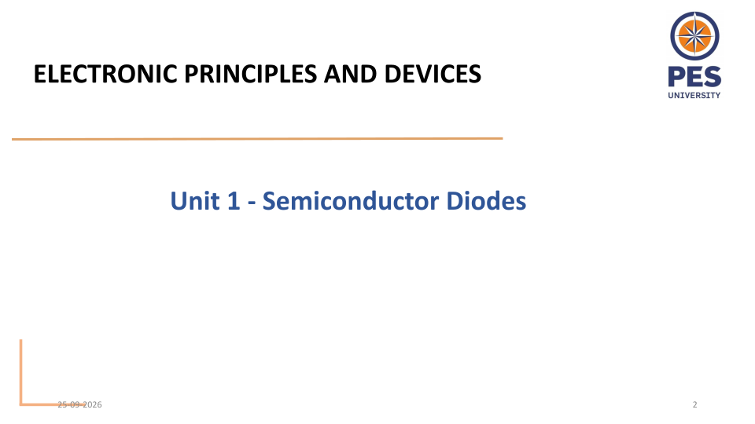
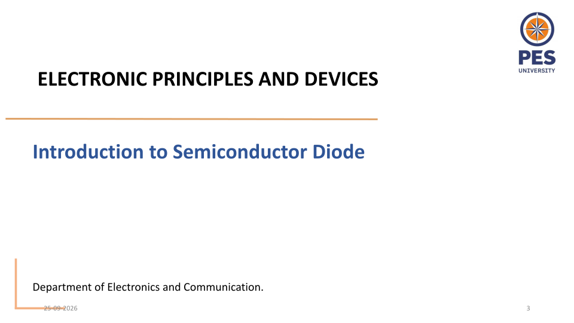
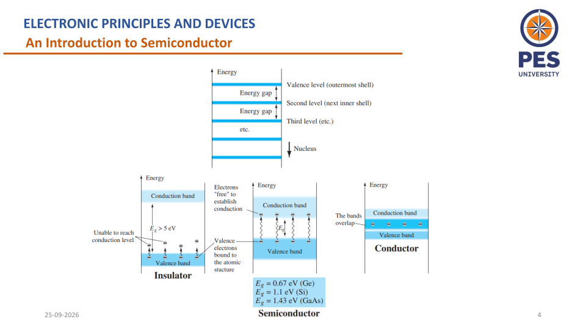
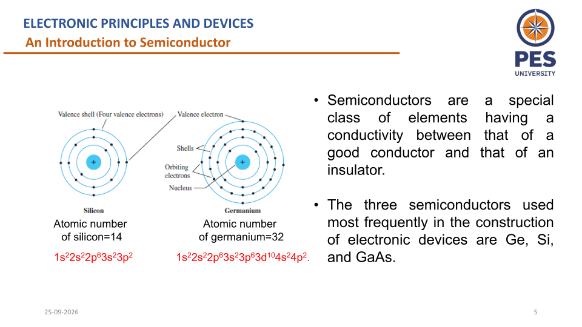
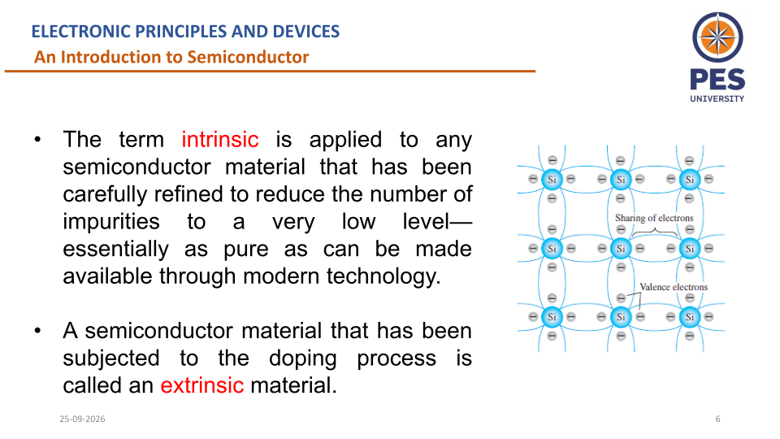
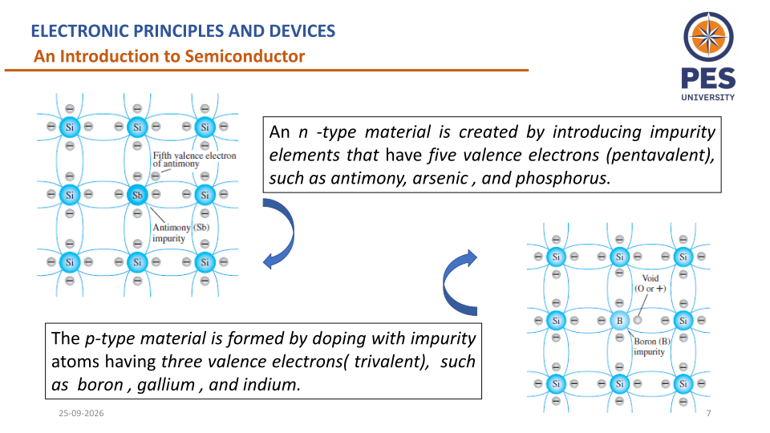
Important points and why
- Source slide page 1 (extracted text): ELECTRONIC PRINCIPLES AND DEVICES (4-0-0-4-4) (UE26EC141A) Department of Electronics and Communication Engineering 25-09-2026 1 EV0000102 · EV0000103 · EV0000104
- Source slide page 2 (extracted text): ELECTRONIC PRINCIPLES AND DEVICES Unit 1 - Semiconductor Diodes 25-09-2026 2 EV0000105 · EV0000106 · EV0000107
- Source slide page 3 (extracted text): ELECTRONIC PRINCIPLES AND DEVICES Introduction to Semiconductor Diode Department of Electronics and Communication. 25-09-2026 3 EV0000108 · EV0000109 · EV0000110
- Source slide page 4 (extracted text): ELECTRONIC PRINCIPLES AND DEVICES An Introduction to Semiconductor 25-09-2026 4 EV0000111 · EV0000112 · EV0000113
- Source slide page 5 (extracted text): ELECTRONIC PRINCIPLES AND DEVICES An Introduction to Semiconductor • Semiconductors are a special class of elements having a conductivity between that of a good conductor and that of an insulator. • The three semiconductors used Atomic number Atomic number most frequently in the construction of silicon=14 of germanium=32 of electronic devices are Ge, Si, 1s22s22p63s23p2 1s22s22p63s23p63d104s24p2. and GaAs. 25-09-2026 5 EV0000114 · EV0000115 · EV0000116
- Source slide page 6 (extracted text): ELECTRONIC PRINCIPLES AND DEVICES An Introduction to Semiconductor • The term intrinsic is applied to any semiconductor material that has been carefully refined to reduce the number of impurities to a very low level— essentially as pure as can be made available through modern technology. • A semiconductor material that has been subjected to the doping process is called an extrinsic material. 25-09-2026 6 EV0000117 · EV0000118 · EV0000119
- Source slide page 7 (extracted text): ELECTRONIC PRINCIPLES AND DEVICES An Introduction to Semiconductor An n -type material is created by introducing impurity elements that have five valence electrons (pentavalent), such as antimony, arsenic , and phosphorus. The p-type material is formed by doping with impurity atoms having three valence electrons( trivalent), such as boron , gallium , and indium. 25-09-2026 7 EV0000120 · EV0000121 · EV0000122
- Source slide page 8 (extracted text): THANK YOU Department of Electronics and Communication 25-09-2026 8 EV0000123 · EV0000124 · EV0000125
3Semiconductor diode under no bias, forward bias and reverse bias conditions
This lesson is indexed from the source video titled Semiconductor diode under no bias, forward bias and reverse bias conditions. Its complete timestamped transcript is preserved below in segment order. The original video path and content hash are recorded in datasets/lecture-corpus.json. Transcript text is source wording; it has not been silently corrected or rewritten. A candidate slide deck is grouped here according to the current matching score; the exact path and page locators are listed in the source evidence. EV0000010 · EV0000011
Graphs and diagrams

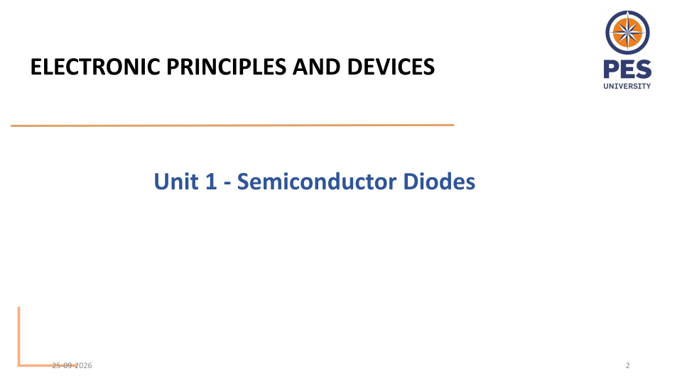
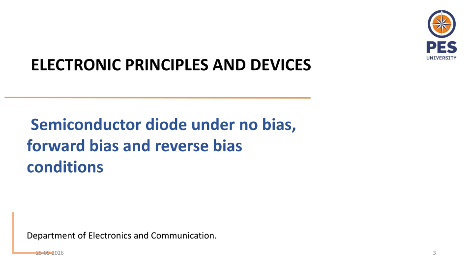
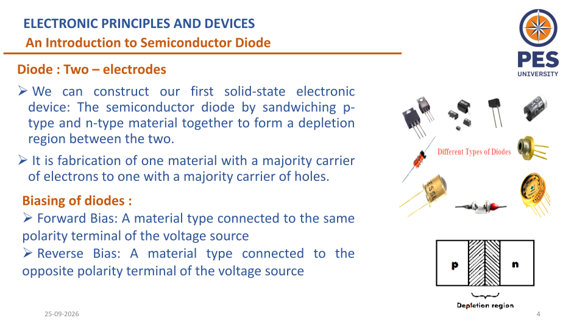
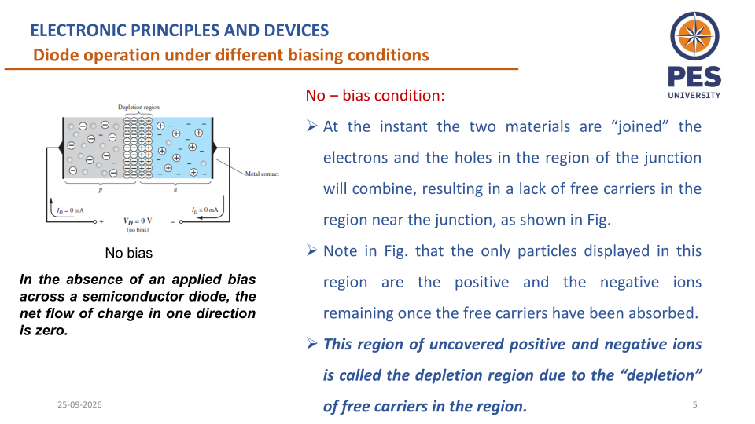
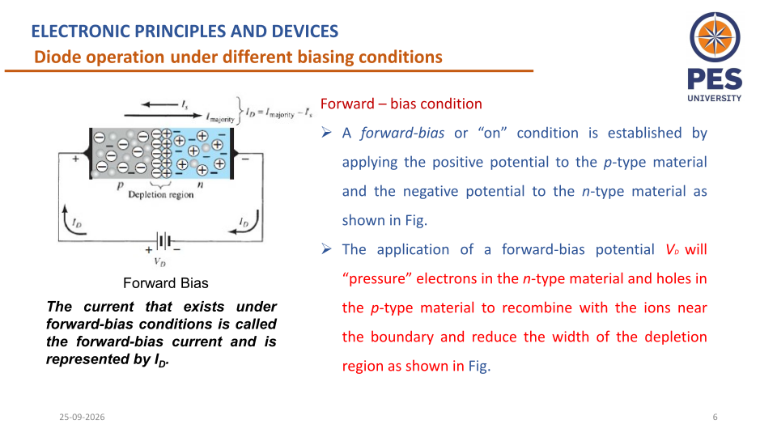
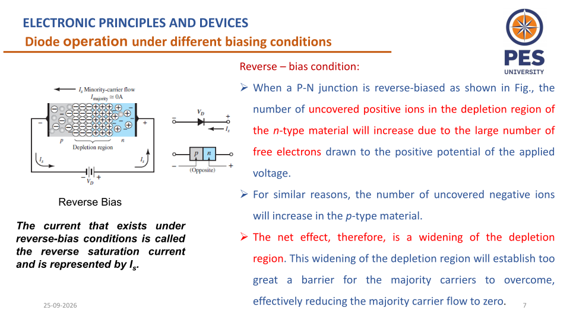
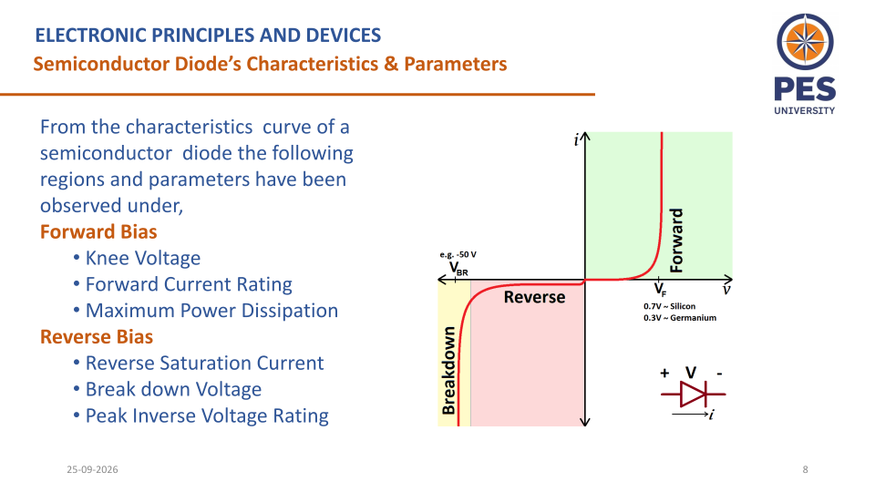
Important points and why
- Source slide page 1 (extracted text): ELECTRONIC PRINCIPLES AND DEVICES (4-0-0-4-4) (UE26EC141A) Department of Electronics and Communication Engineering 25-09-2026 1 EV0000126 · EV0000127 · EV0000128
- Source slide page 2 (extracted text): ELECTRONIC PRINCIPLES AND DEVICES Unit 1 - Semiconductor Diodes 25-09-2026 2 EV0000129 · EV0000130 · EV0000131
- Source slide page 3 (extracted text): ELECTRONIC PRINCIPLES AND DEVICES Semiconductor diode under no bias, forward bias and reverse bias conditions Department of Electronics and Communication. 25-09-2026 3 EV0000132 · EV0000133 · EV0000134
- Source slide page 4 (extracted text): ELECTRONIC PRINCIPLES AND DEVICES An Introduction to Semiconductor Diode Diode : Two – electrodes We can construct our first solid-state electronic device: The semiconductor diode by sandwiching p- type and n-type material together to form a depletion region between the two. It is fabrication of one material with a majority carrier of electrons to one with a majority carrier of holes. Biasing of diodes : Forward Bias: A material type connected to the same polarity terminal of the voltage source Reverse Bias: A material type connected to the opposite polarity terminal of the voltage source 25-09-2026 4 EV0000135 · EV0000136 · EV0000137
- Source slide page 5 (extracted text): ELECTRONIC PRINCIPLES AND DEVICES Diode operation under different biasing conditions No – bias condition: At the instant the two materials are “joined” the electrons and the holes in the region of the junction will combine, resulting in a lack of free carriers in the region near the junction, as shown in Fig. No bias Note in Fig. that the only particles displayed in this In the absence of an applied bias region are the positive and the negative ions across a semiconductor diode, the net flow of charge in one direction remaining once the free carriers have been absorbed. is zero. This region of uncovered positive and negative ions is called the depletion region due to the “depletion” 25-09-2026 of free carriers in the region. 5 EV0000138 · EV0000139 · EV0000140
- Source slide page 6 (extracted text): ELECTRONIC PRINCIPLES AND DEVICES Diode operation under different biasing conditions Forward – bias condition A forward-bias or “on” condition is established by applying the positive potential to the p-type material and the negative potential to the n-type material as shown in Fig. The application of a forward-bias potential VD will “pressure” electrons in the n-type material and holes in Forward Bias The current that exists under the p-type material to recombine with the ions near forward-bias conditions is called the boundary and reduce the width of the depletion the forward-bias current and is represented by ID. region as shown in Fig. 25-09-2026 6 EV0000141 · EV0000142 · EV0000143
- Source slide page 7 (extracted text): ELECTRONIC PRINCIPLES AND DEVICES Diode operation under different biasing conditions Reverse – bias condition: When a P-N junction is reverse-biased as shown in Fig., the number of uncovered positive ions in the depletion region of the n-type material will increase due to the large number of free electrons drawn to the positive potential of the applied voltage. For similar reasons, the number of uncovered negative ions Reverse Bias will increase in the p-type material. The current that exists under reverse-bias conditions is called The net effect, therefore, is a widening of the depletion the reverse saturation current region. This widening of the depletion region will establish tooand is represented by Is. great a barrier for the majority carriers to overcome, 25-09-2026 effectively reducing the majority carrier flow to zero. 7 EV0000144 · EV0000145 · EV0000146
- Source slide page 8 (extracted text): ELECTRONIC PRINCIPLES AND DEVICES Semiconductor Diode’s Characteristics & Parameters From the characteristics curve of a semiconductor diode the following regions and parameters have been observed under, Forward Bias • Knee Voltage • Forward Current Rating • Maximum Power Dissipation Reverse Bias • Reverse Saturation Current • Break down Voltage • Peak Inverse Voltage Rating 25-09-2026 8 EV0000147 · EV0000148 · EV0000149
- Source slide page 9 (extracted text): THANK YOU Department of Electronics and Communication 25-09-2026 9 EV0000150 · EV0000151 · EV0000152
4Diode characteristics, Shockley’s equation
This lesson is indexed from the source video titled Diode characteristics, Shockley’s equation. Its complete timestamped transcript is preserved below in segment order. The original video path and content hash are recorded in datasets/lecture-corpus.json. Transcript text is source wording; it has not been silently corrected or rewritten. A candidate slide deck is grouped here according to the current matching score; the exact path and page locators are listed in the source evidence. EV0000018 · EV0000019
Graphs and diagrams

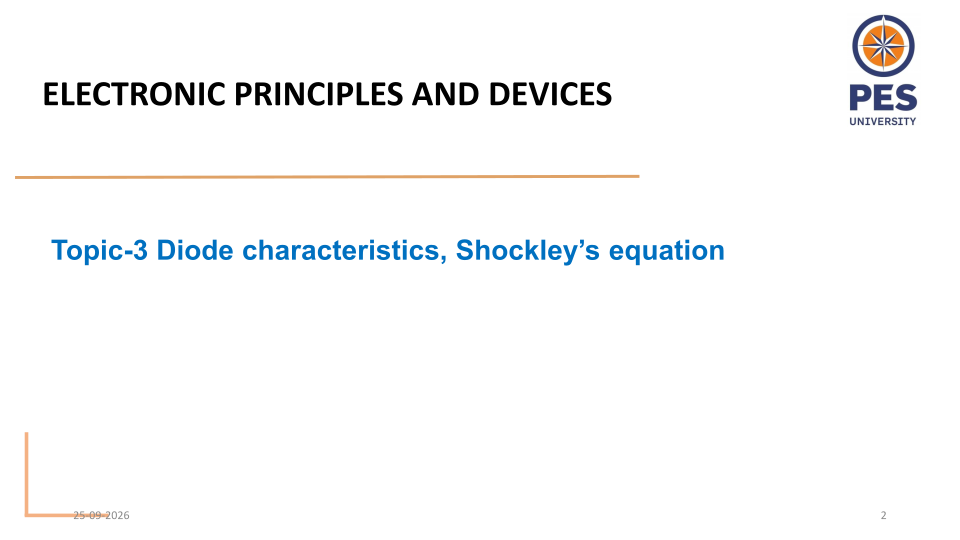
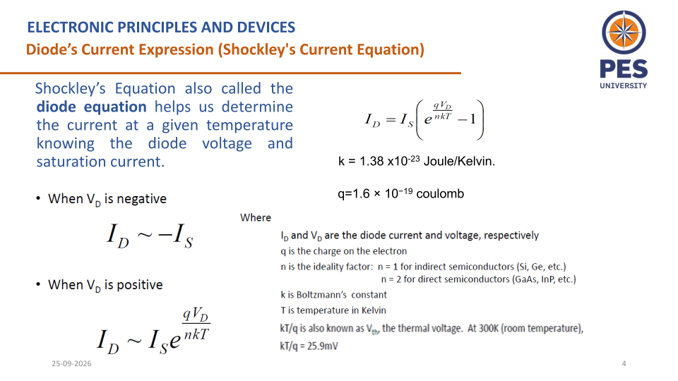
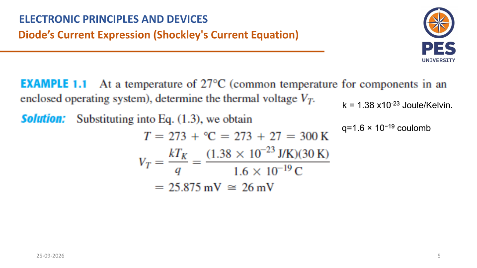
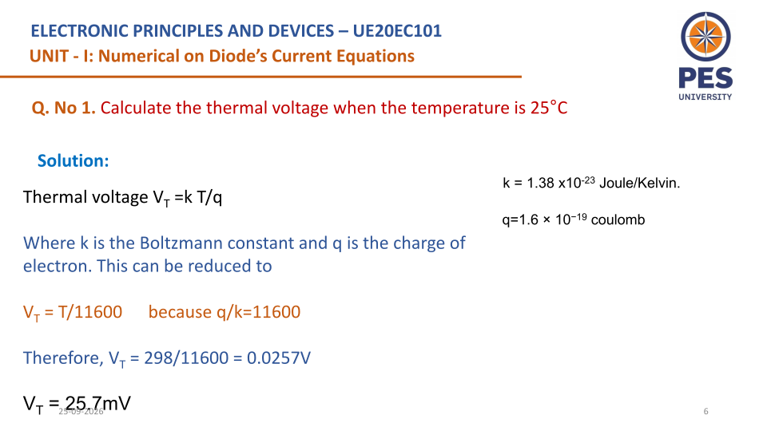
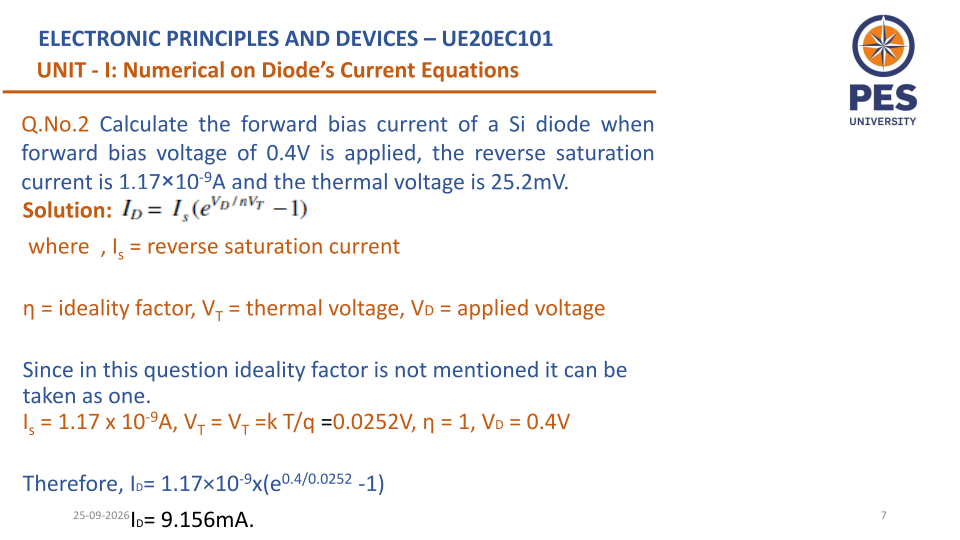
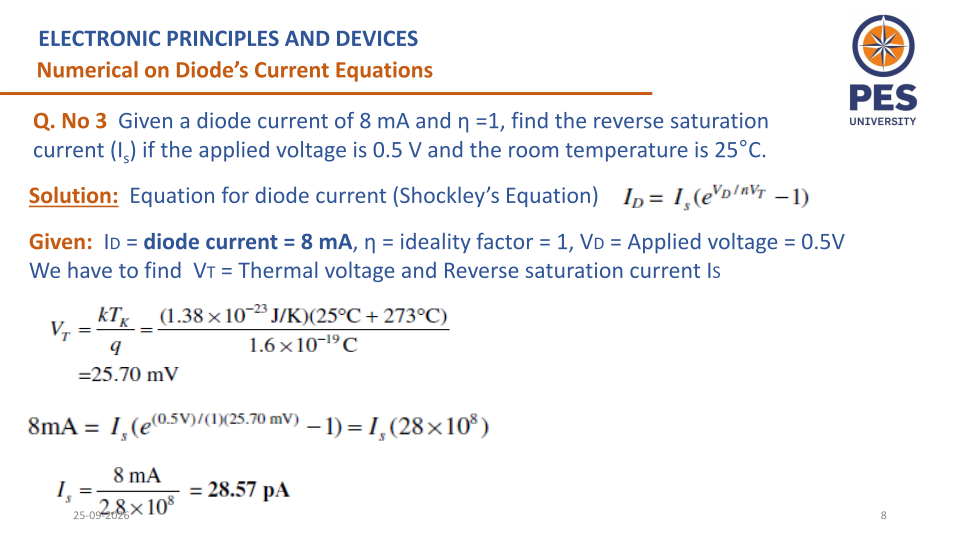
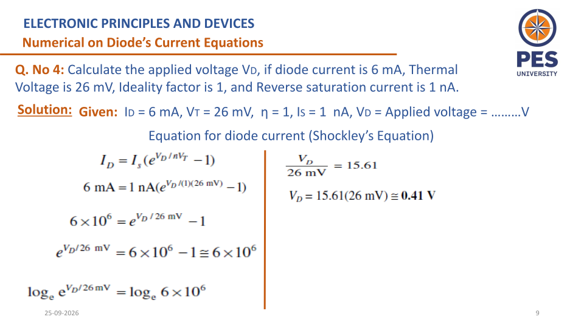
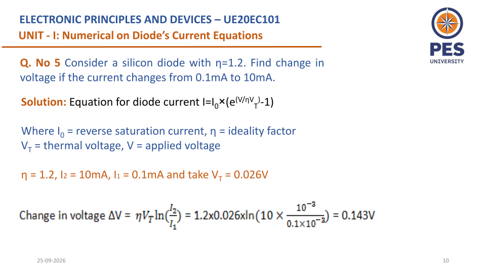
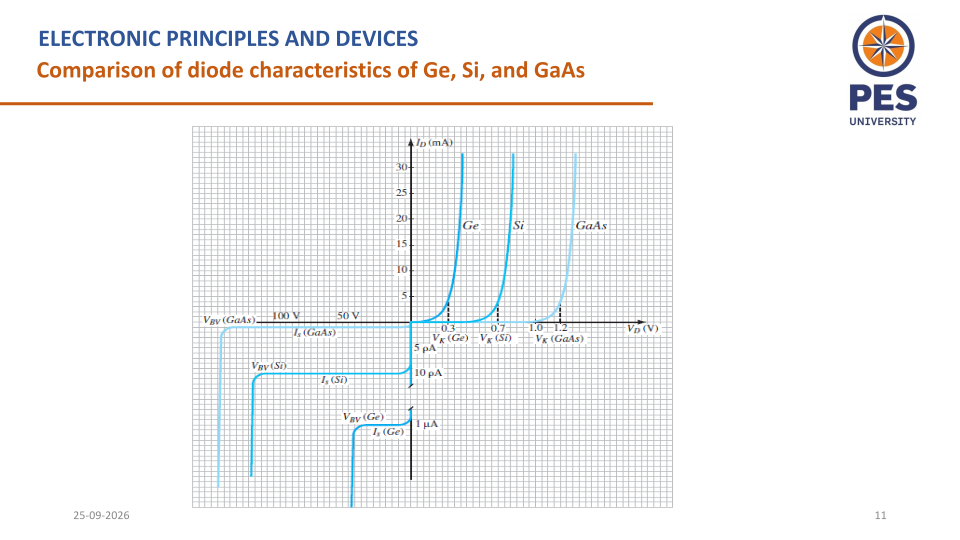

Important points and why
- Source slide page 1 (extracted text): ELECTRONIC PRINCIPLES AND DEVICES (4-0-0-4-4) (UE26EC141A) Department of Electronics and Communication Engineering 25-09-2026 1 EV0000153 · EV0000154 · EV0000155
- Source slide page 2 (extracted text): ELECTRONIC PRINCIPLES AND DEVICES Topic-3 Diode characteristics, Shockley’s equation 25-09-2026 2 EV0000156 · EV0000157 · EV0000158
- Source slide page 3 (extracted text): ELECTRONIC PRINCIPLES AND DEVICES Semiconductor Diode’s Characteristics & Parameters From the characteristics curve of a semiconductor diode the following regions and parameters have been observed under, Forward Bias • Knee Voltage • Forward Current Rating • Maximum Power Dissipation Reverse Bias • Reverse Saturation Current • Break down Voltage • Peak Inverse Voltage Rating 25-09-2026 3 EV0000159 · EV0000160 · EV0000161
- Source slide page 4 (extracted text): ELECTRONIC PRINCIPLES AND DEVICES Diode’s Current Expression (Shockley's Current Equation) Shockley’s Equation also called the diode equation helps us determine the current at a given temperature knowing the diode voltage and saturation current. k = 1.38 x10-23 Joule/Kelvin. q=1.6 × 10−19 coulomb 25-09-2026 4 EV0000162 · EV0000163 · EV0000164
- Source slide page 5 (extracted text): ELECTRONIC PRINCIPLES AND DEVICES Diode’s Current Expression (Shockley's Current Equation) k = 1.38 x10-23 Joule/Kelvin. q=1.6 × 10−19 coulomb 25-09-2026 5 EV0000165 · EV0000166 · EV0000167
- Source slide page 6 (extracted text): ELECTRONIC PRINCIPLES AND DEVICES – UE20EC101 UNIT - I: Numerical on Diode’s Current Equations Q. No 1. Calculate the thermal voltage when the temperature is 25°C Solution: k = 1.38 x10-23 Joule/Kelvin. Thermal voltage VT =k T/q q=1.6 × 10−19 coulomb Where k is the Boltzmann constant and q is the charge of electron. This can be reduced to VT = T/11600 because q/k=11600 Therefore, VT = 298/11600 = 0.0257V VT =25-09-202625.7mV 6 EV0000168 · EV0000169 · EV0000170
- Source slide page 7 (extracted text): ELECTRONIC PRINCIPLES AND DEVICES – UE20EC101 UNIT - I: Numerical on Diode’s Current Equations Q.No.2 Calculate the forward bias current of a Si diode when forward bias voltage of 0.4V is applied, the reverse saturation current is 1.17×10-9A and the thermal voltage is 25.2mV. Solution: where , Is = reverse saturation current η = ideality factor, VT = thermal voltage, VD = applied voltage Since in this question ideality factor is not mentioned it can be taken as one. Is = 1.17 x 10-9A, VT = VT =k T/q =0.0252V, η = 1, VD = 0.4V Therefore, ID= 1.17×10-9x(e0.4/0.0252 -1) 25-09-2026 ID= 9.156mA. 7 EV0000171 · EV0000172 · EV0000173
- Source slide page 8 (extracted text): ELECTRONIC PRINCIPLES AND DEVICES Numerical on Diode’s Current Equations Q. No 3 Given a diode current of 8 mA and η =1, find the reverse saturation current if the applied voltage is 0.5 V and the room temperature is 25°C. (Is) Solution: Equation for diode current (Shockley’s Equation) Given: ID = diode current = 8 mA, η = ideality factor = 1, VD = Applied voltage = 0.5V We have to find VT = Thermal voltage and Reverse saturation current IS 25-09-2026 8 EV0000174 · EV0000175 · EV0000176
- Source slide page 9 (extracted text): ELECTRONIC PRINCIPLES AND DEVICES Numerical on Diode’s Current Equations Q. No 4: Calculate the applied voltage VD, if diode current is 6 mA, Thermal Voltage is 26 mV, Ideality factor is 1, and Reverse saturation current is 1 nA. Solution: Given: ID = 6 mA, VT = 26 mV, η = 1, IS = 1 nA, VD = Applied voltage = ………V Equation for diode current (Shockley’s Equation) 25-09-2026 9 EV0000177 · EV0000178 · EV0000179
- Source slide page 10 (extracted text): ELECTRONIC PRINCIPLES AND DEVICES – UE20EC101 UNIT - I: Numerical on Diode’s Current Equations Q. No 5 Consider a silicon diode with η=1.2. Find change in voltage if the current changes from 0.1mA to 10mA. Solution: Equation for diode current I=I0×(e(V/ηVT )-1) Where I0 = reverse saturation current, η = ideality factor VT = thermal voltage, V = applied voltage η = 1.2, I2 = 10mA, I1 = 0.1mA and take VT = 0.026V 25-09-2026 10 EV0000180 · EV0000181 · EV0000182
- Source slide page 11 (extracted text): ELECTRONIC PRINCIPLES AND DEVICES Comparison of diode characteristics of Ge, Si, and GaAs 25-09-2026 11 EV0000183 · EV0000184 · EV0000185
- Source slide page 12 (extracted text): THANK YOU Department of Electronics and Communication 25-09-2026 12 EV0000186 · EV0000187 · EV0000188
5Zener and Avalanche breakdown, Temperature effects
This lesson is indexed from the source video titled Zener and Avalanche breakdown, Temperature effects. Its complete timestamped transcript is preserved below in segment order. The original video path and content hash are recorded in datasets/lecture-corpus.json. Transcript text is source wording; it has not been silently corrected or rewritten. A candidate slide deck is grouped here according to the current matching score; the exact path and page locators are listed in the source evidence. EV0000030 · EV0000031
Graphs and diagrams

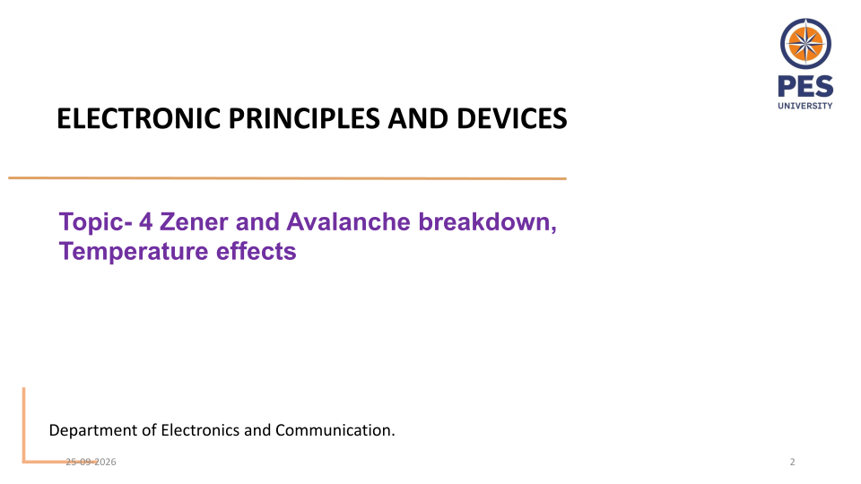
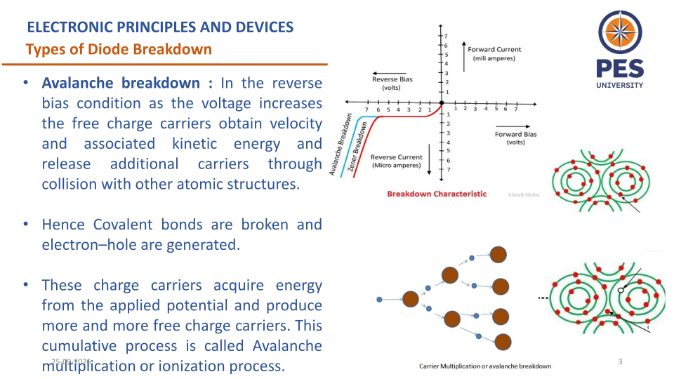
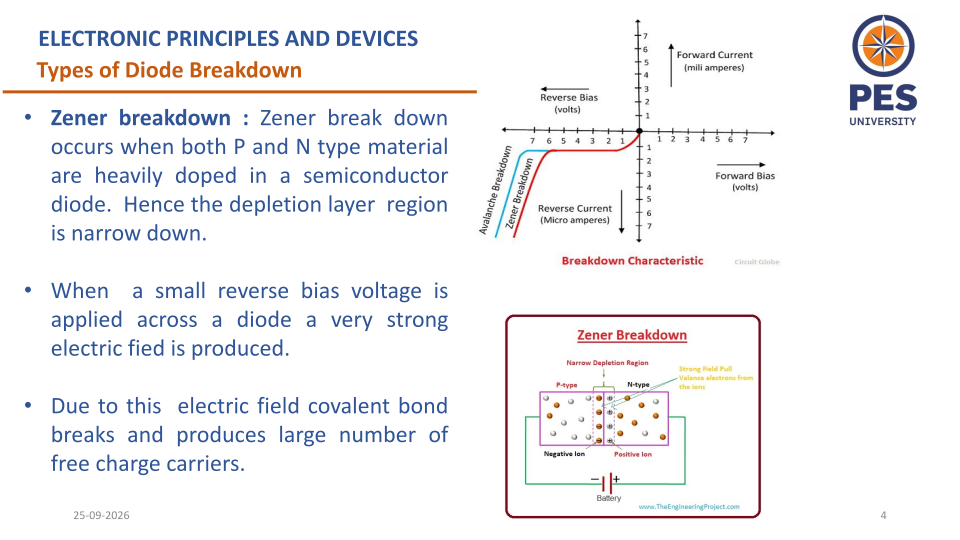
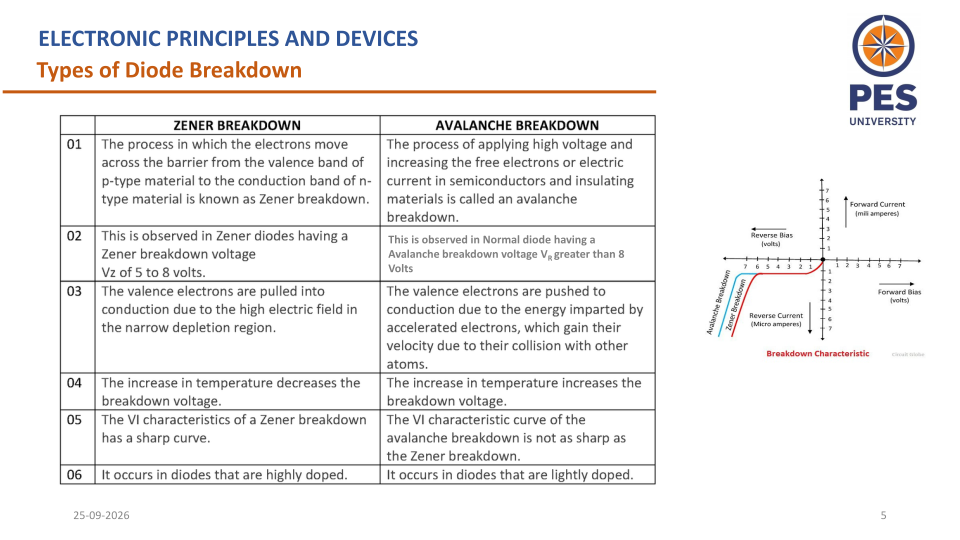
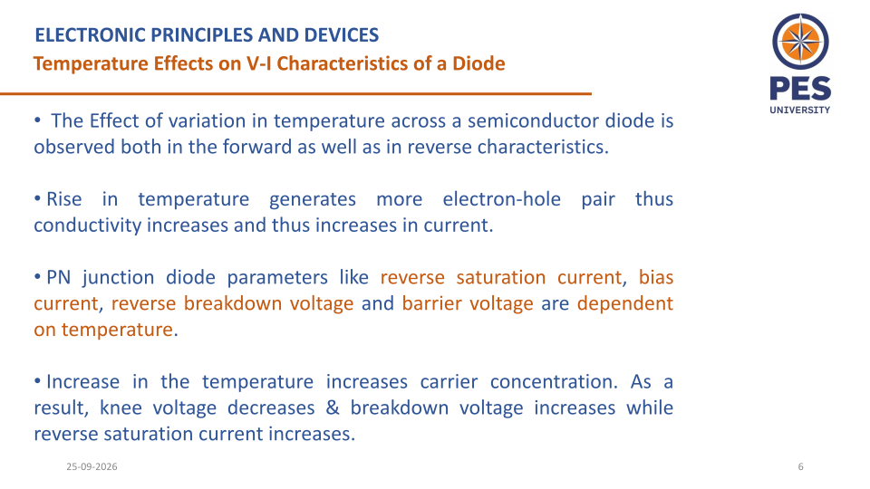
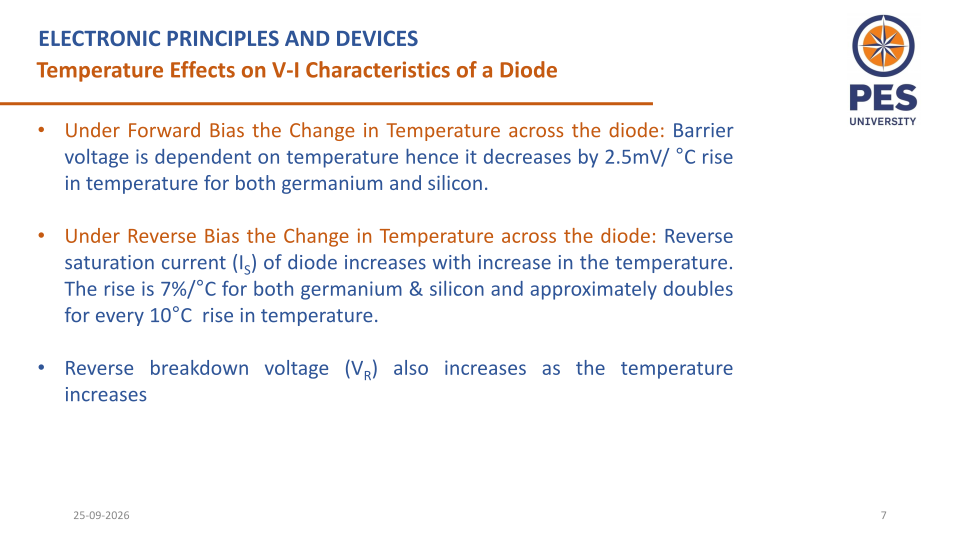
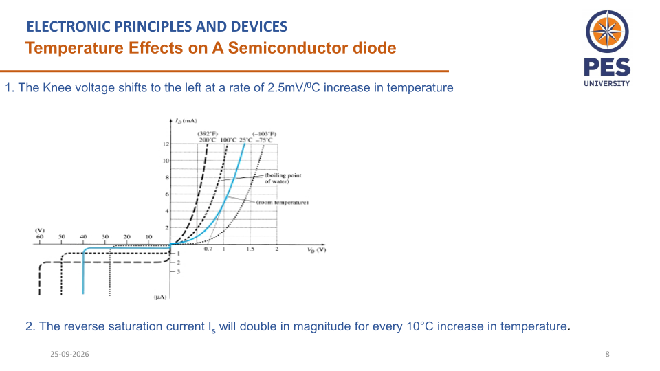
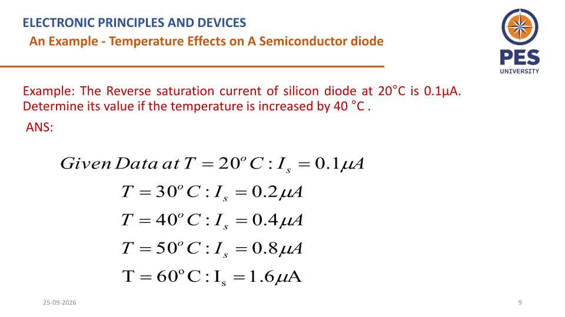
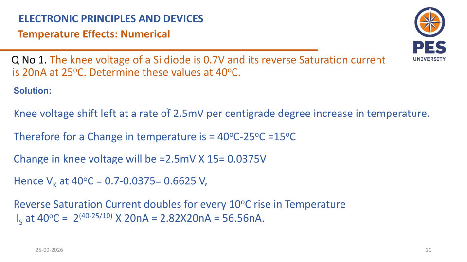
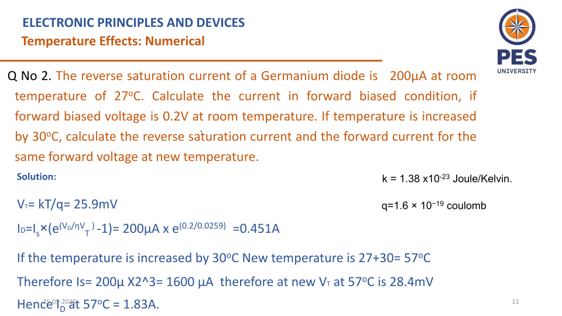
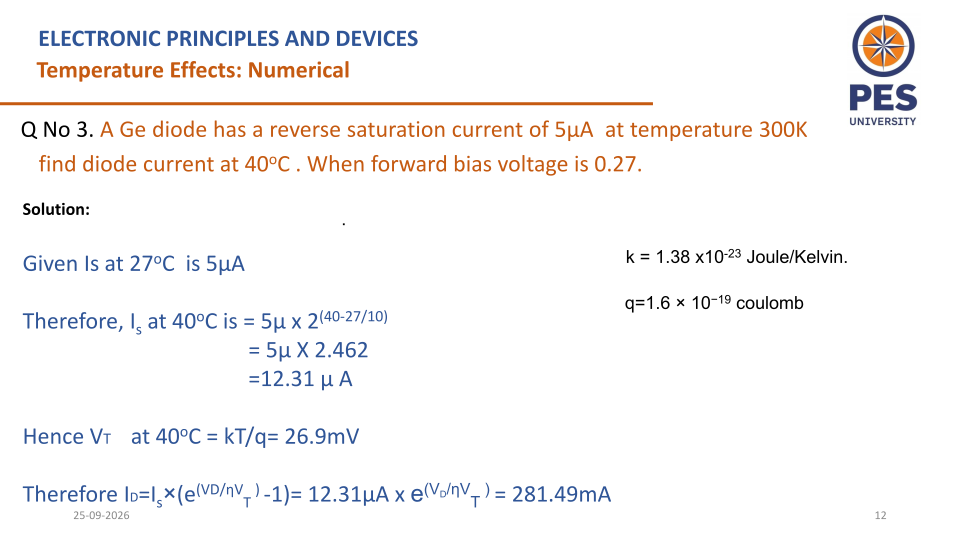
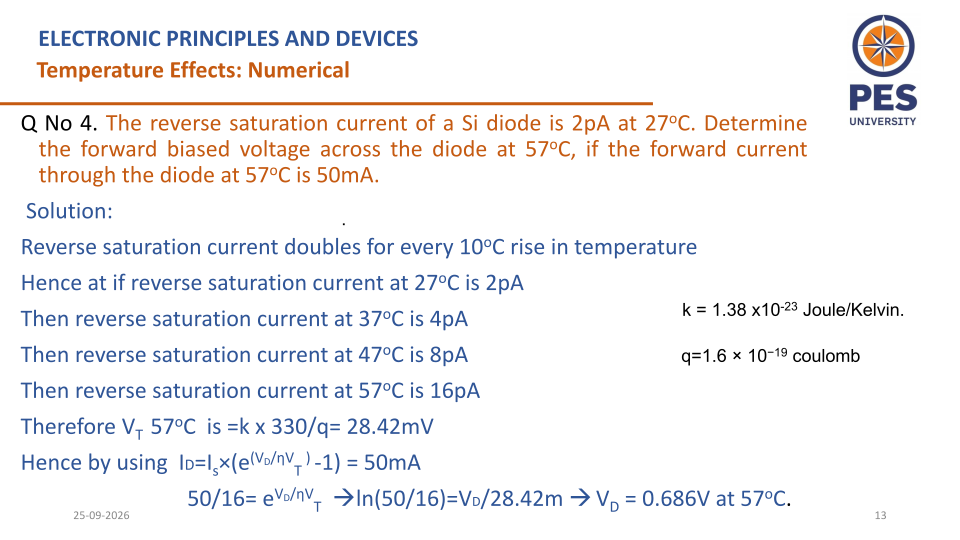
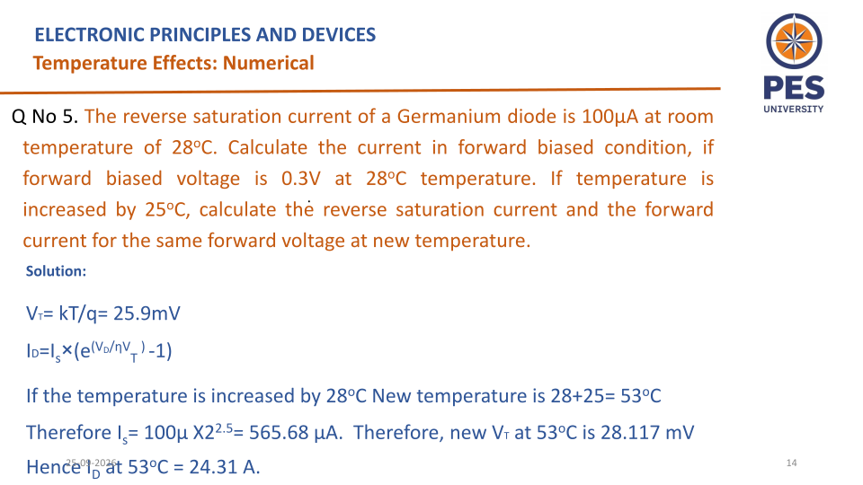
Important points and why
- Source slide page 1 (extracted text): ELECTRONIC PRINCIPLES AND DEVICES (4-0-0-4-4) (UE26EC141A) Department of Electronics and Communication Engineering 25-09-2026 1 EV0000189 · EV0000190 · EV0000191
- Source slide page 2 (extracted text): ELECTRONIC PRINCIPLES AND DEVICES Topic- 4 Zener and Avalanche breakdown, Temperature effects Department of Electronics and Communication. 25-09-2026 2 EV0000192 · EV0000193 · EV0000194
- Source slide page 3 (extracted text): ELECTRONIC PRINCIPLES AND DEVICES Types of Diode Breakdown • Avalanche breakdown : In the reverse bias condition as the voltage increases the free charge carriers obtain velocity and associated kinetic energy and release additional carriers through collision with other atomic structures. • Hence Covalent bonds are broken and electron–hole are generated. • These charge carriers acquire energy from the applied potential and produce more and more free charge carriers. This cumulative process is called Avalanche multiplication25-09-2026 or ionization process. 3 EV0000195 · EV0000196 · EV0000197
- Source slide page 4 (extracted text): ELECTRONIC PRINCIPLES AND DEVICES Types of Diode Breakdown • Zener breakdown : Zener break down occurs when both P and N type material are heavily doped in a semiconductor diode. Hence the depletion layer region is narrow down. • When a small reverse bias voltage is applied across a diode a very strong electric fied is produced. • Due to this electric field covalent bond breaks and produces large number of free charge carriers. 25-09-2026 4 EV0000198 · EV0000199 · EV0000200
- Source slide page 5 (extracted text): ELECTRONIC PRINCIPLES AND DEVICES Types of Diode Breakdown This is observed in Normal diode having a Avalanche breakdown voltage VR greater than 8 Volts 25-09-2026 5 EV0000201 · EV0000202 · EV0000203
- Source slide page 6 (extracted text): ELECTRONIC PRINCIPLES AND DEVICES Temperature Effects on V-I Characteristics of a Diode • The Effect of variation in temperature across a semiconductor diode is observed both in the forward as well as in reverse characteristics. • Rise in temperature generates more electron-hole pair thus conductivity increases and thus increases in current. • PN junction diode parameters like reverse saturation current, bias current, reverse breakdown voltage and barrier voltage are dependent on temperature. • Increase in the temperature increases carrier concentration. As a result, knee voltage decreases & breakdown voltage increases while reverse saturation current increases. 25-09-2026 6 EV0000204 · EV0000205 · EV0000206
- Source slide page 7 (extracted text): ELECTRONIC PRINCIPLES AND DEVICES Temperature Effects on V-I Characteristics of a Diode • Under Forward Bias the Change in Temperature across the diode: Barrier voltage is dependent on temperature hence it decreases by 2.5mV/ °C rise in temperature for both germanium and silicon. • Under Reverse Bias the Change in Temperature across the diode: Reverse saturation current (IS) of diode increases with increase in the temperature. The rise is 7%/°C for both germanium & silicon and approximately doubles for every 10°C rise in temperature. • Reverse breakdown voltage also increases as the temperature (VR) increases 25-09-2026 7 EV0000207 · EV0000208 · EV0000209
- Source slide page 8 (extracted text): ELECTRONIC PRINCIPLES AND DEVICES Temperature Effects on A Semiconductor diode 1. The Knee voltage shifts to the left at a rate of 2.5mV/0C increase in temperature . 2. The reverse saturation current Is will double in magnitude for every 10°C increase in temperature. 25-09-2026 8 EV0000210 · EV0000211 · EV0000212
- Source slide page 9 (extracted text): ELECTRONIC PRINCIPLES AND DEVICES An Example - Temperature Effects on A Semiconductor diode Example: The Reverse saturation current of silicon diode at 20°C is 0.1µA. Determine its value if the temperature is increased by 40 °C . ANS: Given Data at T 20o C : I 0. 1A s T 30o C : I 0. 2A s T 40o C : I 0. 4A s T 50o C : I 0. 8A s T 60o C : I 1.6A s 25-09-2026 9 EV0000213 · EV0000214 · EV0000215
- Source slide page 10 (extracted text): ELECTRONIC PRINCIPLES AND DEVICES Temperature Effects: Numerical Q No 1. The knee voltage of a Si diode is 0.7V and its reverse Saturation current is 20nA at 25oC. Determine these values at 40oC. Solution: . Knee voltage shift left at a rate of 2.5mV per centigrade degree increase in temperature. Therefore for a Change in temperature is = 40oC-25oC =15oC Change in knee voltage will be =2.5mV X 15= 0.0375V Hence VK at 40oC = 0.7-0.0375= 0.6625 V, Reverse Saturation Current doubles for every 10oC rise in Temperature IS at 40oC = 2(40-25/10) X 20nA = 2.82X20nA = 56.56nA. 25-09-2026 10 EV0000216 · EV0000217 · EV0000218
- Source slide page 11 (extracted text): ELECTRONIC PRINCIPLES AND DEVICES Temperature Effects: Numerical Q No 2. The reverse saturation current of a Germanium diode is 200µA at room temperature of 27oC. Calculate the current in forward biased condition, if forward biased voltage is 0.2V at room temperature. If temperature is increased . by 30oC, calculate the reverse saturation current and the forward current for the same forward voltage at new temperature. Solution: k = 1.38 x10-23 Joule/Kelvin. VT= kT/q= 25.9mV q=1.6 × 10−19 coulomb 200µA x e(0.2/0.0259) =0.451A ID=Is×(e(VD/ηVT )-1)= If the temperature is increased by 30oC New temperature is 27+30= 57oC Therefore Is= 200µ X2^3= 1600 μA therefore at new VT at 57oC is 28.4mV Hence25-09-2026ID at 57oC = 1.83A. 11 EV0000219 · EV0000220 · EV0000221
- Source slide page 12 (extracted text): ELECTRONIC PRINCIPLES AND DEVICES Temperature Effects: Numerical Q No 3. A Ge diode has a reverse saturation current of 5µA at temperature 300K find diode current at 40oC . When forward bias voltage is 0.27. Solution: . k = 1.38 x10-23 Joule/Kelvin.Given Is at 27oC is 5µA q=1.6 × 10−19 coulomb Therefore, Is at 40oC is = 5µ x 2(40-27/10) = 5µ X 2.462 =12.31 µ A Hence VT at 40oC = kT/q= 26.9mV Therefore ID=Is×(e(VD/ηVT ) -1)= 12.31µA x e(VD/ηV T ) = 281.49mA 25-09-2026 12 EV0000222 · EV0000223 · EV0000224
- Source slide page 13 (extracted text): ELECTRONIC PRINCIPLES AND DEVICES Temperature Effects: Numerical Q No 4. The reverse saturation current of a Si diode is 2pA at 27oC. Determine the forward biased voltage across the diode at 57oC, if the forward current through the diode at 57oC is 50mA. Solution: . Reverse saturation current doubles for every 10oC rise in temperature Hence at if reverse saturation current at 27oC is 2pA k = 1.38 x10-23 Joule/Kelvin.Then reverse saturation current at 37oC is 4pA Then reverse saturation current at 47oC is 8pA q=1.6 × 10−19 coulomb Then reverse saturation current at 57oC is 16pA Therefore VT 57oC is =k x 330/q= 28.42mV Hence by using ID=Is×(e(VD/ηVT ) -1) = 50mA 50/16= eVD/ηV ln(50/16)=VD/28.42m = 0.686V at 57oC. T VD 25-09-2026 13 EV0000225 · EV0000226 · EV0000227
- Source slide page 14 (extracted text): ELECTRONIC PRINCIPLES AND DEVICES Temperature Effects: Numerical Q No 5. The reverse saturation current of a Germanium diode is 100µA at room temperature of 28oC. Calculate the current in forward biased condition, if forward biased voltage is 0.3V at 28oC temperature. If temperature is . increased by 25oC, calculate the reverse saturation current and the forward current for the same forward voltage at new temperature. Solution: VT= kT/q= 25.9mV ID=Is×(e(VD/ηVT )-1) If the temperature is increased by 28oC New temperature is 28+25= 53oC Therefore Is= 100µ X22.5= 565.68 μA. Therefore, new VT at 53oC is 28.117 mV Hence25-09-2026ID at 53oC = 24.31 A. 14 EV0000228 · EV0000229 · EV0000230
- Source slide page 15 (extracted text): ELECTRONIC PRINCIPLES AND DEVICES Diode Resistances • An actual diode offers a very small resistance (not zero) when forward biased and is called a forward resistance • Whereas, it offers a very high resistance (not infinite) when reverse biased and is called as a reverse resistance • Type of applied voltage or signal will define the following resistance levels i. DC or Static Resistance ii. AC or Dynamic Resistance iii. Average AC Resistance 25-09-2026 15 EV0000231 · EV0000232 · EV0000233
- Source slide page 16 (extracted text): THANK YOU Department of Electronics and Communication 25-09-2026 16 EV0000234 · EV0000235 · EV0000236
6Ideal versus Practical diode, Diode resistances
This lesson is indexed from the source video titled Ideal versus Practical diode, Diode resistances. Its complete timestamped transcript is preserved below in segment order. The original video path and content hash are recorded in datasets/lecture-corpus.json. Transcript text is source wording; it has not been silently corrected or rewritten. A candidate slide deck is grouped here according to the current matching score; the exact path and page locators are listed in the source evidence. EV0000038 · EV0000039
Graphs and diagrams
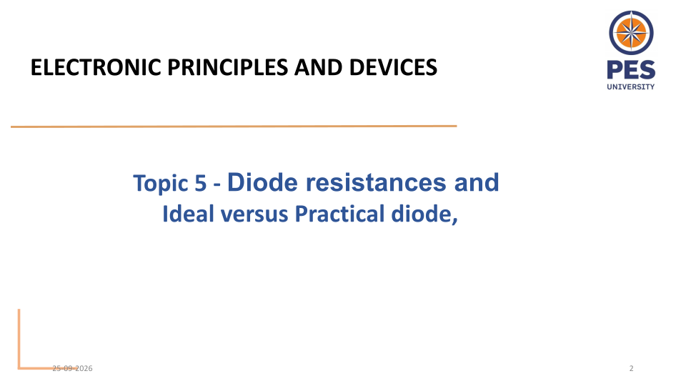
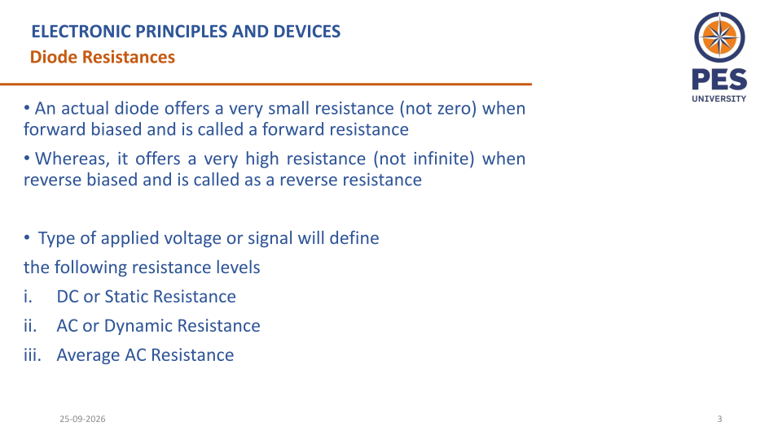
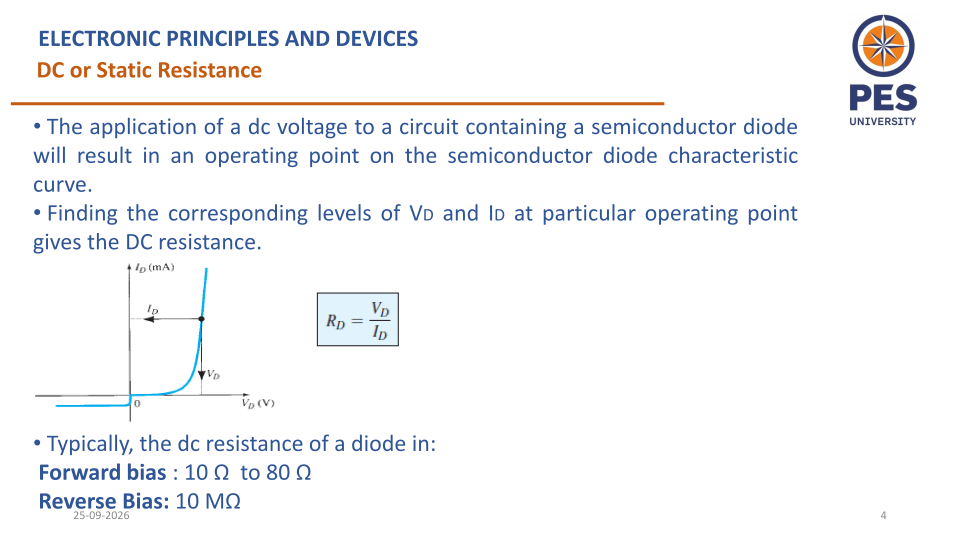
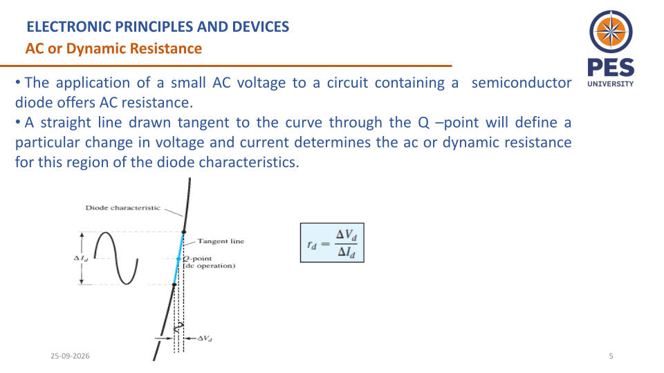
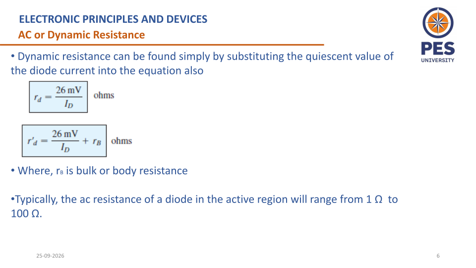
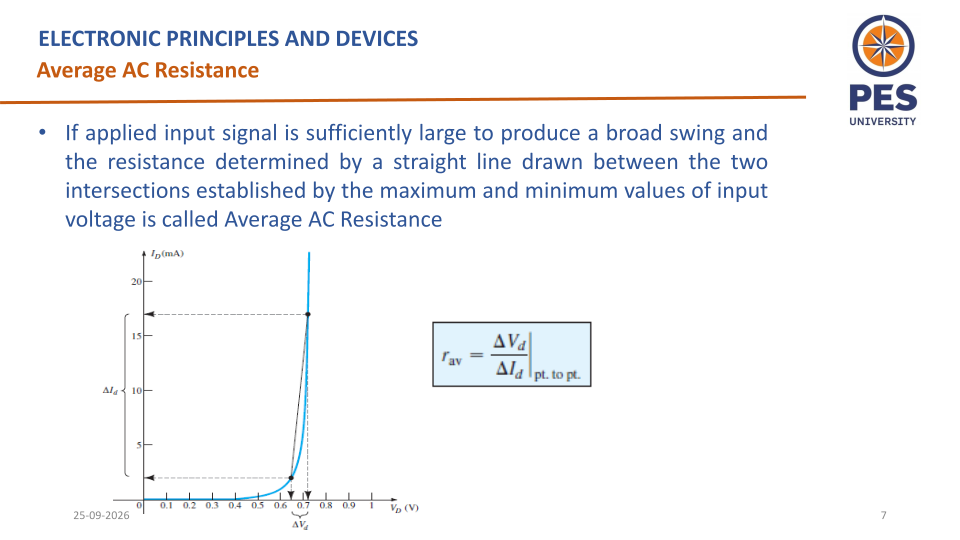
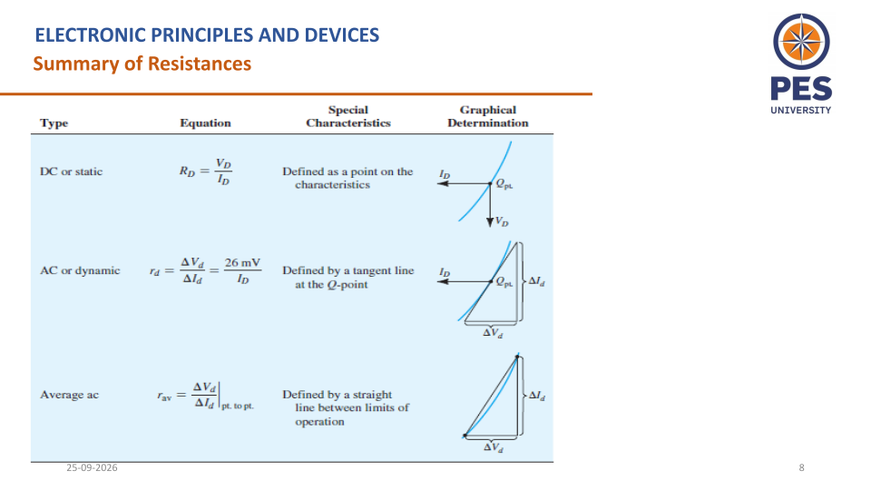
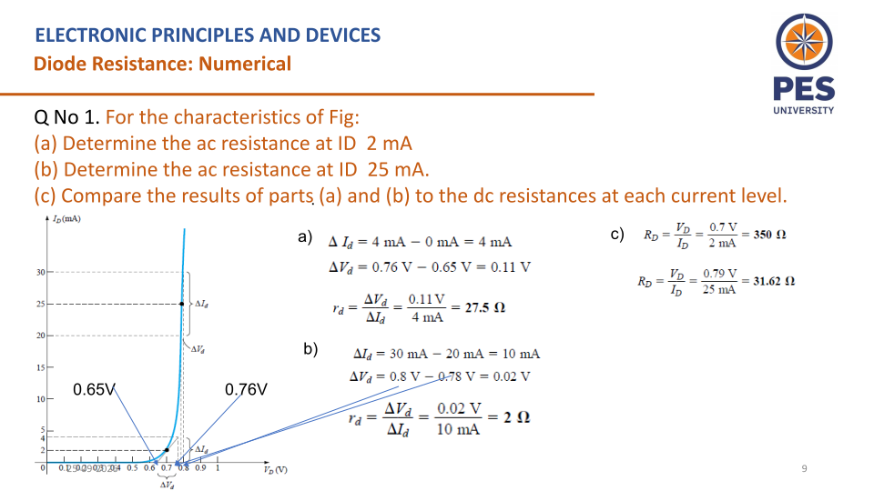
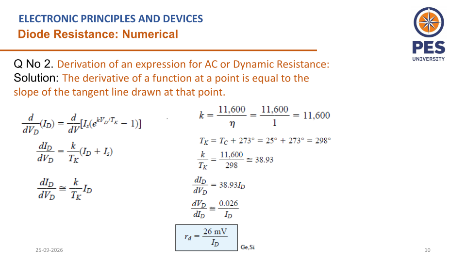
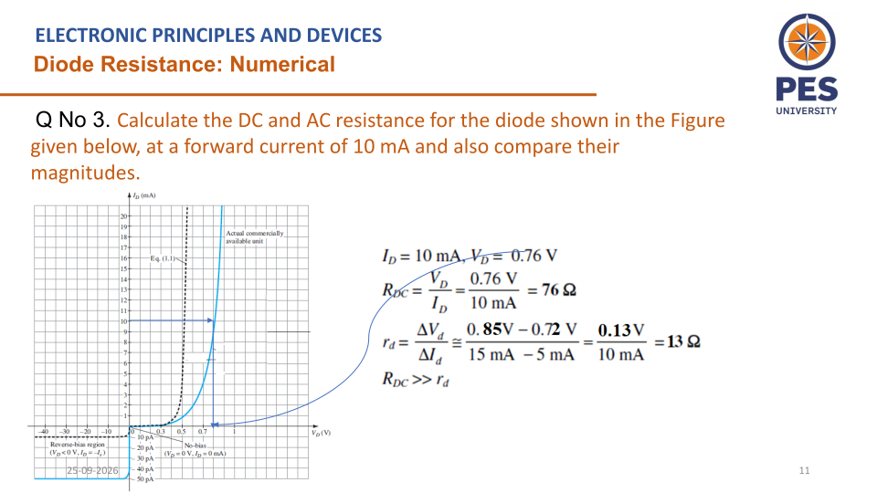
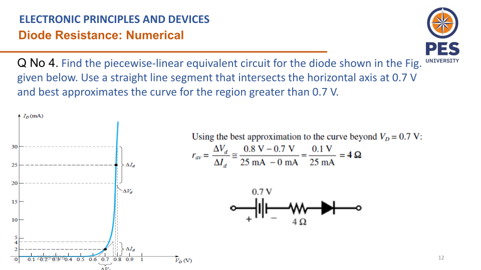
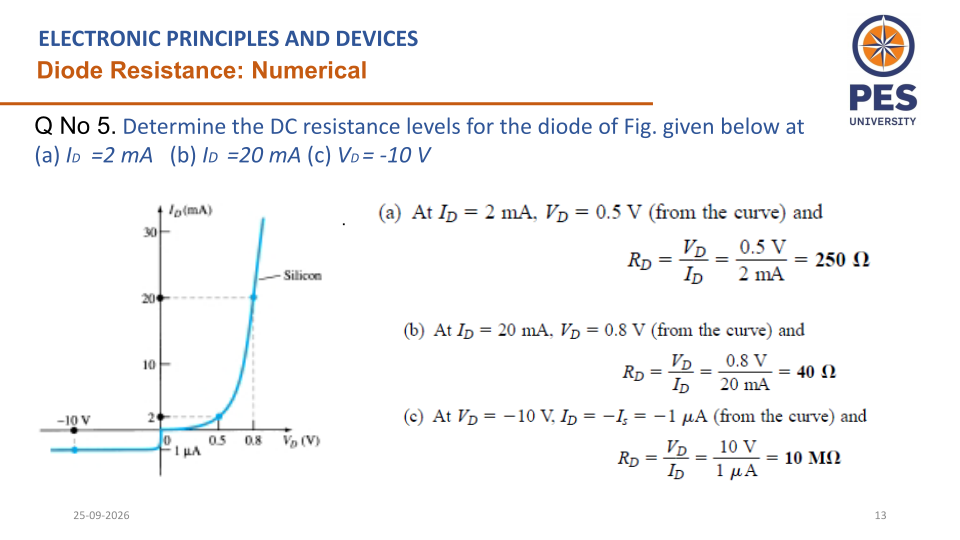
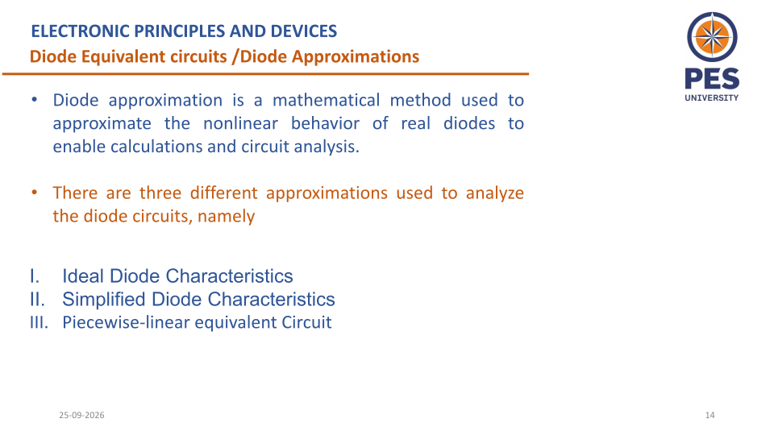
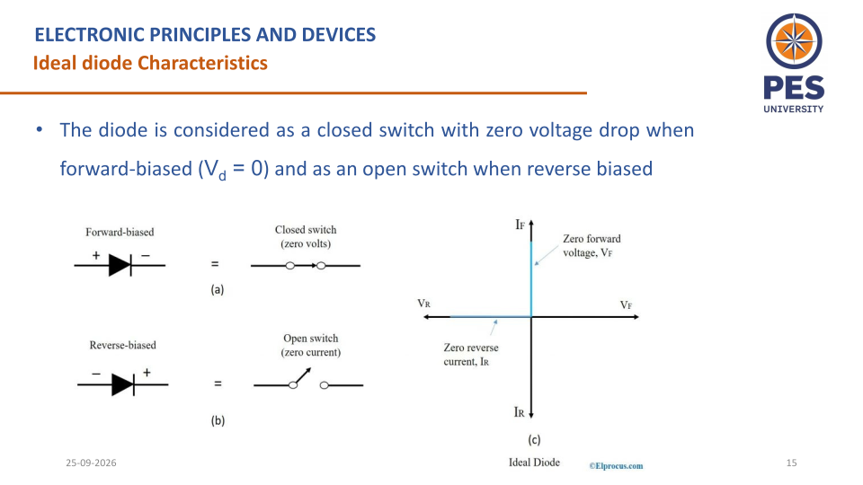
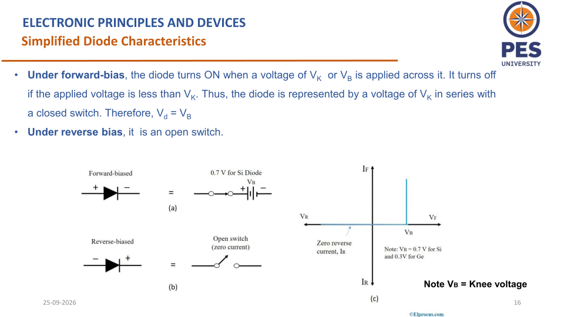
Important points and why
- Source slide page 1 (extracted text): ELECTRONIC PRINCIPLES AND DEVICES (4-0-0-4-4) (UE26EC141A) Department of Electronics and Communication Engineering 25-09-2026 1 EV0000237 · EV0000238 · EV0000239
- Source slide page 2 (extracted text): ELECTRONIC PRINCIPLES AND DEVICES Topic 5 - Diode resistances and Ideal versus Practical diode, 25-09-2026 2 EV0000240 · EV0000241 · EV0000242
- Source slide page 3 (extracted text): ELECTRONIC PRINCIPLES AND DEVICES Diode Resistances • An actual diode offers a very small resistance (not zero) when forward biased and is called a forward resistance • Whereas, it offers a very high resistance (not infinite) when reverse biased and is called as a reverse resistance • Type of applied voltage or signal will define the following resistance levels i. DC or Static Resistance ii. AC or Dynamic Resistance iii. Average AC Resistance 25-09-2026 3 EV0000243 · EV0000244 · EV0000245
- Source slide page 4 (extracted text): ELECTRONIC PRINCIPLES AND DEVICES DC or Static Resistance • The application of a dc voltage to a circuit containing a semiconductor diode will result in an operating point on the semiconductor diode characteristic curve. • Finding the corresponding levels of VD and ID at particular operating point gives the DC resistance. • Typically, the dc resistance of a diode in: Forward bias : 10 Ω to 80 Ω Reverse Bias: 10 MΩ 25-09-2026 4 EV0000246 · EV0000247 · EV0000248
- Source slide page 5 (extracted text): ELECTRONIC PRINCIPLES AND DEVICES AC or Dynamic Resistance • The application of a small AC voltage to a circuit containing a semiconductor diode offers AC resistance. • A straight line drawn tangent to the curve through the Q –point will define a particular change in voltage and current determines the ac or dynamic resistance for this region of the diode characteristics. 25-09-2026 5 EV0000249 · EV0000250 · EV0000251
- Source slide page 6 (extracted text): ELECTRONIC PRINCIPLES AND DEVICES AC or Dynamic Resistance • Dynamic resistance can be found simply by substituting the quiescent value of the diode current into the equation also • Where, rB is bulk or body resistance •Typically, the ac resistance of a diode in the active region will range from 1 Ω to 100 Ω. 25-09-2026 6 EV0000252 · EV0000253 · EV0000254
- Source slide page 7 (extracted text): ELECTRONIC PRINCIPLES AND DEVICES Average AC Resistance • If applied input signal is sufficiently large to produce a broad swing and the resistance determined by a straight line drawn between the two intersections established by the maximum and minimum values of input voltage is called Average AC Resistance 25-09-2026 7 EV0000255 · EV0000256 · EV0000257
- Source slide page 8 (extracted text): ELECTRONIC PRINCIPLES AND DEVICES Summary of Resistances 25-09-2026 8 EV0000258 · EV0000259 · EV0000260
- Source slide page 9 (extracted text): ELECTRONIC PRINCIPLES AND DEVICES Diode Resistance: Numerical Q No 1. For the characteristics of Fig: (a) Determine the ac resistance at ID 2 mA (b) Determine the ac resistance at ID 25 mA. (c) Compare the results of parts. (a) and (b) to the dc resistances at each current level. a) c) b) 0.65V 0.76V 25-09-2026 9 EV0000261 · EV0000262 · EV0000263
- Source slide page 10 (extracted text): ELECTRONIC PRINCIPLES AND DEVICES Diode Resistance: Numerical Q No 2. Derivation of an expression for AC or Dynamic Resistance: Solution: The derivative of a function at a point is equal to the slope of the tangent line drawn at that point. . 25-09-2026 10 EV0000264 · EV0000265 · EV0000266
- Source slide page 11 (extracted text): ELECTRONIC PRINCIPLES AND DEVICES Diode Resistance: Numerical Q No 3. Calculate the DC and AC resistance for the diode shown in the Figure given below, at a forward current of 10 mA and also compare their magnitudes. . 25-09-2026 11 EV0000267 · EV0000268 · EV0000269
- Source slide page 12 (extracted text): ELECTRONIC PRINCIPLES AND DEVICES Diode Resistance: Numerical Q No 4. Find the piecewise-linear equivalent circuit for the diode shown in the Fig. given below. Use a straight line segment that intersects the horizontal axis at 0.7 V and best approximates the curve for the region greater than 0.7 V. . 25-09-2026 12 EV0000270 · EV0000271 · EV0000272
- Source slide page 13 (extracted text): ELECTRONIC PRINCIPLES AND DEVICES Diode Resistance: Numerical Q No 5. Determine the DC resistance levels for the diode of Fig. given below at (a) ID =2 mA (b) ID =20 mA (c) VD = -10 V . 25-09-2026 13 EV0000273 · EV0000274 · EV0000275
- Source slide page 14 (extracted text): ELECTRONIC PRINCIPLES AND DEVICES Diode Equivalent circuits /Diode Approximations • Diode approximation is a mathematical method used to approximate the nonlinear behavior of real diodes to enable calculations and circuit analysis. • There are three different approximations used to analyze the diode circuits, namely I. Ideal Diode Characteristics II. Simplified Diode Characteristics III. Piecewise-linear equivalent Circuit 25-09-2026 14 EV0000276 · EV0000277 · EV0000278
- Source slide page 15 (extracted text): ELECTRONIC PRINCIPLES AND DEVICES Ideal diode Characteristics • The diode is considered as a closed switch with zero voltage drop when forward-biased and as an open switch when reverse biased (Vd = 0) 25-09-2026 15 EV0000279 · EV0000280 · EV0000281
- Source slide page 16 (extracted text): ELECTRONIC PRINCIPLES AND DEVICES Simplified Diode Characteristics • Under forward-bias, the diode turns ON when a voltage of VK or VB is applied across it. It turns off if the applied voltage is less than VK. Thus, the diode is represented by a voltage of VK in series with a closed switch. Therefore, Vd = VB • Under reverse bias, it is an open switch. Note VB = Knee voltage 25-09-2026 16 EV0000282 · EV0000283 · EV0000284
- Source slide page 17 (extracted text): ELECTRONIC PRINCIPLES AND DEVICES Piece-Wise Linear Diode Characteristics • Under forward – bias, the diode behaves as a practical voltage source with the magnitude equal to the knee voltage in series with the the diodes average ac resistance. • Under reverse – bias, the diode is an open switch and no current flows through it. • Characteristics resemble closely to that of practical diode. • The voltage drop across the diode is calculated using the formula Vd = VB + Id *RB Note VB = Knee voltage 25-09-2026 17 EV0000285 · EV0000286 · EV0000287
- Source slide page 18 (extracted text): THANK YOU Department of Electronics and Communication 25-09-2026 18 EV0000288 · EV0000289 · EV0000290
7Diode equivalent circuits Series diode configurations
This lesson is indexed from the source video titled Diode equivalent circuits Series diode configurations. Its complete timestamped transcript is preserved below in segment order. The original video path and content hash are recorded in datasets/lecture-corpus.json. Transcript text is source wording; it has not been silently corrected or rewritten. A candidate slide deck is grouped here according to the current matching score; the exact path and page locators are listed in the source evidence. EV0000046 · EV0000047
Graphs and diagrams

Important points and why
- Source slide page 1 (extracted text): ELECTRONIC PRINCIPLES AND DEVICES (4-0-0-4-4) (UE26EC141A) Department of Electronics and Communication Engineering 25-09-2026 1 EV0000291 · EV0000292 · EV0000293
- Source slide page 2 (extracted text): ELECTRONIC PRINCIPLES AND DEVICES Topic-6 - Diode équivalent circuits Séries diode configurations 25-09-2026 2 EV0000294 · EV0000295 · EV0000296
- Source slide page 3 (extracted text): ELECTRONIC PRINCIPLES AND DEVICES Ideal and Practical Diode Characteristics: Ideal Diode: When an ideal diode is forward biased, it offers no resistance & acts like a closed switch. Likewise, the ideal diode under reverse bias offers infinite resistance hence, it acts like open switch. Practical Diode: A diode which is said to be forward biased it starts conducting at knee voltage & under reverse bias no current due to majority charges hence a practical diode is considered to be open switch (minority25-09-2026 charges current ignored). For Si, VK = 0.7V 3 EV0000297 · EV0000298 · EV0000299
- Source slide page 4 (extracted text): ELECTRONIC PRINCIPLES AND DEVICES Series Diode Configuration with a resistor • It’s assumed that the forward resistance of the diode is usually so small compared to the other series elements of the network that it can be ignored. • In general, a diode is in the “on” state if the current established by the applied sources is such that its direction matches that of the arrow in the diode symbol and the applied voltage across diode (VD) is: • Silicon Diode: VD ≥ 0.7 V • Germanium Diode: VD ≥ 0.3 V • Gallium Arsenide: VD ≥ 1.2 V 25-09-2026 4 EV0000300 · EV0000301 · EV0000302
- Source slide page 5 (extracted text): ELECTRONIC PRINCIPLES AND DEVICES Series Diode Configuration with a resistor Forward Bias Analysis (using simplified equivalent) • VD = 0.7 V (or VD = E if E < 0.7V) • VR = E – VD • ID = IR = IT = VR / R Reverse Bias Analysis • VD = E; • VR = 0 V & • ID = 0 A 25-09-2026 5 EV0000303 · EV0000304 · EV0000305
- Source slide page 6 (extracted text): ELECTRONIC PRINCIPLES AND DEVICES – UE20EC101 Series Diode Configuration – A Solved Problem 1. Determine Vout and Id for the given series diode Circuit. Assume the LED Voltage as 1.8 V. Solution: Re-draw the given circuit based on simplified diode’s configuration, we get 25-09-2026 6 EV0000306 · EV0000307 · EV0000308
- Source slide page 7 (extracted text): ELECTRONIC PRINCIPLES AND DEVICES Series Diode Configuration 2. Determine ID, VD2 and Vo Solution: Re-draw the given circuit based on simplified diode’s configuration, we get 25-09-2026 7 EV0000309 · EV0000310 · EV0000311
- Source slide page 8 (extracted text): ELECTRONIC PRINCIPLES AND DEVICES Series Diode Configuration 12V - 0.7 -0 11.3 V 25-09-2026 8 EV0000312 · EV0000313 · EV0000314
- Source slide page 9 (extracted text): ELECTRONIC PRINCIPLES AND DEVICES Series Diode Configuration 3. Determine I, V1, V2 and V0 25-09-2026 9 EV0000315 · EV0000316 · EV0000317
- Source slide page 10 (extracted text): ELECTRONIC PRINCIPLES AND DEVICES Series Diode Configuration 25-09-2026 10 EV0000318 · EV0000319 · EV0000320
- Source slide page 11 (extracted text): ELECTRONIC PRINCIPLES AND DEVICES Series Diode Configuration 4. Determine the level of V0 for each network 25-09-2026 11 EV0000321 · EV0000322 · EV0000323
- Source slide page 12 (extracted text): ELECTRONIC PRINCIPLES AND DEVICES Series Diode Configuration 5. Determine V01 and V02 for the circuits 25-09-2026 12 EV0000324 · EV0000325 · EV0000326
- Source slide page 13 (extracted text): THANK YOU Department of Electronics and Communication 25-09-2026 13 EV0000327 · EV0000328 · EV0000329
8Parallel and Series- Parallel configurations
This lesson is indexed from the source video titled Parallel and Series- Parallel configurations. Its complete timestamped transcript is preserved below in segment order. The original video path and content hash are recorded in datasets/lecture-corpus.json. Transcript text is source wording; it has not been silently corrected or rewritten. A candidate slide deck is grouped here according to the current matching score; the exact path and page locators are listed in the source evidence. EV0000054 · EV0000055
Graphs and diagrams

Important points and why
- Source slide page 1 (extracted text): ELECTRONIC PRINCIPLES AND DEVICES (4-0-0-4-4) (UE26EC141A) Department of Electronics and Communication Engineering 25-09-2026 1 EV0000330 · EV0000331 · EV0000332
- Source slide page 2 (extracted text): ELECTRONIC PRINCIPLES AND DEVICES Topic 7 - Parallel and Series- Parallel configurations 25-09-2026 2 EV0000333 · EV0000334 · EV0000335
- Source slide page 3 (extracted text): ELECTRONIC PRINCIPLES AND DEVICES Parallel Diode Configuration - A Solved Problem 1. Determine Vo , I1 , ID1, and ID2 for the parallel diode configuration of Figure below Solution: 25-09-2026 3 EV0000336 · EV0000337 · EV0000338
- Source slide page 4 (extracted text): ELECTRONIC PRINCIPLES AND DEVICES Series-Parallel Diode Configuration 2. Determine I1, I2, and ID2 for the series- parallel diode configuration of Figure below 25-09-2026 4 EV0000339 · EV0000340 · EV0000341
- Source slide page 5 (extracted text): ELECTRONIC PRINCIPLES AND DEVICES Series-Parallel Diode Configuration – An Exercise Problem 25-09-2026 5 EV0000342 · EV0000343 · EV0000344
- Source slide page 6 (extracted text): ELECTRONIC PRINCIPLES AND DEVICES Series Diode Configuration 3. Determine the current I for each of the configurations 25-09-2026 6 EV0000345 · EV0000346 · EV0000347
- Source slide page 7 (extracted text): ELECTRONIC PRINCIPLES AND DEVICES Series Diode Configuration 4. Determine V01 and V02 for the circuits 25-09-2026 7 EV0000348 · EV0000349 · EV0000350
- Source slide page 8 (extracted text): ELECTRONIC PRINCIPLES AND DEVICES Parallel Diode Configuration - A Solved Problem 5. Determine I for the parallel diode configuration of Figure below Solution: 25-09-2026 8 EV0000351 · EV0000352 · EV0000353
- Source slide page 9 (extracted text): ELECTRONIC PRINCIPLES AND DEVICES Parallel Diode Configuration - A Solved Problem 6. Determine ID and V0 for the circuits shown -4V 25-09-2026 9 EV0000354 · EV0000355 · EV0000356
- Source slide page 10 (extracted text): ELECTRONIC PRINCIPLES AND DEVICES Parallel Diode Configuration - A Solved Problem 7. Determine I and V0 for the circuits shown 25-09-2026 10 EV0000357 · EV0000358 · EV0000359
- Source slide page 11 (extracted text): ELECTRONIC PRINCIPLES AND DEVICES Parallel Diode Configuration - A Solved Problem 8. Determine I, V01 and V02 25-09-2026 11 EV0000360 · EV0000361 · EV0000362
- Source slide page 12 (extracted text): THANK YOU Department of Electronics and Communication 25-09-2026 12 EV0000363 · EV0000364 · EV0000365
9Logical Operations using diode
This lesson is indexed from the source video titled Logical Operations using diode. Its complete timestamped transcript is preserved below in segment order. The original video path and content hash are recorded in datasets/lecture-corpus.json. Transcript text is source wording; it has not been silently corrected or rewritten. A candidate slide deck is grouped here according to the current matching score; the exact path and page locators are listed in the source evidence. EV0000062 · EV0000063
Graphs and diagrams
Important points and why
- Source slide page 1 (extracted text): ELECTRONIC PRINCIPLES AND DEVICES Dr. Ananda M Department of Electronics and Communication. EV0000366 · EV0000367 · EV0000368
- Source slide page 2 (extracted text): ELECTRONIC PRINCIPLES AND DEVICES Unit-1 Introduction to Electronics and Semiconductor Diodes Logical Operations Dr. Ananda M Department of Electronics and Communication. EV0000369 · EV0000370 · EV0000371
- Source slide page 3 (extracted text): ELECTRONIC PRINCIPLES AND DEVICES Logical Operations Logical operations: It is an Operation that acts on binary numbers to produce a result according to the Laws of Boolean Logic. A A Logic Gate is an basic building block of Digital circuits. Y F(A,B) Logic gate is considered as a device that has the ability B to produce one output level with the combinations of input levels. Example : AND,OR and NOT functions EV0000372 · EV0000373 · EV0000374
- Source slide page 4 (extracted text): ELECTRONIC PRINCIPLES AND DEVICES Logical Operations Logical operations: Logic gates are implemented by using diodes, transistors, TRUTH TABLE and by other several devices. Input 1 Input 2 output Hence logic gates can also be considered as electronic low low low circuits. low high low high low low The logic gates obtained by Diode is called Diode Resistor high high high Logic. Inputs and outputs of logic gates are in two levels which are termed as HIGH and LOW, or TRUE and FALSE, or ON and OFF, or simply 1 and 0. EV0000375 · EV0000376 · EV0000377
- Source slide page 5 (extracted text): ELECTRONIC PRINCIPLES AND DEVICES Logical Operations For all Logical gates a Table with all combinations are list out. The combination of input variables and the corresponding output variables is termed as “TRUTH TABLE”. It explains how the logic circuit output responds to various combinations of logic levels at the inputs. AND: Operation is explained by the following Truth Table A B Y=A.B 0 0 0 0 1 0 1 0 0 1 1 1 EV0000378 · EV0000379 · EV0000380
- Source slide page 6 (extracted text): ELECTRONIC PRINCIPLES AND DEVICES Logical Operations An OR gate may also have two or more inputs but produce only one output. The OR gate produces an output of logic 1 state even if any of its inputs is in logic 1 state and also produces an output of logic 0 state if any of its inputs is in logic 0 state. OR Operation is explained by the following Truth Table A B Y=A+B 0 0 0 0 1 1 1 0 1 1 1 1 EV0000381 · EV0000382 · EV0000383
- Source slide page 7 (extracted text): ELECTRONIC PRINCIPLES AND DEVICES Logical Operations (1)OR Operation Illustrated using Diode A (V1) B(V2) Y (Vo) 0 0 0 0 10 V 9.3 V 10 V 0 9.3 V 10 V 10 V 9.3V EV0000384 · EV0000385 · EV0000386
- Source slide page 8 (extracted text): ELECTRONIC PRINCIPLES AND DEVICES – UE20EC101 Logical Operations (2)AND Operation Illustrated using Diode A (V1) B(V2) Y(Vo) 0 0 0.7 V 0 10 V 0.7V If both inputs are 10v both diodes are Reverse biased and 10 V 0 0.7V no current flows through the resistor 1k ohm and hence Vo =10V 10 V 10 V 10V EV0000387 · EV0000388 · EV0000389
- Source slide page 9 (extracted text): THANK YOU Dr. Ananda M Department of Electronics and Communication anandam@pes.edu EV0000390 · EV0000391 · EV0000392
10Diode Clippers : Series using Ideal diode
This lesson is indexed from the source video titled Diode Clippers : Series using Ideal diode. Its complete timestamped transcript is preserved below in segment order. The original video path and content hash are recorded in datasets/lecture-corpus.json. Transcript text is source wording; it has not been silently corrected or rewritten. A candidate slide deck is grouped here according to the current matching score; the exact path and page locators are listed in the source evidence. EV0000070 · EV0000071
Graphs and diagrams

Important points and why
- Source slide page 1 (extracted text): ELECTRONIC PRINCIPLES AND DEVICES (4-0-0-4-4) (UE26EC141A) Department of Electronics and Communication Engineering 25-09-2026 1 EV0000393 · EV0000394 · EV0000395
- Source slide page 2 (extracted text): ELECTRONIC PRINCIPLES AND DEVICES Topic 9 - Diode Clippers Series using Ideal diode 25-09-2026 2 EV0000396 · EV0000397 · EV0000398
- Source slide page 3 (extracted text): ELECTRONIC PRINCIPLES AND DEVICES Clippers - Classification Clippers Series Parallel Unbiased Biased Unbiased Biased Series Series Parallel Parallel 25-09-2026 3 EV0000399 · EV0000400 · EV0000401
- Source slide page 4 (extracted text): ELECTRONIC PRINCIPLES AND DEVICES Series Clippers • The series configuration is defined as one where the diode is in series with the load. • Fig.1(a) shows the circuit of a series clipper. • The response of the series configuration of Fig. 1(a) to a variety of alternating waveforms is shown in Fig. 1(b). • There are no boundaries on the type of signals that can be applied to a clipper. Fig. 1(a): Series Unbiased Fig. 1(b): Input-output Waveforms Clipper 25-09-2026 4 EV0000402 · EV0000403 · EV0000404
- Source slide page 5 (extracted text): ELECTRONIC PRINCIPLES AND DEVICES Series Clippers • Fig.2 shows the series clipper with DC supply. This configuration is called as biased series clipper. • The addition of a dc supply to the network as shown in Fig. 2 can have a pronounced effect on the analysis of the series clipper configuration. • The dc supply can be in the leg between Fig. 2: Series clipper with DC supply the supply and output or in the branch parallel to the output. • The output response is not as obvious because the dc supply can aid or work against the source voltage. 25-09-2026 5 EV0000405 · EV0000406 · EV0000407
- Source slide page 6 (extracted text): ELECTRONIC PRINCIPLES AND DEVICES Series Clippers General instructions for analysis: 1. Take careful note of where the output voltage is defined. 2. Try to develop an overall sense of the response by simply noting the that how the input supply affects the conventional current direction through the diode. Fig. 2: Series clipper with DC supply 25-09-2026 6 EV0000408 · EV0000409 · EV0000410
- Source slide page 7 (extracted text): ELECTRONIC PRINCIPLES AND DEVICES Series Clippers 3. Determine the “transition voltage” that will result in a change of state for the diode from the “OFF” to the “ON” state. • Note the substitution of the short-circuit equivalent for the ideal diode in Fig 3, and the fact that the voltage across the resistor is 0 V because the diode current is 0 mA. The result is vi -V = 0 or vi = V is the applied (transition) voltage. • This permits drawing a line on the sinusoidal supply voltage as shown in Fig. 4 to define the regions where the diode is on and off. Fig.4: Define the “ON” and “OFF” regions. Fig. 3: Determining applied voltage for the circuit 25-09-2026 7 EV0000411 · EV0000412 · EV0000413
- Source slide page 8 (extracted text): ELECTRONIC PRINCIPLES AND DEVICES Series Clippers • For the “ON” region, as shown in Fig. 5, the output voltage is defined by- = vi – V ………………… (1) • vo • For the “OFF” region, the diode is an open circuit, ID = 0 mA, and the output voltage is • vo = 0 V …………………..(2) Fig. 5: Determining 4. It is often helpful to draw the output vo for the diode in the “ON” state. waveform directly below the applied voltage using the same scales for the horizontal axis and the vertical axis. Fig. 6: Sketching the waveform of • For the “ON” condition, Eq. (1) can be used to find the output vo above and voltage when the applied voltage has its peak value: below the = Vm – V ………………..(3) transition level. • vo_peak • Output voltage, vo is plotted in the Fig. 6. 25-09-2026 8 EV0000414 · EV0000415 · EV0000416
- Source slide page 9 (extracted text): ELECTRONIC PRINCIPLES AND DEVICES Series Clippers EXAMPLE 1: Determine the output waveform for the sinusoidal input of Fig. 7. Step 1: The output is directly across the resistor R. Step 2: The positive region of vi and the dc supply are both working in same direction to turn the diode “ON”. The result is that we can safely assume the diode is in the “on” state for the entire range of positive voltages for vi . Fig. 7 Once the supply goes negative, it would have to exceed the dc supply voltage of 5 V before it could turn the diode “OFF”. Step 3: The transition model is substituted in Fig. 8, and we find that the transition from one state to the other will occur when, vi + 5V = 0V Fig. 8 9 25-09-2026 Or vi = -5V …………….(1) EV0000417 · EV0000418 · EV0000419
- Source slide page 10 (extracted text): ELECTRONIC PRINCIPLES AND DEVICES Series Clippers EXAMPLE 1 (cont…..) Step 4: In Fig. 9 horizontal line is drawn through the applied voltage at the transition level. For voltages less than 5V the diode is in the open-circuit state and the output is 0 V, as shown in the sketch of . vo Using Fig. 9 , we find that for conditions when the diode is on and the diode current is established the output voltage will be the following, as determined using Kirchhoff’s voltage Fig. 9 law: = + 5V …………..(2) vo vi Note: The analysis of clipper networks with square-wave inputs is actually easier than with sinusoidal inputs because only two levels have to be considered. 25-09-2026 10 EV0000420 · EV0000421 · EV0000422
- Source slide page 11 (extracted text): ELECTRONIC PRINCIPLES AND DEVICES Series Clippers EXAMPLE 2: Find the output voltage for the network examined in previous Example, if the applied signal is the square wave of Fig. 10. • For = 20 V (0 T/2) the network of Fig. 11 vi results. The diode is in the short-circuit state i.e. “ON”, and = 20 V + 5 V = 25 V …………………(1) vo • For = -10 V (T/2 T) the network of Fig. 12, vi results, moving the diode in the “OFF” state, and Fig. 10 = R = (0)R = 0 V …………………..(2) vo iR • The resulting output voltage appears in Fig. 13. 25-09-2026 Fig. 11 Fig. 12 Fig. 13 11 EV0000423 · EV0000424 · EV0000425
- Source slide page 12 (extracted text): ELECTRONIC PRINCIPLES AND DEVICES Simple Series Clippers (Ideal Diodes) POSITIVE NEGATIVE 25-09-2026 12 EV0000426 · EV0000427 · EV0000428
- Source slide page 13 (extracted text): ELECTRONIC PRINCIPLES AND DEVICES Biased Series Clippers (Ideal diodes) POSITIVE NEGATIVE 25-09-2026 13 EV0000429 · EV0000430 · EV0000431
- Source slide page 14 (extracted text): THANK YOU Department of Electronics and Communication 25-09-2026 14 EV0000432 · EV0000433 · EV0000434
11Diode Clippers : Parallel using Ideal diode
This lesson is indexed from the source video titled Diode Clippers : Parallel using Ideal diode. Its complete timestamped transcript is preserved below in segment order. The original video path and content hash are recorded in datasets/lecture-corpus.json. Transcript text is source wording; it has not been silently corrected or rewritten. A candidate slide deck is grouped here according to the current matching score; the exact path and page locators are listed in the source evidence. EV0000082 · EV0000083
Graphs and diagrams


Important points and why
- Source slide page 1 (extracted text): ELECTRONIC PRINCIPLES AND DEVICES (4-0-0-4-4) (UE26EC141A) Department of Electronics and Communication Engineering 25-09-2026 1 EV0000435 · EV0000436 · EV0000437
- Source slide page 2 (extracted text): ELECTRONIC PRINCIPLES AND DEVICES Topic 10 - Diode Clippers Parallel using Ideal diode 25-09-2026 2 EV0000438 · EV0000439 · EV0000440
- Source slide page 3 (extracted text): ELECTRONIC PRINCIPLES AND DEVICES Parallel Clippers without bias • In parallel clippers, diode is connected in parallel with the load. • The analysis of parallel configurations is very similar to that of series configurations. • The simplest parallel clipper is shown in Fig 14. Fig. 14: Parallel Clipper Fig. 15: Response to a parallel clipper. 25-09-2026 3 EV0000441 · EV0000442 · EV0000443
- Source slide page 4 (extracted text): ELECTRONIC PRINCIPLES AND DEVICES Parallel Clippers with Bias EXAMPLE 3: Determine vo for the network of Fig. 16. • When the diode is in its short-circuit i.e. “ON” state the output voltage will be directly across the 4-V dc supply, requiring that the output be fixed at 4 V. In other words, when the diode is “ON” the output will be 4 V. • When the diode is an open circuit i.e. “OFF” state, the current through the series network will be 0 mA and the voltage drop across the resistor will be 0 V. That will result in vo = vi . Fig. 16 25-09-2026 4 EV0000444 · EV0000445 · EV0000446
- Source slide page 5 (extracted text): ELECTRONIC PRINCIPLES AND DEVICES Parallel Clippers Example 3 (cont….) • The transition level of the input voltage can be found from Fig. 17 by substituting the short-circuit equivalent and remembering the diode current is 0 mA at the instant of transition. • The result is a change in state when vi = 4 V • In Fig. 18 the transition level is drawn along with vo = 4 V when the diode is “ON”. Fig. 17: Determining the transition level Therefore, for vi >= 4 V, vo = vi …………………(1) Fig. 18: Output Sketch And, for vi <= 4 V, vo = 4 V, ………………..……(2) 25-09-2026 5 EV0000447 · EV0000448 · EV0000449
- Source slide page 6 (extracted text): ELECTRONIC PRINCIPLES AND DEVICES Parallel Clippers EXAMPLE 4: Repeat Example 3, using a silicon diode with VK = 0.7 V. • Determine Transition voltage • Using the condition id = 0 A at vd = VD = 0.7 V and obtaining the network of Fig. 19 . • Applying KVL, + VK - V = 0 vi • or = V - VK = 4 V - 0.7 V = 3.3 V ………(1) vi • Diode will be “OFF”, for > 3.3 V (in Fig. 19) and Fig. 19: Determining the Fig. 20: Determining the vi ………………………………...….. (2) output vo output vo • vo = vi • Diode will be “ON”, for < 3.3 V (in Fig. 20) and vi = 4 V - 0.7 V = 3.3 V …………….….…(3) • vo • The resulting output waveform appears in Fig. 21 . • Note that the only effect of VK was to drop the transition level to 3.3 from 4 V. Fig. 21: Sketching vo 25-09-2026 6 EV0000450 · EV0000451 · EV0000452
- Source slide page 7 (extracted text): ELECTRONIC PRINCIPLES AND DEVICES Simple Parallel Clippers (Ideal diodes) POSITIVE NEGATIVE 25-09-2026 7 EV0000453 · EV0000454 · EV0000455
- Source slide page 8 (extracted text): THANK YOU Department of Electronics and Communication 25-09-2026 8 EV0000456 · EV0000457 · EV0000458
12Clampers using Ideal diode
This lesson is indexed from the source video titled Clampers using Ideal diode. Its complete timestamped transcript is preserved below in segment order. The original video path and content hash are recorded in datasets/lecture-corpus.json. Transcript text is source wording; it has not been silently corrected or rewritten. A candidate slide deck is grouped here according to the current matching score; the exact path and page locators are listed in the source evidence. EV0000090 · EV0000091
Graphs and diagrams

Important points and why
- Source slide page 1 (extracted text): ELECTRONIC PRINCIPLES AND DEVICES (4-0-0-4-4) (UE26EC141A) Department of Electronics and Communication Engineering 25-09-2026 1 EV0000459 · EV0000460 · EV0000461
- Source slide page 2 (extracted text): ELECTRONIC PRINCIPLES AND DEVICES Topic 11 - Clampers using Ideal diode 25-09-2026 2 EV0000462 · EV0000463 · EV0000464
- Source slide page 3 (extracted text): ELECTRONIC PRINCIPLES AND DEVICES Clampers • A clamper is a circuit with a diode, resistor, and capacitor that shifts a waveform to a new DC level without altering its shape. • Also known as DC restorer. • Clamping networks have a capacitor connected directly from input Fig.1: Clamper • Resistive element connected in parallel with the output signal. • The diode is also in parallel with the output signal but may or may not have a series dc supply as an added element. 25-09-2026 3 EV0000465 · EV0000466 · EV0000467
- Source slide page 4 (extracted text): ELECTRONIC PRINCIPLES AND DEVICES Steps used for analysis: Step 1: Examine the response of the portion of the input signal that will forward bias the diode. • For Fig. 2, the diode is forward biased during the positive portion of the signal. • The short-circuit equivalent for the diode results in Vo = 0 V for t = 0 to T/2 . Step 2: During the on period of the diode, assume that the capacitor will charge up instantaneously to a voltage Fig.2 Fig.3 level determined by the surrounding network. Step 3: Assume the capacitor retains its voltage while the diode is "off." Step 4: Track the position and polarity of v o to ensure correct levels. • When the input turns negative, the network appears as in Fig. 3, with the diode as an open circuit and voltage stored across the capacitor. Step 5: Check that the total swing of the output matches that of the input. (see Fig. 4) Fig. 4 25-09-2026 4 EV0000468 · EV0000469 · EV0000470
- Source slide page 5 (extracted text): ELECTRONIC PRINCIPLES AND DEVICES Numerical Example1: Determine Vo for the network of shown below, for the input indicated in Fig. 1.1 Solution: Note: f = 1000 Hz => time period, T= 1 ms Step 1: For t1→ t2 of the vi since the diode is in its short- circuit state. The network appears as shown in Fig. 1.2 . Step 2: The output is across R (also directly across the 5-V Fig. 1.1 battery). So, v o = 5 V. Applying KVL around the input loop -20 V + VC - 5 V = 0 and VC = 25 V => the capacitor charges to 25 V. Step 3: For the period t2→t3 the network will appear as shown in Fig. 1.3 . Fig. 1.2 : Determining Vo Fig. 1.3: Determining v o Applying KVL around the outside loop of the network and VC with the with the diode +10 V + 25 V - vo = 0 diode in the “on” state. in the “off” state. vo = 35 V 25-09-2026 5 EV0000471 · EV0000472 · EV0000473
- Source slide page 6 (extracted text): ELECTRONIC PRINCIPLES AND DEVICES Numerical Step 4: The time constant of the network of Fig. 1.3 is determined by the product RC and has the magnitude ζ = RC = (100 kΩ)(0.1 μF) = 0.01 s = 10 ms The total discharge time is: 5 ζ = 5(10 ms) = 50 ms Step 5: The resulting output appears in Fig. 1.4 with the input Fig. 1.4: Input and Output Waveform signal. Note: The output swing of 30 V matches the input swing. 25-09-2026 6 EV0000474 · EV0000475 · EV0000476
- Source slide page 7 (extracted text): ELECTRONIC PRINCIPLES AND DEVICES Numerical Example 2: Repeat example 1, using a silicon diode with Vk = 0.7 V. Solution: For the short-circuit state, the network appears as in Fig. 2.1 , and v o is determined by KVL in the output section as: +5 V - 0.7 V - vo = 0 and vo = 4.3 V Fig.2.1 For the input section, KVL results in -20 V + VC + 0.7 V - 5 V = 0 and VC = 24.3 V For the period t2 →t3 the network will now appear as in Fig. 2.2 , with the only change being the voltage across the capacitor. Applying KVL yields +10 V + 24.3 V - vo = 0 and vo = 34.3 V Fig.2.2 25-09-2026 7 EV0000477 · EV0000478 · EV0000479
- Source slide page 8 (extracted text): ELECTRONIC PRINCIPLES AND DEVICES Numerical The resulting output appears in Fig. 2.3 , verifying the statement that the input and output swings are the same. Fig. 2.3: Output Waveform 25-09-2026 8 EV0000480 · EV0000481 · EV0000482
- Source slide page 9 (extracted text): ELECTRONIC PRINCIPLES AND DEVICES Clamping Networks Input Waveform Clamping Circuit Output Waveform 25-09-2026 9 EV0000483 · EV0000484 · EV0000485
- Source slide page 10 (extracted text): THANK YOU Department of Electronics and Communication 25-09-2026 10 EV0000486 · EV0000487 · EV0000488
13Source slide deck: Experiential learning Unit 1
This entry preserves the complete slide deck titled Experiential learning Unit 1 as searchable extracted page text and page-faithful rendered images. Its association with a particular video is not confirmed; it remains a separate topic under Electronic Principles and Devices, Unit_01, to avoid an unsupported match. EV0000489 · EV0000490
Graphs and diagrams


Important points and why
- Source slide page 1 (extracted text): ELECTRONIC PRINCIPLES AND DEVICES (4-0-0-4-4) (UE26EC141B) Department of Electronics and Communication Engineering 25-09-2026 1 EV0000489 · EV0000490 · EV0000491
- Source slide page 2 (extracted text): ELECTRONIC PRINCIPLES AND DEVICES (UE26EC141B) Unit-1 –Experiential Learning- Physically show all components in class: Passive and active components with Bread-board usage. Signal-generator and measuring devices like Multimeter and Digital-Oscilloscope. Give a task of measuring Resistance, Voltage, current etc Department of Electronics and Communication. 25-09-2026 2 EV0000492 · EV0000493 · EV0000494
- Source slide page 3 (extracted text): ELECTRONIC PRINCIPLES AND DEVICES Unit-1 –Experiential Learning- Components/ Equipment's required: (i) (a) List of Passive Components 1. Resistors : 220Ὠ, 680Ὠ, 560Ὠ, 1MὨ 2. Capacitor : 1µF, 22µF 3. Potentiometer: 1KὨ, 10KὨ 25-09-2026 3 EV0000495 · EV0000496 · EV0000497
- Source slide page 4 (extracted text): • (i) b List of Active components (1) Diodes: BY127, IN4000 (2) BJT : SL100, CL100 (3) MOSFET: BS170, 2N700. 25-09-2026 4 EV0000498 · EV0000499 · EV0000500
- Source slide page 5 (extracted text): • (i) c List of Measuring instruments & Functionality (1) Multimeter : To measure Voltage, Current, Resistance etc (2) Cathode ray oscilloscope(CRO): To measure voltage(p-p) and current and also to identify the type of waveform and compare it. 25-09-2026 5 EV0000501 · EV0000502 · EV0000503
- Source slide page 6 (extracted text): Activity 1: Measure the value of Resistor, Capacitor and POT using Multimeter 25-09-2026 6 EV0000504 · EV0000505 · EV0000506
- Source slide page 7 (extracted text): Activity 2: (i) Identify the P-side and N-side in Diode (ii) Identify the terminals of BJT (ii) Identify the terminals of BJT (i) Identify the P-side and N-side in Diode 25-09-2026 7 EV0000507 · EV0000508 · EV0000509
- Source slide page 8 (extracted text): Activity 3:How to set the input the input value like voltage & frequency in signal generator using CRO 25-09-2026 8 EV0000510 · EV0000511 · EV0000512
- Source slide page 9 (extracted text): Activity 4: Measure the voltage & current by forward biasing Diode/BJT using Multimeter 25-09-2026 9 EV0000513 · EV0000514 · EV0000515
- Source slide page 10 (extracted text): Activity 5: Breadboard Usage A solderless prototyping board used to build temporary circuits without soldering. How the connections work • Power rails run along the sides and are used for VCC and GND. • Five-hole groups are internally connected on each side of the center gap. • The center gap separates the two halves and is useful for IC packages. • Insert component leads into different connected groups to complete a circuit. • Use jumper wires to connect nodes, rails and measurement instruments. Good practice Power OFF while wiring • Keep leads short • Check connections before energizing Typical breadboard arrangement EV0000516 · EV0000517 · EV0000518
- Source slide page 11 (extracted text): THANK YOU Department of Electronics and Communication 25-09-2026 11 EV0000519 · EV0000520 · EV0000521
14Source slide deck: Experiential learning Unit 1
This entry preserves the complete slide deck titled Experiential learning Unit 1 as searchable extracted page text and page-faithful rendered images. Its association with a particular video is not confirmed; it remains a separate topic under Electronic Principles and Devices, Unit_01, to avoid an unsupported match. EV0000522 · EV0000523
Graphs and diagrams


Important points and why
- Source slide page 1 (extracted text): ELECTRONIC PRINCIPLES AND DEVICES (4-0-0-4-4) (UE26EC141B) Department of Electronics and Communication Engineering 25-09-2026 1 EV0000522 · EV0000523 · EV0000524
- Source slide page 2 (extracted text): ELECTRONIC PRINCIPLES AND DEVICES (UE26EC141B) Unit-1 –Experiential Learning- Physically show all components in class: Passive and active components with Bread-board usage. Signal-generator and measuring devices like Multimeter and Digital-Oscilloscope. Give a task of measuring Resistance, Voltage, current etc Department of Electronics and Communication. 25-09-2026 2 EV0000525 · EV0000526 · EV0000527
- Source slide page 3 (extracted text): ELECTRONIC PRINCIPLES AND DEVICES Unit-1 –Experiential Learning- Components/ Equipment's required: (i) (a) List of Passive Components 1. Resistors : 220Ὠ, 680Ὠ, 560Ὠ, 1MὨ 2. Capacitor : 1µF, 22µF 3. Potentiometer: 1KὨ, 10KὨ 25-09-2026 3 EV0000528 · EV0000529 · EV0000530
- Source slide page 4 (extracted text): • (i) b List of Active components (1) Diodes: BY127, IN4000 (2) BJT : SL100, CL100 (3) MOSFET: BS170, 2N700. 25-09-2026 4 EV0000531 · EV0000532 · EV0000533
- Source slide page 5 (extracted text): • (i) c List of Measuring instruments & Functionality (1) Multimeter : To measure Voltage, Current, Resistance etc (2) Cathode ray oscilloscope(CRO): To measure voltage(p-p) and current and also to identify the type of waveform and compare it. 25-09-2026 5 EV0000534 · EV0000535 · EV0000536
- Source slide page 6 (extracted text): Activity 1: Measure the value of Resistor, Capacitor and POT using Multimeter 25-09-2026 6 EV0000537 · EV0000538 · EV0000539
- Source slide page 7 (extracted text): Activity 2: (i) Identify the P-side and N-side in Diode (ii) Identify the terminals of BJT (ii) Identify the terminals of BJT (i) Identify the P-side and N-side in Diode 25-09-2026 7 EV0000540 · EV0000541 · EV0000542
- Source slide page 8 (extracted text): Activity 3:How to set the input the input value like voltage & frequency in signal generator using CRO 25-09-2026 8 EV0000543 · EV0000544 · EV0000545
- Source slide page 9 (extracted text): Activity 4: Measure the voltage & current by forward biasing Diode/BJT using Multimeter 25-09-2026 9 EV0000546 · EV0000547 · EV0000548
- Source slide page 10 (extracted text): Activity 5: Breadboard Usage A solderless prototyping board used to build temporary circuits without soldering. How the connections work • Power rails run along the sides and are used for VCC and GND. • Five-hole groups are internally connected on each side of the center gap. • The center gap separates the two halves and is useful for IC packages. • Insert component leads into different connected groups to complete a circuit. • Use jumper wires to connect nodes, rails and measurement instruments. Good practice Power OFF while wiring • Keep leads short • Check connections before energizing Typical breadboard arrangement EV0000549 · EV0000550 · EV0000551
- Source slide page 11 (extracted text): THANK YOU Department of Electronics and Communication 25-09-2026 11 EV0000552 · EV0000553 · EV0000554
15Historical question-source pages · unit mapping candidates
This section preserves historical paper/question-bank pages whose extracted terms matched Electronic Principles and Devices, Unit_01 (Unit-1 Semiconductor Diode) above the dataset's candidate threshold. The association has not been manually confirmed, source text/OCR may be incomplete, and the pages are not rewritten or presented as solved questions. EV0000555 · EV0000556
Important points and why
- Archive page 1 from 2025 [1]__10viKVTE9W.pdf; unit match candidate score 0.6667; source text/OCR may be partial. 3/25/25, 10:58 AM ESA - Jan 2025 - UE24EC141A (set- 1) about:blank 1/5 (8.0 Marks) (9.0 Marks) PES University, Bengaluru (Established under Karnataka Act 16 of 2013) END SEMESTER ASSESSMENT (ESA) - Jan-Feb UE24EC141A - Electronic Principles And Devices Total Marks : 100.0 1.a. (i) Determine the dynamic resistance of a diode at a temperature of 40 C and a forward bias voltage of 0.6V, if the reverse saturation current is 5pA at 300K. n = 1 (4M) (ii) Determine I and V in the circuit shown below (4M) 1.b. What are the different approximations used to represent the diode? For each of them draw the equivalent circuit and VI Characteristics o D 0 5.77 mA 0.46107 m ohms EV0000555
- Archive page 1 from 2025 [2]__1LrJQqKVte.pdf; unit match candidate score 0.5833; source text/OCR may be partial. 3/25/25, 10:58 AM ESA - Jan 2025 - UE24EC141A (set- 2) about:blank 1/7 (6.0 Marks) (4.0 Marks) PES University, Bengaluru (Established under Karnataka Act 16 of 2013) END SEMESTER ASSESSMENT (ESA) - Jan-Feb UE24EC141A - Electronic Principles And Devices Total Marks : 100.0 1.a. Describe the Temperature Effects on V-I Characteristics of a Diode with Forward and Reverse biased and suitable diagrams? (Diagram-2 M + Forward bised - 2 M + Reverse biased -2 M) 1.b. Determine the voltages and current through 20Ω and 10Ω resistor and also the total Current (I) for the configuration ( 2M + 1M +1M) 19.3 1.93 19.3 0.965 2.895 EV0000556
ASymbol glossary
| Symbol | Name | Meaning | Appears in |
|---|
BSources, coverage and gaps
| Source | Path | Use |
|---|---|---|
| Official unit catalogue | https://huggingface.co/buckets/alvin3y10/data/tree/pesuc/PESU_Materials/units.json | Official course/unit title and index. |
| Introduction to semiconductors, intrinsic and extrinsic semiconductors transcript (JSON) | https://huggingface.co/buckets/alvin3y10/data/tree/pesuc/PESU_Materials/Sem-1/UE26EC141A_Electronic_Principles_and_Devices/Unit_01/AV_Summaries/001_Introduction_to_semiconductors_intrinsic_and_extrinsic_semiconductors__183ac314557f22c2.transcript.json | Full JSON sidecar. Normalized text similarity to canonical JSON: 1.0000; only the JSON segmentation supplies the displayed timestamps. |
| Introduction to semiconductors, intrinsic and extrinsic semiconductors transcript (Markdown) | https://huggingface.co/buckets/alvin3y10/data/tree/pesuc/PESU_Materials/Sem-1/UE26EC141A_Electronic_Principles_and_Devices/Unit_01/AV_Summaries/001_Introduction_to_semiconductors_intrinsic_and_extrinsic_semiconductors__183ac314557f22c2.transcript.md | Full Markdown sidecar. Normalized text similarity to canonical JSON: 1.0000; only the JSON segmentation supplies the displayed timestamps. |
| Introduction to semiconductors, intrinsic and extrinsic semiconductors transcript (plain text) | https://huggingface.co/buckets/alvin3y10/data/tree/pesuc/PESU_Materials/Sem-1/UE26EC141A_Electronic_Principles_and_Devices/Unit_01/AV_Summaries/001_Introduction_to_semiconductors_intrinsic_and_extrinsic_semiconductors__183ac314557f22c2.transcript.txt | Full plain text sidecar. Normalized text similarity to canonical JSON: 0.9968; only the JSON segmentation supplies the displayed timestamps. |
| Introduction to semiconductors, intrinsic and extrinsic semiconductors transcript (SRT) | https://huggingface.co/buckets/alvin3y10/data/tree/pesuc/PESU_Materials/Sem-1/UE26EC141A_Electronic_Principles_and_Devices/Unit_01/AV_Summaries/001_Introduction_to_semiconductors_intrinsic_and_extrinsic_semiconductors__183ac314557f22c2.srt | Full SRT sidecar. Normalized text similarity to canonical JSON: 1.0000; only the JSON segmentation supplies the displayed timestamps. |
| Semiconductor diode under no bias, forward bias and reverse bias conditions transcript (JSON) | https://huggingface.co/buckets/alvin3y10/data/tree/pesuc/PESU_Materials/Sem-1/UE26EC141A_Electronic_Principles_and_Devices/Unit_01/AV_Summaries/002_Semiconductor_diode_under_no_bias_forward_bias_and_reverse_bias_conditions__1070a788810cfac7.transcript.json | Full JSON sidecar. Normalized text similarity to canonical JSON: 1.0000; only the JSON segmentation supplies the displayed timestamps. |
| Semiconductor diode under no bias, forward bias and reverse bias conditions transcript (Markdown) | https://huggingface.co/buckets/alvin3y10/data/tree/pesuc/PESU_Materials/Sem-1/UE26EC141A_Electronic_Principles_and_Devices/Unit_01/AV_Summaries/002_Semiconductor_diode_under_no_bias_forward_bias_and_reverse_bias_conditions__1070a788810cfac7.transcript.md | Full Markdown sidecar. Normalized text similarity to canonical JSON: 1.0000; only the JSON segmentation supplies the displayed timestamps. |
| Semiconductor diode under no bias, forward bias and reverse bias conditions transcript (plain text) | https://huggingface.co/buckets/alvin3y10/data/tree/pesuc/PESU_Materials/Sem-1/UE26EC141A_Electronic_Principles_and_Devices/Unit_01/AV_Summaries/002_Semiconductor_diode_under_no_bias_forward_bias_and_reverse_bias_conditions__1070a788810cfac7.transcript.txt | Full plain text sidecar. Normalized text similarity to canonical JSON: 0.9939; only the JSON segmentation supplies the displayed timestamps. |
| Semiconductor diode under no bias, forward bias and reverse bias conditions transcript (SRT) | https://huggingface.co/buckets/alvin3y10/data/tree/pesuc/PESU_Materials/Sem-1/UE26EC141A_Electronic_Principles_and_Devices/Unit_01/AV_Summaries/002_Semiconductor_diode_under_no_bias_forward_bias_and_reverse_bias_conditions__1070a788810cfac7.srt | Full SRT sidecar. Normalized text similarity to canonical JSON: 1.0000; only the JSON segmentation supplies the displayed timestamps. |
| Diode characteristics, Shockley’s equation transcript (JSON) | https://huggingface.co/buckets/alvin3y10/data/tree/pesuc/PESU_Materials/Sem-1/UE26EC141A_Electronic_Principles_and_Devices/Unit_01/AV_Summaries/003_Diode_characteristics_Shockley_s_equation__09b9cf730275f786.transcript.json | Full JSON sidecar. Normalized text similarity to canonical JSON: 1.0000; only the JSON segmentation supplies the displayed timestamps. |
| Diode characteristics, Shockley’s equation transcript (Markdown) | https://huggingface.co/buckets/alvin3y10/data/tree/pesuc/PESU_Materials/Sem-1/UE26EC141A_Electronic_Principles_and_Devices/Unit_01/AV_Summaries/003_Diode_characteristics_Shockley_s_equation__09b9cf730275f786.transcript.md | Full Markdown sidecar. Normalized text similarity to canonical JSON: 1.0000; only the JSON segmentation supplies the displayed timestamps. |
| Diode characteristics, Shockley’s equation transcript (plain text) | https://huggingface.co/buckets/alvin3y10/data/tree/pesuc/PESU_Materials/Sem-1/UE26EC141A_Electronic_Principles_and_Devices/Unit_01/AV_Summaries/003_Diode_characteristics_Shockley_s_equation__09b9cf730275f786.transcript.txt | Full plain text sidecar. Normalized text similarity to canonical JSON: 0.9985; only the JSON segmentation supplies the displayed timestamps. |
| Diode characteristics, Shockley’s equation transcript (SRT) | https://huggingface.co/buckets/alvin3y10/data/tree/pesuc/PESU_Materials/Sem-1/UE26EC141A_Electronic_Principles_and_Devices/Unit_01/AV_Summaries/003_Diode_characteristics_Shockley_s_equation__09b9cf730275f786.srt | Full SRT sidecar. Normalized text similarity to canonical JSON: 1.0000; only the JSON segmentation supplies the displayed timestamps. |
| Zener and Avalanche breakdown, Temperature effects transcript (JSON) | https://huggingface.co/buckets/alvin3y10/data/tree/pesuc/PESU_Materials/Sem-1/UE26EC141A_Electronic_Principles_and_Devices/Unit_01/AV_Summaries/004_Zener_and_Avalanche_breakdown_Temperature_effects__83cce28872db58b1.transcript.json | Full JSON sidecar. Normalized text similarity to canonical JSON: 1.0000; only the JSON segmentation supplies the displayed timestamps. |
| Zener and Avalanche breakdown, Temperature effects transcript (Markdown) | https://huggingface.co/buckets/alvin3y10/data/tree/pesuc/PESU_Materials/Sem-1/UE26EC141A_Electronic_Principles_and_Devices/Unit_01/AV_Summaries/004_Zener_and_Avalanche_breakdown_Temperature_effects__83cce28872db58b1.transcript.md | Full Markdown sidecar. Normalized text similarity to canonical JSON: 1.0000; only the JSON segmentation supplies the displayed timestamps. |
| Zener and Avalanche breakdown, Temperature effects transcript (plain text) | https://huggingface.co/buckets/alvin3y10/data/tree/pesuc/PESU_Materials/Sem-1/UE26EC141A_Electronic_Principles_and_Devices/Unit_01/AV_Summaries/004_Zener_and_Avalanche_breakdown_Temperature_effects__83cce28872db58b1.transcript.txt | Full plain text sidecar. Normalized text similarity to canonical JSON: 0.9980; only the JSON segmentation supplies the displayed timestamps. |
| Zener and Avalanche breakdown, Temperature effects transcript (SRT) | https://huggingface.co/buckets/alvin3y10/data/tree/pesuc/PESU_Materials/Sem-1/UE26EC141A_Electronic_Principles_and_Devices/Unit_01/AV_Summaries/004_Zener_and_Avalanche_breakdown_Temperature_effects__83cce28872db58b1.srt | Full SRT sidecar. Normalized text similarity to canonical JSON: 1.0000; only the JSON segmentation supplies the displayed timestamps. |
| Ideal versus Practical diode, Diode resistances transcript (JSON) | https://huggingface.co/buckets/alvin3y10/data/tree/pesuc/PESU_Materials/Sem-1/UE26EC141A_Electronic_Principles_and_Devices/Unit_01/AV_Summaries/005_Ideal_versus_Practical_diode_Diode_resistances__3b08a07358669379.transcript.json | Full JSON sidecar. Normalized text similarity to canonical JSON: 1.0000; only the JSON segmentation supplies the displayed timestamps. |
| Ideal versus Practical diode, Diode resistances transcript (Markdown) | https://huggingface.co/buckets/alvin3y10/data/tree/pesuc/PESU_Materials/Sem-1/UE26EC141A_Electronic_Principles_and_Devices/Unit_01/AV_Summaries/005_Ideal_versus_Practical_diode_Diode_resistances__3b08a07358669379.transcript.md | Full Markdown sidecar. Normalized text similarity to canonical JSON: 1.0000; only the JSON segmentation supplies the displayed timestamps. |
| Ideal versus Practical diode, Diode resistances transcript (plain text) | https://huggingface.co/buckets/alvin3y10/data/tree/pesuc/PESU_Materials/Sem-1/UE26EC141A_Electronic_Principles_and_Devices/Unit_01/AV_Summaries/005_Ideal_versus_Practical_diode_Diode_resistances__3b08a07358669379.transcript.txt | Full plain text sidecar. Normalized text similarity to canonical JSON: 0.9976; only the JSON segmentation supplies the displayed timestamps. |
| Ideal versus Practical diode, Diode resistances transcript (SRT) | https://huggingface.co/buckets/alvin3y10/data/tree/pesuc/PESU_Materials/Sem-1/UE26EC141A_Electronic_Principles_and_Devices/Unit_01/AV_Summaries/005_Ideal_versus_Practical_diode_Diode_resistances__3b08a07358669379.srt | Full SRT sidecar. Normalized text similarity to canonical JSON: 1.0000; only the JSON segmentation supplies the displayed timestamps. |
| Diode equivalent circuits Series diode configurations transcript (JSON) | https://huggingface.co/buckets/alvin3y10/data/tree/pesuc/PESU_Materials/Sem-1/UE26EC141A_Electronic_Principles_and_Devices/Unit_01/AV_Summaries/006_Diode_equivalent_circuits_Series_diode_configurations__91f64c479cb44c60.transcript.json | Full JSON sidecar. Normalized text similarity to canonical JSON: 1.0000; only the JSON segmentation supplies the displayed timestamps. |
| Diode equivalent circuits Series diode configurations transcript (Markdown) | https://huggingface.co/buckets/alvin3y10/data/tree/pesuc/PESU_Materials/Sem-1/UE26EC141A_Electronic_Principles_and_Devices/Unit_01/AV_Summaries/006_Diode_equivalent_circuits_Series_diode_configurations__91f64c479cb44c60.transcript.md | Full Markdown sidecar. Normalized text similarity to canonical JSON: 1.0000; only the JSON segmentation supplies the displayed timestamps. |
| Diode equivalent circuits Series diode configurations transcript (plain text) | https://huggingface.co/buckets/alvin3y10/data/tree/pesuc/PESU_Materials/Sem-1/UE26EC141A_Electronic_Principles_and_Devices/Unit_01/AV_Summaries/006_Diode_equivalent_circuits_Series_diode_configurations__91f64c479cb44c60.transcript.txt | Full plain text sidecar. Normalized text similarity to canonical JSON: 0.9966; only the JSON segmentation supplies the displayed timestamps. |
| Diode equivalent circuits Series diode configurations transcript (SRT) | https://huggingface.co/buckets/alvin3y10/data/tree/pesuc/PESU_Materials/Sem-1/UE26EC141A_Electronic_Principles_and_Devices/Unit_01/AV_Summaries/006_Diode_equivalent_circuits_Series_diode_configurations__91f64c479cb44c60.srt | Full SRT sidecar. Normalized text similarity to canonical JSON: 1.0000; only the JSON segmentation supplies the displayed timestamps. |
| Parallel and Series- Parallel configurations transcript (JSON) | https://huggingface.co/buckets/alvin3y10/data/tree/pesuc/PESU_Materials/Sem-1/UE26EC141A_Electronic_Principles_and_Devices/Unit_01/AV_Summaries/007_Parallel_and_Series-_Parallel_configurations__f6ab675a2f96218e.transcript.json | Full JSON sidecar. Normalized text similarity to canonical JSON: 1.0000; only the JSON segmentation supplies the displayed timestamps. |
| Parallel and Series- Parallel configurations transcript (Markdown) | https://huggingface.co/buckets/alvin3y10/data/tree/pesuc/PESU_Materials/Sem-1/UE26EC141A_Electronic_Principles_and_Devices/Unit_01/AV_Summaries/007_Parallel_and_Series-_Parallel_configurations__f6ab675a2f96218e.transcript.md | Full Markdown sidecar. Normalized text similarity to canonical JSON: 1.0000; only the JSON segmentation supplies the displayed timestamps. |
| Parallel and Series- Parallel configurations transcript (plain text) | https://huggingface.co/buckets/alvin3y10/data/tree/pesuc/PESU_Materials/Sem-1/UE26EC141A_Electronic_Principles_and_Devices/Unit_01/AV_Summaries/007_Parallel_and_Series-_Parallel_configurations__f6ab675a2f96218e.transcript.txt | Full plain text sidecar. Normalized text similarity to canonical JSON: 0.9981; only the JSON segmentation supplies the displayed timestamps. |
| Parallel and Series- Parallel configurations transcript (SRT) | https://huggingface.co/buckets/alvin3y10/data/tree/pesuc/PESU_Materials/Sem-1/UE26EC141A_Electronic_Principles_and_Devices/Unit_01/AV_Summaries/007_Parallel_and_Series-_Parallel_configurations__f6ab675a2f96218e.srt | Full SRT sidecar. Normalized text similarity to canonical JSON: 1.0000; only the JSON segmentation supplies the displayed timestamps. |
| Logical Operations using diode transcript (JSON) | https://huggingface.co/buckets/alvin3y10/data/tree/pesuc/PESU_Materials/Sem-1/UE26EC141A_Electronic_Principles_and_Devices/Unit_01/AV_Summaries/008_Logical_Operations_using_diode__a5ae846222c4060c.transcript.json | Full JSON sidecar. Normalized text similarity to canonical JSON: 1.0000; only the JSON segmentation supplies the displayed timestamps. |
| Logical Operations using diode transcript (Markdown) | https://huggingface.co/buckets/alvin3y10/data/tree/pesuc/PESU_Materials/Sem-1/UE26EC141A_Electronic_Principles_and_Devices/Unit_01/AV_Summaries/008_Logical_Operations_using_diode__a5ae846222c4060c.transcript.md | Full Markdown sidecar. Normalized text similarity to canonical JSON: 1.0000; only the JSON segmentation supplies the displayed timestamps. |
| Logical Operations using diode transcript (plain text) | https://huggingface.co/buckets/alvin3y10/data/tree/pesuc/PESU_Materials/Sem-1/UE26EC141A_Electronic_Principles_and_Devices/Unit_01/AV_Summaries/008_Logical_Operations_using_diode__a5ae846222c4060c.transcript.txt | Full plain text sidecar. Normalized text similarity to canonical JSON: 0.9977; only the JSON segmentation supplies the displayed timestamps. |
| Logical Operations using diode transcript (SRT) | https://huggingface.co/buckets/alvin3y10/data/tree/pesuc/PESU_Materials/Sem-1/UE26EC141A_Electronic_Principles_and_Devices/Unit_01/AV_Summaries/008_Logical_Operations_using_diode__a5ae846222c4060c.srt | Full SRT sidecar. Normalized text similarity to canonical JSON: 1.0000; only the JSON segmentation supplies the displayed timestamps. |
| Diode Clippers : Series using Ideal diode transcript (JSON) | https://huggingface.co/buckets/alvin3y10/data/tree/pesuc/PESU_Materials/Sem-1/UE26EC141A_Electronic_Principles_and_Devices/Unit_01/AV_Summaries/009_Diode_Clippers_Series_using_Ideal_diode__bd9b40ddcbd2d089.transcript.json | Full JSON sidecar. Normalized text similarity to canonical JSON: 1.0000; only the JSON segmentation supplies the displayed timestamps. |
| Diode Clippers : Series using Ideal diode transcript (Markdown) | https://huggingface.co/buckets/alvin3y10/data/tree/pesuc/PESU_Materials/Sem-1/UE26EC141A_Electronic_Principles_and_Devices/Unit_01/AV_Summaries/009_Diode_Clippers_Series_using_Ideal_diode__bd9b40ddcbd2d089.transcript.md | Full Markdown sidecar. Normalized text similarity to canonical JSON: 1.0000; only the JSON segmentation supplies the displayed timestamps. |
| Diode Clippers : Series using Ideal diode transcript (plain text) | https://huggingface.co/buckets/alvin3y10/data/tree/pesuc/PESU_Materials/Sem-1/UE26EC141A_Electronic_Principles_and_Devices/Unit_01/AV_Summaries/009_Diode_Clippers_Series_using_Ideal_diode__bd9b40ddcbd2d089.transcript.txt | Full plain text sidecar. Normalized text similarity to canonical JSON: 0.9987; only the JSON segmentation supplies the displayed timestamps. |
| Diode Clippers : Series using Ideal diode transcript (SRT) | https://huggingface.co/buckets/alvin3y10/data/tree/pesuc/PESU_Materials/Sem-1/UE26EC141A_Electronic_Principles_and_Devices/Unit_01/AV_Summaries/009_Diode_Clippers_Series_using_Ideal_diode__bd9b40ddcbd2d089.srt | Full SRT sidecar. Normalized text similarity to canonical JSON: 1.0000; only the JSON segmentation supplies the displayed timestamps. |
| Diode Clippers : Parallel using Ideal diode transcript (JSON) | https://huggingface.co/buckets/alvin3y10/data/tree/pesuc/PESU_Materials/Sem-1/UE26EC141A_Electronic_Principles_and_Devices/Unit_01/AV_Summaries/010_Diode_Clippers_Parallel_using_Ideal_diode__b4558739e39a139a.transcript.json | Full JSON sidecar. Normalized text similarity to canonical JSON: 1.0000; only the JSON segmentation supplies the displayed timestamps. |
| Diode Clippers : Parallel using Ideal diode transcript (Markdown) | https://huggingface.co/buckets/alvin3y10/data/tree/pesuc/PESU_Materials/Sem-1/UE26EC141A_Electronic_Principles_and_Devices/Unit_01/AV_Summaries/010_Diode_Clippers_Parallel_using_Ideal_diode__b4558739e39a139a.transcript.md | Full Markdown sidecar. Normalized text similarity to canonical JSON: 1.0000; only the JSON segmentation supplies the displayed timestamps. |
| Diode Clippers : Parallel using Ideal diode transcript (plain text) | https://huggingface.co/buckets/alvin3y10/data/tree/pesuc/PESU_Materials/Sem-1/UE26EC141A_Electronic_Principles_and_Devices/Unit_01/AV_Summaries/010_Diode_Clippers_Parallel_using_Ideal_diode__b4558739e39a139a.transcript.txt | Full plain text sidecar. Normalized text similarity to canonical JSON: 0.9977; only the JSON segmentation supplies the displayed timestamps. |
| Diode Clippers : Parallel using Ideal diode transcript (SRT) | https://huggingface.co/buckets/alvin3y10/data/tree/pesuc/PESU_Materials/Sem-1/UE26EC141A_Electronic_Principles_and_Devices/Unit_01/AV_Summaries/010_Diode_Clippers_Parallel_using_Ideal_diode__b4558739e39a139a.srt | Full SRT sidecar. Normalized text similarity to canonical JSON: 1.0000; only the JSON segmentation supplies the displayed timestamps. |
| Clampers using Ideal diode transcript (JSON) | https://huggingface.co/buckets/alvin3y10/data/tree/pesuc/PESU_Materials/Sem-1/UE26EC141A_Electronic_Principles_and_Devices/Unit_01/AV_Summaries/011_Clampers_using_Ideal_diode__a50c9b8c3f829f04.transcript.json | Full JSON sidecar. Normalized text similarity to canonical JSON: 1.0000; only the JSON segmentation supplies the displayed timestamps. |
| Clampers using Ideal diode transcript (Markdown) | https://huggingface.co/buckets/alvin3y10/data/tree/pesuc/PESU_Materials/Sem-1/UE26EC141A_Electronic_Principles_and_Devices/Unit_01/AV_Summaries/011_Clampers_using_Ideal_diode__a50c9b8c3f829f04.transcript.md | Full Markdown sidecar. Normalized text similarity to canonical JSON: 1.0000; only the JSON segmentation supplies the displayed timestamps. |
| Clampers using Ideal diode transcript (plain text) | https://huggingface.co/buckets/alvin3y10/data/tree/pesuc/PESU_Materials/Sem-1/UE26EC141A_Electronic_Principles_and_Devices/Unit_01/AV_Summaries/011_Clampers_using_Ideal_diode__a50c9b8c3f829f04.transcript.txt | Full plain text sidecar. Normalized text similarity to canonical JSON: 0.9988; only the JSON segmentation supplies the displayed timestamps. |
| Clampers using Ideal diode transcript (SRT) | https://huggingface.co/buckets/alvin3y10/data/tree/pesuc/PESU_Materials/Sem-1/UE26EC141A_Electronic_Principles_and_Devices/Unit_01/AV_Summaries/011_Clampers_using_Ideal_diode__a50c9b8c3f829f04.srt | Full SRT sidecar. Normalized text similarity to canonical JSON: 1.0000; only the JSON segmentation supplies the displayed timestamps. |
| Slide page text: Introduction to semiconductors intrinsic and extrinsic semiconductors | https://huggingface.co/buckets/alvin3y10/data/tree/pesuc/PESU_Materials/Sem-1/UE26EC141A_Electronic_Principles_and_Devices/Unit_01/Slides/001_Introduction_to_semiconductors_intrinsic_and_extrinsic_semiconductors__349c88a00d515771.slides.md | Complete extracted page text from the bucket's .slides.md sidecar. |
| Alternate extracted slide page text: Introduction to semiconductors intrinsic and extrinsic semiconductors | https://huggingface.co/buckets/alvin3y10/data/tree/pesuc/PESU_Materials/Sem-1/UE26EC141A_Electronic_Principles_and_Devices/Unit_01/Slides/001_Introduction_to_semiconductors_intrinsic_and_extrinsic_semiconductors__349c88a00d515771.slides.txt | The bucket's alternate .slides.txt text sidecar; content differences are kept as separate page points. |
| Page-render source for Introduction to semiconductors intrinsic and extrinsic semiconductors (converted PDF; original hash 10836acb38251f1a6456c6ee7c31fb424695e79f4c7ec0bf52052c6c790e33e0) | https://huggingface.co/buckets/alvin3y10/data/tree/pesuc/PESU_Materials/Sem-1/UE26EC141A_Electronic_Principles_and_Devices/Unit_01/Slides/001_Introduction_to_semiconductors_intrinsic_and_extrinsic_semiconductors__349c88a00d515771.pdf | Page inventory and visual source for the rendered original deck; figure pages are derived from this local PDF. The original bucket path/hash are retained in datasets/content-index.json. |
| Slide page text: Semiconductor diode under no bias forward bias and reverse bias conditions | https://huggingface.co/buckets/alvin3y10/data/tree/pesuc/PESU_Materials/Sem-1/UE26EC141A_Electronic_Principles_and_Devices/Unit_01/Slides/002_Semiconductor_diode_under_no_bias_forward_bias_and_reverse_bias_conditions__63662d27d393ceed.slides.md | Complete extracted page text from the bucket's .slides.md sidecar. |
| Alternate extracted slide page text: Semiconductor diode under no bias forward bias and reverse bias conditions | https://huggingface.co/buckets/alvin3y10/data/tree/pesuc/PESU_Materials/Sem-1/UE26EC141A_Electronic_Principles_and_Devices/Unit_01/Slides/002_Semiconductor_diode_under_no_bias_forward_bias_and_reverse_bias_conditions__63662d27d393ceed.slides.txt | The bucket's alternate .slides.txt text sidecar; content differences are kept as separate page points. |
| Page-render source for Semiconductor diode under no bias forward bias and reverse bias conditions (converted PDF; original hash 7316e46912b815d4fabf620c52e93e433e55f0cd560ff2059481868325749cf2) | https://huggingface.co/buckets/alvin3y10/data/tree/pesuc/PESU_Materials/Sem-1/UE26EC141A_Electronic_Principles_and_Devices/Unit_01/Slides/002_Semiconductor_diode_under_no_bias_forward_bias_and_reverse_bias_conditions__63662d27d393ceed.pdf | Page inventory and visual source for the rendered original deck; figure pages are derived from this local PDF. The original bucket path/hash are retained in datasets/content-index.json. |
| Slide page text: Diode characteristics Shockley s equation | https://huggingface.co/buckets/alvin3y10/data/tree/pesuc/PESU_Materials/Sem-1/UE26EC141A_Electronic_Principles_and_Devices/Unit_01/Slides/003_Diode_characteristics_Shockley_s_equation__87b47de24c62e1d8.slides.md | Complete extracted page text from the bucket's .slides.md sidecar. |
| Alternate extracted slide page text: Diode characteristics Shockley s equation | https://huggingface.co/buckets/alvin3y10/data/tree/pesuc/PESU_Materials/Sem-1/UE26EC141A_Electronic_Principles_and_Devices/Unit_01/Slides/003_Diode_characteristics_Shockley_s_equation__87b47de24c62e1d8.slides.txt | The bucket's alternate .slides.txt text sidecar; content differences are kept as separate page points. |
| Page-render source for Diode characteristics Shockley s equation (converted PDF; original hash 8175b4e63ef1b61c0f6e35bdc122fae79376c17503d529a988b2efaf83987ea2) | https://huggingface.co/buckets/alvin3y10/data/tree/pesuc/PESU_Materials/Sem-1/UE26EC141A_Electronic_Principles_and_Devices/Unit_01/Slides/003_Diode_characteristics_Shockley_s_equation__87b47de24c62e1d8.pdf | Page inventory and visual source for the rendered original deck; figure pages are derived from this local PDF. The original bucket path/hash are retained in datasets/content-index.json. |
| Slide page text: Zener and Avalanche breakdown Temperature effects | https://huggingface.co/buckets/alvin3y10/data/tree/pesuc/PESU_Materials/Sem-1/UE26EC141A_Electronic_Principles_and_Devices/Unit_01/Slides/004_Zener_and_Avalanche_breakdown_Temperature_effects__e2302d9472a3245c.slides.md | Complete extracted page text from the bucket's .slides.md sidecar. |
| Alternate extracted slide page text: Zener and Avalanche breakdown Temperature effects | https://huggingface.co/buckets/alvin3y10/data/tree/pesuc/PESU_Materials/Sem-1/UE26EC141A_Electronic_Principles_and_Devices/Unit_01/Slides/004_Zener_and_Avalanche_breakdown_Temperature_effects__e2302d9472a3245c.slides.txt | The bucket's alternate .slides.txt text sidecar; content differences are kept as separate page points. |
| Page-render source for Zener and Avalanche breakdown Temperature effects (converted PDF; original hash cdec8f804bb213617207195981814ec3927fd064950ca7549ea330aa757ea27d) | https://huggingface.co/buckets/alvin3y10/data/tree/pesuc/PESU_Materials/Sem-1/UE26EC141A_Electronic_Principles_and_Devices/Unit_01/Slides/004_Zener_and_Avalanche_breakdown_Temperature_effects__e2302d9472a3245c.pdf | Page inventory and visual source for the rendered original deck; figure pages are derived from this local PDF. The original bucket path/hash are retained in datasets/content-index.json. |
| Slide page text: Ideal versus Practical diode Diode resistances | https://huggingface.co/buckets/alvin3y10/data/tree/pesuc/PESU_Materials/Sem-1/UE26EC141A_Electronic_Principles_and_Devices/Unit_01/Slides/005_Ideal_versus_Practical_diode_Diode_resistances__14c863657e4b9e42.slides.md | Complete extracted page text from the bucket's .slides.md sidecar. |
| Alternate extracted slide page text: Ideal versus Practical diode Diode resistances | https://huggingface.co/buckets/alvin3y10/data/tree/pesuc/PESU_Materials/Sem-1/UE26EC141A_Electronic_Principles_and_Devices/Unit_01/Slides/005_Ideal_versus_Practical_diode_Diode_resistances__14c863657e4b9e42.slides.txt | The bucket's alternate .slides.txt text sidecar; content differences are kept as separate page points. |
| Page-render source for Ideal versus Practical diode Diode resistances (converted PDF; original hash fd04b9a2689d48164c1b684fadfa9dddd18ded5098eac76a684a6ac33d1c120d) | https://huggingface.co/buckets/alvin3y10/data/tree/pesuc/PESU_Materials/Sem-1/UE26EC141A_Electronic_Principles_and_Devices/Unit_01/Slides/005_Ideal_versus_Practical_diode_Diode_resistances__14c863657e4b9e42.pdf | Page inventory and visual source for the rendered original deck; figure pages are derived from this local PDF. The original bucket path/hash are retained in datasets/content-index.json. |
| Slide page text: Diode equivalent circuits Series diode configurations | https://huggingface.co/buckets/alvin3y10/data/tree/pesuc/PESU_Materials/Sem-1/UE26EC141A_Electronic_Principles_and_Devices/Unit_01/Slides/006_Diode_equivalent_circuits_Series_diode_configurations__5453dc2f4e4957f0.slides.md | Complete extracted page text from the bucket's .slides.md sidecar. |
| Alternate extracted slide page text: Diode equivalent circuits Series diode configurations | https://huggingface.co/buckets/alvin3y10/data/tree/pesuc/PESU_Materials/Sem-1/UE26EC141A_Electronic_Principles_and_Devices/Unit_01/Slides/006_Diode_equivalent_circuits_Series_diode_configurations__5453dc2f4e4957f0.slides.txt | The bucket's alternate .slides.txt text sidecar; content differences are kept as separate page points. |
| Page-render source for Diode equivalent circuits Series diode configurations (converted PDF; original hash 51f1afe81317c1c49f809f003fd54686c0951fcd952ea07a58d6eb4d0b9c5385) | https://huggingface.co/buckets/alvin3y10/data/tree/pesuc/PESU_Materials/Sem-1/UE26EC141A_Electronic_Principles_and_Devices/Unit_01/Slides/006_Diode_equivalent_circuits_Series_diode_configurations__5453dc2f4e4957f0.pdf | Page inventory and visual source for the rendered original deck; figure pages are derived from this local PDF. The original bucket path/hash are retained in datasets/content-index.json. |
| Slide page text: Parallel and Series Parallel configurations | https://huggingface.co/buckets/alvin3y10/data/tree/pesuc/PESU_Materials/Sem-1/UE26EC141A_Electronic_Principles_and_Devices/Unit_01/Slides/007_Parallel_and_Series-_Parallel_configurations__aa18f7794f270520.slides.md | Complete extracted page text from the bucket's .slides.md sidecar. |
| Alternate extracted slide page text: Parallel and Series Parallel configurations | https://huggingface.co/buckets/alvin3y10/data/tree/pesuc/PESU_Materials/Sem-1/UE26EC141A_Electronic_Principles_and_Devices/Unit_01/Slides/007_Parallel_and_Series-_Parallel_configurations__aa18f7794f270520.slides.txt | The bucket's alternate .slides.txt text sidecar; content differences are kept as separate page points. |
| Page-render source for Parallel and Series Parallel configurations (converted PDF; original hash 27d54c28dbffe0fd12cd5a4ffa3f28944f3957d04c83a2412a72e88ca1ef3835) | https://huggingface.co/buckets/alvin3y10/data/tree/pesuc/PESU_Materials/Sem-1/UE26EC141A_Electronic_Principles_and_Devices/Unit_01/Slides/007_Parallel_and_Series-_Parallel_configurations__aa18f7794f270520.pdf | Page inventory and visual source for the rendered original deck; figure pages are derived from this local PDF. The original bucket path/hash are retained in datasets/content-index.json. |
| Slide page text: Logical Operations using diode | https://huggingface.co/buckets/alvin3y10/data/tree/pesuc/PESU_Materials/Sem-1/UE26EC141A_Electronic_Principles_and_Devices/Unit_01/Slides/008_Logical_Operations_using_diode__69541ca2fb5e21d2.slides.md | Complete extracted page text from the bucket's .slides.md sidecar. |
| Alternate extracted slide page text: Logical Operations using diode | https://huggingface.co/buckets/alvin3y10/data/tree/pesuc/PESU_Materials/Sem-1/UE26EC141A_Electronic_Principles_and_Devices/Unit_01/Slides/008_Logical_Operations_using_diode__69541ca2fb5e21d2.slides.txt | The bucket's alternate .slides.txt text sidecar; content differences are kept as separate page points. |
| Page-render source for Logical Operations using diode (converted PDF; original hash 4201923b33b3c6c2e2b1586fd2dae0eef75e584057a8c7aadd60c41f1669e4da) | https://huggingface.co/buckets/alvin3y10/data/tree/pesuc/PESU_Materials/Sem-1/UE26EC141A_Electronic_Principles_and_Devices/Unit_01/Slides/008_Logical_Operations_using_diode__69541ca2fb5e21d2.pdf | Page inventory and visual source for the rendered original deck; figure pages are derived from this local PDF. The original bucket path/hash are retained in datasets/content-index.json. |
| Slide page text: Diode Clippers Series using Ideal diode | https://huggingface.co/buckets/alvin3y10/data/tree/pesuc/PESU_Materials/Sem-1/UE26EC141A_Electronic_Principles_and_Devices/Unit_01/Slides/009_Diode_Clippers_Series_using_Ideal_diode__7fc19e7302be29a7.slides.md | Complete extracted page text from the bucket's .slides.md sidecar. |
| Alternate extracted slide page text: Diode Clippers Series using Ideal diode | https://huggingface.co/buckets/alvin3y10/data/tree/pesuc/PESU_Materials/Sem-1/UE26EC141A_Electronic_Principles_and_Devices/Unit_01/Slides/009_Diode_Clippers_Series_using_Ideal_diode__7fc19e7302be29a7.slides.txt | The bucket's alternate .slides.txt text sidecar; content differences are kept as separate page points. |
| Page-render source for Diode Clippers Series using Ideal diode (converted PDF; original hash 634c9aee0eedd6dd35f4d1eb18596f004701f9fea9f4f840f40aa146edbe3697) | https://huggingface.co/buckets/alvin3y10/data/tree/pesuc/PESU_Materials/Sem-1/UE26EC141A_Electronic_Principles_and_Devices/Unit_01/Slides/009_Diode_Clippers_Series_using_Ideal_diode__7fc19e7302be29a7.pdf | Page inventory and visual source for the rendered original deck; figure pages are derived from this local PDF. The original bucket path/hash are retained in datasets/content-index.json. |
| Slide page text: Diode Clippers Parallel using Ideal diode | https://huggingface.co/buckets/alvin3y10/data/tree/pesuc/PESU_Materials/Sem-1/UE26EC141A_Electronic_Principles_and_Devices/Unit_01/Slides/010_Diode_Clippers_Parallel_using_Ideal_diode__20dfefa028bcfd77.slides.md | Complete extracted page text from the bucket's .slides.md sidecar. |
| Alternate extracted slide page text: Diode Clippers Parallel using Ideal diode | https://huggingface.co/buckets/alvin3y10/data/tree/pesuc/PESU_Materials/Sem-1/UE26EC141A_Electronic_Principles_and_Devices/Unit_01/Slides/010_Diode_Clippers_Parallel_using_Ideal_diode__20dfefa028bcfd77.slides.txt | The bucket's alternate .slides.txt text sidecar; content differences are kept as separate page points. |
| Page-render source for Diode Clippers Parallel using Ideal diode (converted PDF; original hash c03093630fb1f356cc8af8dae8671a4d77ba2c903c269e9d6be09f45f6b9fbe8) | https://huggingface.co/buckets/alvin3y10/data/tree/pesuc/PESU_Materials/Sem-1/UE26EC141A_Electronic_Principles_and_Devices/Unit_01/Slides/010_Diode_Clippers_Parallel_using_Ideal_diode__20dfefa028bcfd77.pdf | Page inventory and visual source for the rendered original deck; figure pages are derived from this local PDF. The original bucket path/hash are retained in datasets/content-index.json. |
| Slide page text: Clampers using Ideal diode | https://huggingface.co/buckets/alvin3y10/data/tree/pesuc/PESU_Materials/Sem-1/UE26EC141A_Electronic_Principles_and_Devices/Unit_01/Slides/011_Clampers_using_Ideal_diode__f7d3c8caf08bbb8f.slides.md | Complete extracted page text from the bucket's .slides.md sidecar. |
| Alternate extracted slide page text: Clampers using Ideal diode | https://huggingface.co/buckets/alvin3y10/data/tree/pesuc/PESU_Materials/Sem-1/UE26EC141A_Electronic_Principles_and_Devices/Unit_01/Slides/011_Clampers_using_Ideal_diode__f7d3c8caf08bbb8f.slides.txt | The bucket's alternate .slides.txt text sidecar; content differences are kept as separate page points. |
| Page-render source for Clampers using Ideal diode (converted PDF; original hash 290846c250a20e98abeedf97381f3bac5d5a53b1a75d36fde81637f2eda3c9ca) | https://huggingface.co/buckets/alvin3y10/data/tree/pesuc/PESU_Materials/Sem-1/UE26EC141A_Electronic_Principles_and_Devices/Unit_01/Slides/011_Clampers_using_Ideal_diode__f7d3c8caf08bbb8f.pdf | Page inventory and visual source for the rendered original deck; figure pages are derived from this local PDF. The original bucket path/hash are retained in datasets/content-index.json. |
| Slide page text: Experiential learning Unit 1 | https://huggingface.co/buckets/alvin3y10/data/tree/pesuc/PESU_Materials/Sem-1/UE26EC141A_Electronic_Principles_and_Devices/Unit_01/Slides/013_Experiential_learning_Unit-1__3854d81f81e55ac8.slides.md | Complete extracted page text from the bucket's .slides.md sidecar. |
| Alternate extracted slide page text: Experiential learning Unit 1 | https://huggingface.co/buckets/alvin3y10/data/tree/pesuc/PESU_Materials/Sem-1/UE26EC141A_Electronic_Principles_and_Devices/Unit_01/Slides/013_Experiential_learning_Unit-1__3854d81f81e55ac8.slides.txt | The bucket's alternate .slides.txt text sidecar; content differences are kept as separate page points. |
| Page-render source for Experiential learning Unit 1 (converted PDF; original hash 59479989b0f50a3c5fa2b0df49cc737f7c6d0cf73fd5cbe45bb06dbebf4fc5d9) | https://huggingface.co/buckets/alvin3y10/data/tree/pesuc/PESU_Materials/Sem-1/UE26EC141A_Electronic_Principles_and_Devices/Unit_01/Slides/013_Experiential_learning_Unit-1__3854d81f81e55ac8.pdf | Page inventory and visual source for the rendered original deck; figure pages are derived from this local PDF. The original bucket path/hash are retained in datasets/content-index.json. |
| Slide page text: Experiential learning Unit 1 | https://huggingface.co/buckets/alvin3y10/data/tree/pesuc/PESU_Materials/Sem-1/UE26EC141A_Electronic_Principles_and_Devices/Unit_01/Slides/014_Experiential_learning_Unit-1__0d18720b1b592cfc.slides.md | Complete extracted page text from the bucket's .slides.md sidecar. |
| Alternate extracted slide page text: Experiential learning Unit 1 | https://huggingface.co/buckets/alvin3y10/data/tree/pesuc/PESU_Materials/Sem-1/UE26EC141A_Electronic_Principles_and_Devices/Unit_01/Slides/014_Experiential_learning_Unit-1__0d18720b1b592cfc.slides.txt | The bucket's alternate .slides.txt text sidecar; content differences are kept as separate page points. |
| Page-render source for Experiential learning Unit 1 (converted PDF; original hash 59479989b0f50a3c5fa2b0df49cc737f7c6d0cf73fd5cbe45bb06dbebf4fc5d9) | https://huggingface.co/buckets/alvin3y10/data/tree/pesuc/PESU_Materials/Sem-1/UE26EC141A_Electronic_Principles_and_Devices/Unit_01/Slides/014_Experiential_learning_Unit-1__0d18720b1b592cfc.pdf | Page inventory and visual source for the rendered original deck; figure pages are derived from this local PDF. The original bucket path/hash are retained in datasets/content-index.json. |
| Extracted historical pages: 2025 [1]__10viKVTE9W.pdf | https://huggingface.co/buckets/alvin3y10/data/tree/pesuc/First_Year_8enterprise/Files/EPD/Papers/ESA Papers/2025 [1]__10viKVTE9W.pdf | Candidate-matched page text excerpt; original PDF bytes, hash and path remain in datasets/question-archive.json. |
| Extracted historical pages: 2025 [2]__1LrJQqKVte.pdf | https://huggingface.co/buckets/alvin3y10/data/tree/pesuc/First_Year_8enterprise/Files/EPD/Papers/ESA Papers/2025 [2]__1LrJQqKVte.pdf | Candidate-matched page text excerpt; original PDF bytes, hash and path remain in datasets/question-archive.json. |
Historical question-source excerpts are shown only when a page has a strong text-based unit match. They are source references, not new solutions or exam predictions.
Known gaps, conflicts and corrections
- This is a visibly labelled source-preservation draft. Human page-level semantic and visual review is not complete; no unsupported subject summary or formula correction is claimed.
- The 19.26 GiB MP4 files remain hosted on Hugging Face; the full video path/hash and transcript coverage are indexed. The full audio/video was not watched end-to-end.
- Formula candidates are machine-extracted text with source locators; use the adjacent original slide page and the formula index before treating a candidate as an authoritative equation.
Coverage
Every inventoried source unit has an explicit coverage decision. Covered means reviewed and mapped to content; exclusions and gaps remain visible.
| Evidence | Source unit | Status | Decision |
|---|---|---|---|
| EV0000001 | SRC00001/catalogue | covered | Unit title and index copied from the official units.json catalogue; human content review is pending. |
| EV0000002 | SRC00002/t000000-000299 | covered | Timestamp interval t000000-000299; canonical segment IDs s0001 to s0063. Sidecar variants compare at similarity 1.0000; verbatim transcript text is included in the linked note. This is a source-coverage check, not an audiovisual fact check. |
| EV0000003 | SRC00003/t000000-000299 | covered | Timestamp interval t000000-000299; canonical segment IDs s0001 to s0063. Sidecar variants compare at similarity 1.0000; verbatim transcript text is included in the linked note. This is a source-coverage check, not an audiovisual fact check. |
| EV0000004 | SRC00004/t000000-000299 | covered | Timestamp interval t000000-000299; canonical segment IDs s0001 to s0063. Sidecar variants compare at similarity 0.9968; verbatim transcript text is included in the linked note. This is a source-coverage check, not an audiovisual fact check. |
| EV0000005 | SRC00005/t000000-000299 | covered | Timestamp interval t000000-000299; canonical segment IDs s0001 to s0063. Sidecar variants compare at similarity 1.0000; verbatim transcript text is included in the linked note. This is a source-coverage check, not an audiovisual fact check. |
| EV0000006 | SRC00002/t000300-000599 | covered | Timestamp interval t000300-000599; canonical segment IDs s0064 to s0105. Sidecar variants compare at similarity 1.0000; verbatim transcript text is included in the linked note. This is a source-coverage check, not an audiovisual fact check. |
| EV0000007 | SRC00003/t000300-000599 | covered | Timestamp interval t000300-000599; canonical segment IDs s0064 to s0105. Sidecar variants compare at similarity 1.0000; verbatim transcript text is included in the linked note. This is a source-coverage check, not an audiovisual fact check. |
| EV0000008 | SRC00004/t000300-000599 | covered | Timestamp interval t000300-000599; canonical segment IDs s0064 to s0105. Sidecar variants compare at similarity 0.9968; verbatim transcript text is included in the linked note. This is a source-coverage check, not an audiovisual fact check. |
| EV0000009 | SRC00005/t000300-000599 | covered | Timestamp interval t000300-000599; canonical segment IDs s0064 to s0105. Sidecar variants compare at similarity 1.0000; verbatim transcript text is included in the linked note. This is a source-coverage check, not an audiovisual fact check. |
| EV0000010 | SRC00006/t000000-000299 | covered | Timestamp interval t000000-000299; canonical segment IDs s0001 to s0066. Sidecar variants compare at similarity 1.0000; verbatim transcript text is included in the linked note. This is a source-coverage check, not an audiovisual fact check. |
| EV0000011 | SRC00007/t000000-000299 | covered | Timestamp interval t000000-000299; canonical segment IDs s0001 to s0066. Sidecar variants compare at similarity 1.0000; verbatim transcript text is included in the linked note. This is a source-coverage check, not an audiovisual fact check. |
| EV0000012 | SRC00008/t000000-000299 | covered | Timestamp interval t000000-000299; canonical segment IDs s0001 to s0066. Sidecar variants compare at similarity 0.9939; verbatim transcript text is included in the linked note. This is a source-coverage check, not an audiovisual fact check. |
| EV0000013 | SRC00009/t000000-000299 | covered | Timestamp interval t000000-000299; canonical segment IDs s0001 to s0066. Sidecar variants compare at similarity 1.0000; verbatim transcript text is included in the linked note. This is a source-coverage check, not an audiovisual fact check. |
| EV0000014 | SRC00006/t000300-000599 | covered | Timestamp interval t000300-000599; canonical segment IDs s0067 to s0080. Sidecar variants compare at similarity 1.0000; verbatim transcript text is included in the linked note. This is a source-coverage check, not an audiovisual fact check. |
| EV0000015 | SRC00007/t000300-000599 | covered | Timestamp interval t000300-000599; canonical segment IDs s0067 to s0080. Sidecar variants compare at similarity 1.0000; verbatim transcript text is included in the linked note. This is a source-coverage check, not an audiovisual fact check. |
| EV0000016 | SRC00008/t000300-000599 | covered | Timestamp interval t000300-000599; canonical segment IDs s0067 to s0080. Sidecar variants compare at similarity 0.9939; verbatim transcript text is included in the linked note. This is a source-coverage check, not an audiovisual fact check. |
| EV0000017 | SRC00009/t000300-000599 | covered | Timestamp interval t000300-000599; canonical segment IDs s0067 to s0080. Sidecar variants compare at similarity 1.0000; verbatim transcript text is included in the linked note. This is a source-coverage check, not an audiovisual fact check. |
| EV0000018 | SRC00010/t000000-000299 | covered | Timestamp interval t000000-000299; canonical segment IDs s0001 to s0073. Sidecar variants compare at similarity 1.0000; verbatim transcript text is included in the linked note. This is a source-coverage check, not an audiovisual fact check. |
| EV0000019 | SRC00011/t000000-000299 | covered | Timestamp interval t000000-000299; canonical segment IDs s0001 to s0073. Sidecar variants compare at similarity 1.0000; verbatim transcript text is included in the linked note. This is a source-coverage check, not an audiovisual fact check. |
| EV0000020 | SRC00012/t000000-000299 | covered | Timestamp interval t000000-000299; canonical segment IDs s0001 to s0073. Sidecar variants compare at similarity 0.9985; verbatim transcript text is included in the linked note. This is a source-coverage check, not an audiovisual fact check. |
| EV0000021 | SRC00013/t000000-000299 | covered | Timestamp interval t000000-000299; canonical segment IDs s0001 to s0073. Sidecar variants compare at similarity 1.0000; verbatim transcript text is included in the linked note. This is a source-coverage check, not an audiovisual fact check. |
| EV0000022 | SRC00010/t000300-000599 | covered | Timestamp interval t000300-000599; canonical segment IDs s0074 to s0140. Sidecar variants compare at similarity 1.0000; verbatim transcript text is included in the linked note. This is a source-coverage check, not an audiovisual fact check. |
| EV0000023 | SRC00011/t000300-000599 | covered | Timestamp interval t000300-000599; canonical segment IDs s0074 to s0140. Sidecar variants compare at similarity 1.0000; verbatim transcript text is included in the linked note. This is a source-coverage check, not an audiovisual fact check. |
| EV0000024 | SRC00012/t000300-000599 | covered | Timestamp interval t000300-000599; canonical segment IDs s0074 to s0140. Sidecar variants compare at similarity 0.9985; verbatim transcript text is included in the linked note. This is a source-coverage check, not an audiovisual fact check. |
| EV0000025 | SRC00013/t000300-000599 | covered | Timestamp interval t000300-000599; canonical segment IDs s0074 to s0140. Sidecar variants compare at similarity 1.0000; verbatim transcript text is included in the linked note. This is a source-coverage check, not an audiovisual fact check. |
| EV0000026 | SRC00010/t000600-000899 | covered | Timestamp interval t000600-000899; canonical segment IDs s0141 to s0145. Sidecar variants compare at similarity 1.0000; verbatim transcript text is included in the linked note. This is a source-coverage check, not an audiovisual fact check. |
| EV0000027 | SRC00011/t000600-000899 | covered | Timestamp interval t000600-000899; canonical segment IDs s0141 to s0145. Sidecar variants compare at similarity 1.0000; verbatim transcript text is included in the linked note. This is a source-coverage check, not an audiovisual fact check. |
| EV0000028 | SRC00012/t000600-000899 | covered | Timestamp interval t000600-000899; canonical segment IDs s0141 to s0145. Sidecar variants compare at similarity 0.9985; verbatim transcript text is included in the linked note. This is a source-coverage check, not an audiovisual fact check. |
| EV0000029 | SRC00013/t000600-000899 | covered | Timestamp interval t000600-000899; canonical segment IDs s0141 to s0145. Sidecar variants compare at similarity 1.0000; verbatim transcript text is included in the linked note. This is a source-coverage check, not an audiovisual fact check. |
| EV0000030 | SRC00014/t000000-000299 | covered | Timestamp interval t000000-000299; canonical segment IDs s0001 to s0081. Sidecar variants compare at similarity 1.0000; verbatim transcript text is included in the linked note. This is a source-coverage check, not an audiovisual fact check. |
| EV0000031 | SRC00015/t000000-000299 | covered | Timestamp interval t000000-000299; canonical segment IDs s0001 to s0081. Sidecar variants compare at similarity 1.0000; verbatim transcript text is included in the linked note. This is a source-coverage check, not an audiovisual fact check. |
| EV0000032 | SRC00016/t000000-000299 | covered | Timestamp interval t000000-000299; canonical segment IDs s0001 to s0081. Sidecar variants compare at similarity 0.9980; verbatim transcript text is included in the linked note. This is a source-coverage check, not an audiovisual fact check. |
| EV0000033 | SRC00017/t000000-000299 | covered | Timestamp interval t000000-000299; canonical segment IDs s0001 to s0081. Sidecar variants compare at similarity 1.0000; verbatim transcript text is included in the linked note. This is a source-coverage check, not an audiovisual fact check. |
| EV0000034 | SRC00014/t000300-000599 | covered | Timestamp interval t000300-000599; canonical segment IDs s0082 to s0164. Sidecar variants compare at similarity 1.0000; verbatim transcript text is included in the linked note. This is a source-coverage check, not an audiovisual fact check. |
| EV0000035 | SRC00015/t000300-000599 | covered | Timestamp interval t000300-000599; canonical segment IDs s0082 to s0164. Sidecar variants compare at similarity 1.0000; verbatim transcript text is included in the linked note. This is a source-coverage check, not an audiovisual fact check. |
| EV0000036 | SRC00016/t000300-000599 | covered | Timestamp interval t000300-000599; canonical segment IDs s0082 to s0164. Sidecar variants compare at similarity 0.9980; verbatim transcript text is included in the linked note. This is a source-coverage check, not an audiovisual fact check. |
| EV0000037 | SRC00017/t000300-000599 | covered | Timestamp interval t000300-000599; canonical segment IDs s0082 to s0164. Sidecar variants compare at similarity 1.0000; verbatim transcript text is included in the linked note. This is a source-coverage check, not an audiovisual fact check. |
| EV0000038 | SRC00018/t000000-000299 | covered | Timestamp interval t000000-000299; canonical segment IDs s0001 to s0065. Sidecar variants compare at similarity 1.0000; verbatim transcript text is included in the linked note. This is a source-coverage check, not an audiovisual fact check. |
| EV0000039 | SRC00019/t000000-000299 | covered | Timestamp interval t000000-000299; canonical segment IDs s0001 to s0065. Sidecar variants compare at similarity 1.0000; verbatim transcript text is included in the linked note. This is a source-coverage check, not an audiovisual fact check. |
| EV0000040 | SRC00020/t000000-000299 | covered | Timestamp interval t000000-000299; canonical segment IDs s0001 to s0065. Sidecar variants compare at similarity 0.9976; verbatim transcript text is included in the linked note. This is a source-coverage check, not an audiovisual fact check. |
| EV0000041 | SRC00021/t000000-000299 | covered | Timestamp interval t000000-000299; canonical segment IDs s0001 to s0065. Sidecar variants compare at similarity 1.0000; verbatim transcript text is included in the linked note. This is a source-coverage check, not an audiovisual fact check. |
| EV0000042 | SRC00018/t000300-000599 | covered | Timestamp interval t000300-000599; canonical segment IDs s0066 to s0111. Sidecar variants compare at similarity 1.0000; verbatim transcript text is included in the linked note. This is a source-coverage check, not an audiovisual fact check. |
| EV0000043 | SRC00019/t000300-000599 | covered | Timestamp interval t000300-000599; canonical segment IDs s0066 to s0111. Sidecar variants compare at similarity 1.0000; verbatim transcript text is included in the linked note. This is a source-coverage check, not an audiovisual fact check. |
| EV0000044 | SRC00020/t000300-000599 | covered | Timestamp interval t000300-000599; canonical segment IDs s0066 to s0111. Sidecar variants compare at similarity 0.9976; verbatim transcript text is included in the linked note. This is a source-coverage check, not an audiovisual fact check. |
| EV0000045 | SRC00021/t000300-000599 | covered | Timestamp interval t000300-000599; canonical segment IDs s0066 to s0111. Sidecar variants compare at similarity 1.0000; verbatim transcript text is included in the linked note. This is a source-coverage check, not an audiovisual fact check. |
| EV0000046 | SRC00022/t000000-000299 | covered | Timestamp interval t000000-000299; canonical segment IDs s0001 to s0064. Sidecar variants compare at similarity 1.0000; verbatim transcript text is included in the linked note. This is a source-coverage check, not an audiovisual fact check. |
| EV0000047 | SRC00023/t000000-000299 | covered | Timestamp interval t000000-000299; canonical segment IDs s0001 to s0064. Sidecar variants compare at similarity 1.0000; verbatim transcript text is included in the linked note. This is a source-coverage check, not an audiovisual fact check. |
| EV0000048 | SRC00024/t000000-000299 | covered | Timestamp interval t000000-000299; canonical segment IDs s0001 to s0064. Sidecar variants compare at similarity 0.9966; verbatim transcript text is included in the linked note. This is a source-coverage check, not an audiovisual fact check. |
| EV0000049 | SRC00025/t000000-000299 | covered | Timestamp interval t000000-000299; canonical segment IDs s0001 to s0064. Sidecar variants compare at similarity 1.0000; verbatim transcript text is included in the linked note. This is a source-coverage check, not an audiovisual fact check. |
| EV0000050 | SRC00022/t000300-000599 | covered | Timestamp interval t000300-000599; canonical segment IDs s0065 to s0075. Sidecar variants compare at similarity 1.0000; verbatim transcript text is included in the linked note. This is a source-coverage check, not an audiovisual fact check. |
| EV0000051 | SRC00023/t000300-000599 | covered | Timestamp interval t000300-000599; canonical segment IDs s0065 to s0075. Sidecar variants compare at similarity 1.0000; verbatim transcript text is included in the linked note. This is a source-coverage check, not an audiovisual fact check. |
| EV0000052 | SRC00024/t000300-000599 | covered | Timestamp interval t000300-000599; canonical segment IDs s0065 to s0075. Sidecar variants compare at similarity 0.9966; verbatim transcript text is included in the linked note. This is a source-coverage check, not an audiovisual fact check. |
| EV0000053 | SRC00025/t000300-000599 | covered | Timestamp interval t000300-000599; canonical segment IDs s0065 to s0075. Sidecar variants compare at similarity 1.0000; verbatim transcript text is included in the linked note. This is a source-coverage check, not an audiovisual fact check. |
| EV0000054 | SRC00026/t000000-000299 | covered | Timestamp interval t000000-000299; canonical segment IDs s0001 to s0063. Sidecar variants compare at similarity 1.0000; verbatim transcript text is included in the linked note. This is a source-coverage check, not an audiovisual fact check. |
| EV0000055 | SRC00027/t000000-000299 | covered | Timestamp interval t000000-000299; canonical segment IDs s0001 to s0063. Sidecar variants compare at similarity 1.0000; verbatim transcript text is included in the linked note. This is a source-coverage check, not an audiovisual fact check. |
| EV0000056 | SRC00028/t000000-000299 | covered | Timestamp interval t000000-000299; canonical segment IDs s0001 to s0063. Sidecar variants compare at similarity 0.9981; verbatim transcript text is included in the linked note. This is a source-coverage check, not an audiovisual fact check. |
| EV0000057 | SRC00029/t000000-000299 | covered | Timestamp interval t000000-000299; canonical segment IDs s0001 to s0063. Sidecar variants compare at similarity 1.0000; verbatim transcript text is included in the linked note. This is a source-coverage check, not an audiovisual fact check. |
| EV0000058 | SRC00026/t000300-000599 | covered | Timestamp interval t000300-000599; canonical segment IDs s0064 to s0114. Sidecar variants compare at similarity 1.0000; verbatim transcript text is included in the linked note. This is a source-coverage check, not an audiovisual fact check. |
| EV0000059 | SRC00027/t000300-000599 | covered | Timestamp interval t000300-000599; canonical segment IDs s0064 to s0114. Sidecar variants compare at similarity 1.0000; verbatim transcript text is included in the linked note. This is a source-coverage check, not an audiovisual fact check. |
| EV0000060 | SRC00028/t000300-000599 | covered | Timestamp interval t000300-000599; canonical segment IDs s0064 to s0114. Sidecar variants compare at similarity 0.9981; verbatim transcript text is included in the linked note. This is a source-coverage check, not an audiovisual fact check. |
| EV0000061 | SRC00029/t000300-000599 | covered | Timestamp interval t000300-000599; canonical segment IDs s0064 to s0114. Sidecar variants compare at similarity 1.0000; verbatim transcript text is included in the linked note. This is a source-coverage check, not an audiovisual fact check. |
| EV0000062 | SRC00030/t000000-000299 | covered | Timestamp interval t000000-000299; canonical segment IDs s0001 to s0065. Sidecar variants compare at similarity 1.0000; verbatim transcript text is included in the linked note. This is a source-coverage check, not an audiovisual fact check. |
| EV0000063 | SRC00031/t000000-000299 | covered | Timestamp interval t000000-000299; canonical segment IDs s0001 to s0065. Sidecar variants compare at similarity 1.0000; verbatim transcript text is included in the linked note. This is a source-coverage check, not an audiovisual fact check. |
| EV0000064 | SRC00032/t000000-000299 | covered | Timestamp interval t000000-000299; canonical segment IDs s0001 to s0065. Sidecar variants compare at similarity 0.9977; verbatim transcript text is included in the linked note. This is a source-coverage check, not an audiovisual fact check. |
| EV0000065 | SRC00033/t000000-000299 | covered | Timestamp interval t000000-000299; canonical segment IDs s0001 to s0065. Sidecar variants compare at similarity 1.0000; verbatim transcript text is included in the linked note. This is a source-coverage check, not an audiovisual fact check. |
| EV0000066 | SRC00030/t000300-000599 | covered | Timestamp interval t000300-000599; canonical segment IDs s0066 to s0075. Sidecar variants compare at similarity 1.0000; verbatim transcript text is included in the linked note. This is a source-coverage check, not an audiovisual fact check. |
| EV0000067 | SRC00031/t000300-000599 | covered | Timestamp interval t000300-000599; canonical segment IDs s0066 to s0075. Sidecar variants compare at similarity 1.0000; verbatim transcript text is included in the linked note. This is a source-coverage check, not an audiovisual fact check. |
| EV0000068 | SRC00032/t000300-000599 | covered | Timestamp interval t000300-000599; canonical segment IDs s0066 to s0075. Sidecar variants compare at similarity 0.9977; verbatim transcript text is included in the linked note. This is a source-coverage check, not an audiovisual fact check. |
| EV0000069 | SRC00033/t000300-000599 | covered | Timestamp interval t000300-000599; canonical segment IDs s0066 to s0075. Sidecar variants compare at similarity 1.0000; verbatim transcript text is included in the linked note. This is a source-coverage check, not an audiovisual fact check. |
| EV0000070 | SRC00034/t000000-000299 | covered | Timestamp interval t000000-000299; canonical segment IDs s0001 to s0067. Sidecar variants compare at similarity 1.0000; verbatim transcript text is included in the linked note. This is a source-coverage check, not an audiovisual fact check. |
| EV0000071 | SRC00035/t000000-000299 | covered | Timestamp interval t000000-000299; canonical segment IDs s0001 to s0067. Sidecar variants compare at similarity 1.0000; verbatim transcript text is included in the linked note. This is a source-coverage check, not an audiovisual fact check. |
| EV0000072 | SRC00036/t000000-000299 | covered | Timestamp interval t000000-000299; canonical segment IDs s0001 to s0067. Sidecar variants compare at similarity 0.9987; verbatim transcript text is included in the linked note. This is a source-coverage check, not an audiovisual fact check. |
| EV0000073 | SRC00037/t000000-000299 | covered | Timestamp interval t000000-000299; canonical segment IDs s0001 to s0067. Sidecar variants compare at similarity 1.0000; verbatim transcript text is included in the linked note. This is a source-coverage check, not an audiovisual fact check. |
| EV0000074 | SRC00034/t000300-000599 | covered | Timestamp interval t000300-000599; canonical segment IDs s0068 to s0141. Sidecar variants compare at similarity 1.0000; verbatim transcript text is included in the linked note. This is a source-coverage check, not an audiovisual fact check. |
| EV0000075 | SRC00035/t000300-000599 | covered | Timestamp interval t000300-000599; canonical segment IDs s0068 to s0141. Sidecar variants compare at similarity 1.0000; verbatim transcript text is included in the linked note. This is a source-coverage check, not an audiovisual fact check. |
| EV0000076 | SRC00036/t000300-000599 | covered | Timestamp interval t000300-000599; canonical segment IDs s0068 to s0141. Sidecar variants compare at similarity 0.9987; verbatim transcript text is included in the linked note. This is a source-coverage check, not an audiovisual fact check. |
| EV0000077 | SRC00037/t000300-000599 | covered | Timestamp interval t000300-000599; canonical segment IDs s0068 to s0141. Sidecar variants compare at similarity 1.0000; verbatim transcript text is included in the linked note. This is a source-coverage check, not an audiovisual fact check. |
| EV0000078 | SRC00034/t000600-000899 | covered | Timestamp interval t000600-000899; canonical segment IDs s0142 to s0200. Sidecar variants compare at similarity 1.0000; verbatim transcript text is included in the linked note. This is a source-coverage check, not an audiovisual fact check. |
| EV0000079 | SRC00035/t000600-000899 | covered | Timestamp interval t000600-000899; canonical segment IDs s0142 to s0200. Sidecar variants compare at similarity 1.0000; verbatim transcript text is included in the linked note. This is a source-coverage check, not an audiovisual fact check. |
| EV0000080 | SRC00036/t000600-000899 | covered | Timestamp interval t000600-000899; canonical segment IDs s0142 to s0200. Sidecar variants compare at similarity 0.9987; verbatim transcript text is included in the linked note. This is a source-coverage check, not an audiovisual fact check. |
| EV0000081 | SRC00037/t000600-000899 | covered | Timestamp interval t000600-000899; canonical segment IDs s0142 to s0200. Sidecar variants compare at similarity 1.0000; verbatim transcript text is included in the linked note. This is a source-coverage check, not an audiovisual fact check. |
| EV0000082 | SRC00038/t000000-000299 | covered | Timestamp interval t000000-000299; canonical segment IDs s0001 to s0069. Sidecar variants compare at similarity 1.0000; verbatim transcript text is included in the linked note. This is a source-coverage check, not an audiovisual fact check. |
| EV0000083 | SRC00039/t000000-000299 | covered | Timestamp interval t000000-000299; canonical segment IDs s0001 to s0069. Sidecar variants compare at similarity 1.0000; verbatim transcript text is included in the linked note. This is a source-coverage check, not an audiovisual fact check. |
| EV0000084 | SRC00040/t000000-000299 | covered | Timestamp interval t000000-000299; canonical segment IDs s0001 to s0069. Sidecar variants compare at similarity 0.9977; verbatim transcript text is included in the linked note. This is a source-coverage check, not an audiovisual fact check. |
| EV0000085 | SRC00041/t000000-000299 | covered | Timestamp interval t000000-000299; canonical segment IDs s0001 to s0069. Sidecar variants compare at similarity 1.0000; verbatim transcript text is included in the linked note. This is a source-coverage check, not an audiovisual fact check. |
| EV0000086 | SRC00038/t000300-000599 | covered | Timestamp interval t000300-000599; canonical segment IDs s0070 to s0109. Sidecar variants compare at similarity 1.0000; verbatim transcript text is included in the linked note. This is a source-coverage check, not an audiovisual fact check. |
| EV0000087 | SRC00039/t000300-000599 | covered | Timestamp interval t000300-000599; canonical segment IDs s0070 to s0109. Sidecar variants compare at similarity 1.0000; verbatim transcript text is included in the linked note. This is a source-coverage check, not an audiovisual fact check. |
| EV0000088 | SRC00040/t000300-000599 | covered | Timestamp interval t000300-000599; canonical segment IDs s0070 to s0109. Sidecar variants compare at similarity 0.9977; verbatim transcript text is included in the linked note. This is a source-coverage check, not an audiovisual fact check. |
| EV0000089 | SRC00041/t000300-000599 | covered | Timestamp interval t000300-000599; canonical segment IDs s0070 to s0109. Sidecar variants compare at similarity 1.0000; verbatim transcript text is included in the linked note. This is a source-coverage check, not an audiovisual fact check. |
| EV0000090 | SRC00042/t000000-000299 | covered | Timestamp interval t000000-000299; canonical segment IDs s0001 to s0067. Sidecar variants compare at similarity 1.0000; verbatim transcript text is included in the linked note. This is a source-coverage check, not an audiovisual fact check. |
| EV0000091 | SRC00043/t000000-000299 | covered | Timestamp interval t000000-000299; canonical segment IDs s0001 to s0067. Sidecar variants compare at similarity 1.0000; verbatim transcript text is included in the linked note. This is a source-coverage check, not an audiovisual fact check. |
| EV0000092 | SRC00044/t000000-000299 | covered | Timestamp interval t000000-000299; canonical segment IDs s0001 to s0067. Sidecar variants compare at similarity 0.9988; verbatim transcript text is included in the linked note. This is a source-coverage check, not an audiovisual fact check. |
| EV0000093 | SRC00045/t000000-000299 | covered | Timestamp interval t000000-000299; canonical segment IDs s0001 to s0067. Sidecar variants compare at similarity 1.0000; verbatim transcript text is included in the linked note. This is a source-coverage check, not an audiovisual fact check. |
| EV0000094 | SRC00042/t000300-000599 | covered | Timestamp interval t000300-000599; canonical segment IDs s0068 to s0130. Sidecar variants compare at similarity 1.0000; verbatim transcript text is included in the linked note. This is a source-coverage check, not an audiovisual fact check. |
| EV0000095 | SRC00043/t000300-000599 | covered | Timestamp interval t000300-000599; canonical segment IDs s0068 to s0130. Sidecar variants compare at similarity 1.0000; verbatim transcript text is included in the linked note. This is a source-coverage check, not an audiovisual fact check. |
| EV0000096 | SRC00044/t000300-000599 | covered | Timestamp interval t000300-000599; canonical segment IDs s0068 to s0130. Sidecar variants compare at similarity 0.9988; verbatim transcript text is included in the linked note. This is a source-coverage check, not an audiovisual fact check. |
| EV0000097 | SRC00045/t000300-000599 | covered | Timestamp interval t000300-000599; canonical segment IDs s0068 to s0130. Sidecar variants compare at similarity 1.0000; verbatim transcript text is included in the linked note. This is a source-coverage check, not an audiovisual fact check. |
| EV0000098 | SRC00042/t000600-000899 | covered | Timestamp interval t000600-000899; canonical segment IDs s0131 to s0137. Sidecar variants compare at similarity 1.0000; verbatim transcript text is included in the linked note. This is a source-coverage check, not an audiovisual fact check. |
| EV0000099 | SRC00043/t000600-000899 | covered | Timestamp interval t000600-000899; canonical segment IDs s0131 to s0137. Sidecar variants compare at similarity 1.0000; verbatim transcript text is included in the linked note. This is a source-coverage check, not an audiovisual fact check. |
| EV0000100 | SRC00044/t000600-000899 | covered | Timestamp interval t000600-000899; canonical segment IDs s0131 to s0137. Sidecar variants compare at similarity 0.9988; verbatim transcript text is included in the linked note. This is a source-coverage check, not an audiovisual fact check. |
| EV0000101 | SRC00045/t000600-000899 | covered | Timestamp interval t000600-000899; canonical segment IDs s0131 to s0137. Sidecar variants compare at similarity 1.0000; verbatim transcript text is included in the linked note. This is a source-coverage check, not an audiovisual fact check. |
| EV0000102 | SRC00046/p1 | covered | Extracted slide page 1 from pesuc/PESU_Materials/Sem-1/UE26EC141A_Electronic_Principles_and_Devices/Unit_01/Slides/001_Introduction_to_semiconductors_intrinsic_and_extrinsic_semiconductors__349c88a00d515771.slides.md; original page is also embedded when the source render is available. Human subject review is pending. |
| EV0000103 | SRC00048/p1 | covered | Original slide page 1 rendered from pesuc/PESU_Materials/Sem-1/UE26EC141A_Electronic_Principles_and_Devices/Unit_01/Slides/001_Introduction_to_semiconductors_intrinsic_and_extrinsic_semiconductors__349c88a00d515771.pdf; visual page included as vector figure. Human layout/content review is pending. |
| EV0000104 | SRC00047/p1 | covered | Alternate extracted slide text page 1; normalized text matches the .slides.md page. Human comparison is pending. |
| EV0000105 | SRC00046/p2 | covered | Extracted slide page 2 from pesuc/PESU_Materials/Sem-1/UE26EC141A_Electronic_Principles_and_Devices/Unit_01/Slides/001_Introduction_to_semiconductors_intrinsic_and_extrinsic_semiconductors__349c88a00d515771.slides.md; original page is also embedded when the source render is available. Human subject review is pending. |
| EV0000106 | SRC00048/p2 | covered | Original slide page 2 rendered from pesuc/PESU_Materials/Sem-1/UE26EC141A_Electronic_Principles_and_Devices/Unit_01/Slides/001_Introduction_to_semiconductors_intrinsic_and_extrinsic_semiconductors__349c88a00d515771.pdf; visual page included as vector figure. Human layout/content review is pending. |
| EV0000107 | SRC00047/p2 | covered | Alternate extracted slide text page 2; normalized text matches the .slides.md page. Human comparison is pending. |
| EV0000108 | SRC00046/p3 | covered | Extracted slide page 3 from pesuc/PESU_Materials/Sem-1/UE26EC141A_Electronic_Principles_and_Devices/Unit_01/Slides/001_Introduction_to_semiconductors_intrinsic_and_extrinsic_semiconductors__349c88a00d515771.slides.md; original page is also embedded when the source render is available. Human subject review is pending. |
| EV0000109 | SRC00048/p3 | covered | Original slide page 3 rendered from pesuc/PESU_Materials/Sem-1/UE26EC141A_Electronic_Principles_and_Devices/Unit_01/Slides/001_Introduction_to_semiconductors_intrinsic_and_extrinsic_semiconductors__349c88a00d515771.pdf; visual page included as vector figure. Human layout/content review is pending. |
| EV0000110 | SRC00047/p3 | covered | Alternate extracted slide text page 3; normalized text matches the .slides.md page. Human comparison is pending. |
| EV0000111 | SRC00046/p4 | covered | Extracted slide page 4 from pesuc/PESU_Materials/Sem-1/UE26EC141A_Electronic_Principles_and_Devices/Unit_01/Slides/001_Introduction_to_semiconductors_intrinsic_and_extrinsic_semiconductors__349c88a00d515771.slides.md; original page is also embedded when the source render is available. Human subject review is pending. |
| EV0000112 | SRC00048/p4 | covered | Original slide page 4 rendered from pesuc/PESU_Materials/Sem-1/UE26EC141A_Electronic_Principles_and_Devices/Unit_01/Slides/001_Introduction_to_semiconductors_intrinsic_and_extrinsic_semiconductors__349c88a00d515771.pdf; visual page included as vector figure. Human layout/content review is pending. |
| EV0000113 | SRC00047/p4 | covered | Alternate extracted slide text page 4; normalized text matches the .slides.md page. Human comparison is pending. |
| EV0000114 | SRC00046/p5 | covered | Extracted slide page 5 from pesuc/PESU_Materials/Sem-1/UE26EC141A_Electronic_Principles_and_Devices/Unit_01/Slides/001_Introduction_to_semiconductors_intrinsic_and_extrinsic_semiconductors__349c88a00d515771.slides.md; original page is also embedded when the source render is available. Human subject review is pending. |
| EV0000115 | SRC00048/p5 | covered | Original slide page 5 rendered from pesuc/PESU_Materials/Sem-1/UE26EC141A_Electronic_Principles_and_Devices/Unit_01/Slides/001_Introduction_to_semiconductors_intrinsic_and_extrinsic_semiconductors__349c88a00d515771.pdf; visual page included as vector figure. Human layout/content review is pending. |
| EV0000116 | SRC00047/p5 | covered | Alternate extracted slide text page 5; normalized text matches the .slides.md page. Human comparison is pending. |
| EV0000117 | SRC00046/p6 | covered | Extracted slide page 6 from pesuc/PESU_Materials/Sem-1/UE26EC141A_Electronic_Principles_and_Devices/Unit_01/Slides/001_Introduction_to_semiconductors_intrinsic_and_extrinsic_semiconductors__349c88a00d515771.slides.md; original page is also embedded when the source render is available. Human subject review is pending. |
| EV0000118 | SRC00048/p6 | covered | Original slide page 6 rendered from pesuc/PESU_Materials/Sem-1/UE26EC141A_Electronic_Principles_and_Devices/Unit_01/Slides/001_Introduction_to_semiconductors_intrinsic_and_extrinsic_semiconductors__349c88a00d515771.pdf; visual page included as vector figure. Human layout/content review is pending. |
| EV0000119 | SRC00047/p6 | covered | Alternate extracted slide text page 6; normalized text matches the .slides.md page. Human comparison is pending. |
| EV0000120 | SRC00046/p7 | covered | Extracted slide page 7 from pesuc/PESU_Materials/Sem-1/UE26EC141A_Electronic_Principles_and_Devices/Unit_01/Slides/001_Introduction_to_semiconductors_intrinsic_and_extrinsic_semiconductors__349c88a00d515771.slides.md; original page is also embedded when the source render is available. Human subject review is pending. |
| EV0000121 | SRC00048/p7 | covered | Original slide page 7 rendered from pesuc/PESU_Materials/Sem-1/UE26EC141A_Electronic_Principles_and_Devices/Unit_01/Slides/001_Introduction_to_semiconductors_intrinsic_and_extrinsic_semiconductors__349c88a00d515771.pdf; visual page included as vector figure. Human layout/content review is pending. |
| EV0000122 | SRC00047/p7 | covered | Alternate extracted slide text page 7; normalized text matches the .slides.md page. Human comparison is pending. |
| EV0000123 | SRC00046/p8 | covered | Extracted slide page 8 from pesuc/PESU_Materials/Sem-1/UE26EC141A_Electronic_Principles_and_Devices/Unit_01/Slides/001_Introduction_to_semiconductors_intrinsic_and_extrinsic_semiconductors__349c88a00d515771.slides.md; original page is also embedded when the source render is available. Human subject review is pending. |
| EV0000124 | SRC00048/p8 | covered | Original slide page 8 rendered from pesuc/PESU_Materials/Sem-1/UE26EC141A_Electronic_Principles_and_Devices/Unit_01/Slides/001_Introduction_to_semiconductors_intrinsic_and_extrinsic_semiconductors__349c88a00d515771.pdf; visual page included as vector figure. Human layout/content review is pending. |
| EV0000125 | SRC00047/p8 | covered | Alternate extracted slide text page 8; normalized text matches the .slides.md page. Human comparison is pending. |
| EV0000126 | SRC00049/p1 | covered | Extracted slide page 1 from pesuc/PESU_Materials/Sem-1/UE26EC141A_Electronic_Principles_and_Devices/Unit_01/Slides/002_Semiconductor_diode_under_no_bias_forward_bias_and_reverse_bias_conditions__63662d27d393ceed.slides.md; original page is also embedded when the source render is available. Human subject review is pending. |
| EV0000127 | SRC00051/p1 | covered | Original slide page 1 rendered from pesuc/PESU_Materials/Sem-1/UE26EC141A_Electronic_Principles_and_Devices/Unit_01/Slides/002_Semiconductor_diode_under_no_bias_forward_bias_and_reverse_bias_conditions__63662d27d393ceed.pdf; visual page included as vector figure. Human layout/content review is pending. |
| EV0000128 | SRC00050/p1 | covered | Alternate extracted slide text page 1; normalized text matches the .slides.md page. Human comparison is pending. |
| EV0000129 | SRC00049/p2 | covered | Extracted slide page 2 from pesuc/PESU_Materials/Sem-1/UE26EC141A_Electronic_Principles_and_Devices/Unit_01/Slides/002_Semiconductor_diode_under_no_bias_forward_bias_and_reverse_bias_conditions__63662d27d393ceed.slides.md; original page is also embedded when the source render is available. Human subject review is pending. |
| EV0000130 | SRC00051/p2 | covered | Original slide page 2 rendered from pesuc/PESU_Materials/Sem-1/UE26EC141A_Electronic_Principles_and_Devices/Unit_01/Slides/002_Semiconductor_diode_under_no_bias_forward_bias_and_reverse_bias_conditions__63662d27d393ceed.pdf; visual page included as vector figure. Human layout/content review is pending. |
| EV0000131 | SRC00050/p2 | covered | Alternate extracted slide text page 2; normalized text matches the .slides.md page. Human comparison is pending. |
| EV0000132 | SRC00049/p3 | covered | Extracted slide page 3 from pesuc/PESU_Materials/Sem-1/UE26EC141A_Electronic_Principles_and_Devices/Unit_01/Slides/002_Semiconductor_diode_under_no_bias_forward_bias_and_reverse_bias_conditions__63662d27d393ceed.slides.md; original page is also embedded when the source render is available. Human subject review is pending. |
| EV0000133 | SRC00051/p3 | covered | Original slide page 3 rendered from pesuc/PESU_Materials/Sem-1/UE26EC141A_Electronic_Principles_and_Devices/Unit_01/Slides/002_Semiconductor_diode_under_no_bias_forward_bias_and_reverse_bias_conditions__63662d27d393ceed.pdf; visual page included as vector figure. Human layout/content review is pending. |
| EV0000134 | SRC00050/p3 | covered | Alternate extracted slide text page 3; normalized text matches the .slides.md page. Human comparison is pending. |
| EV0000135 | SRC00049/p4 | covered | Extracted slide page 4 from pesuc/PESU_Materials/Sem-1/UE26EC141A_Electronic_Principles_and_Devices/Unit_01/Slides/002_Semiconductor_diode_under_no_bias_forward_bias_and_reverse_bias_conditions__63662d27d393ceed.slides.md; original page is also embedded when the source render is available. Human subject review is pending. |
| EV0000136 | SRC00051/p4 | covered | Original slide page 4 rendered from pesuc/PESU_Materials/Sem-1/UE26EC141A_Electronic_Principles_and_Devices/Unit_01/Slides/002_Semiconductor_diode_under_no_bias_forward_bias_and_reverse_bias_conditions__63662d27d393ceed.pdf; visual page included as vector figure. Human layout/content review is pending. |
| EV0000137 | SRC00050/p4 | covered | Alternate extracted slide text page 4; normalized text matches the .slides.md page. Human comparison is pending. |
| EV0000138 | SRC00049/p5 | covered | Extracted slide page 5 from pesuc/PESU_Materials/Sem-1/UE26EC141A_Electronic_Principles_and_Devices/Unit_01/Slides/002_Semiconductor_diode_under_no_bias_forward_bias_and_reverse_bias_conditions__63662d27d393ceed.slides.md; original page is also embedded when the source render is available. Human subject review is pending. |
| EV0000139 | SRC00051/p5 | covered | Original slide page 5 rendered from pesuc/PESU_Materials/Sem-1/UE26EC141A_Electronic_Principles_and_Devices/Unit_01/Slides/002_Semiconductor_diode_under_no_bias_forward_bias_and_reverse_bias_conditions__63662d27d393ceed.pdf; visual page included as vector figure. Human layout/content review is pending. |
| EV0000140 | SRC00050/p5 | covered | Alternate extracted slide text page 5; normalized text matches the .slides.md page. Human comparison is pending. |
| EV0000141 | SRC00049/p6 | covered | Extracted slide page 6 from pesuc/PESU_Materials/Sem-1/UE26EC141A_Electronic_Principles_and_Devices/Unit_01/Slides/002_Semiconductor_diode_under_no_bias_forward_bias_and_reverse_bias_conditions__63662d27d393ceed.slides.md; original page is also embedded when the source render is available. Human subject review is pending. |
| EV0000142 | SRC00051/p6 | covered | Original slide page 6 rendered from pesuc/PESU_Materials/Sem-1/UE26EC141A_Electronic_Principles_and_Devices/Unit_01/Slides/002_Semiconductor_diode_under_no_bias_forward_bias_and_reverse_bias_conditions__63662d27d393ceed.pdf; visual page included as vector figure. Human layout/content review is pending. |
| EV0000143 | SRC00050/p6 | covered | Alternate extracted slide text page 6; normalized text matches the .slides.md page. Human comparison is pending. |
| EV0000144 | SRC00049/p7 | covered | Extracted slide page 7 from pesuc/PESU_Materials/Sem-1/UE26EC141A_Electronic_Principles_and_Devices/Unit_01/Slides/002_Semiconductor_diode_under_no_bias_forward_bias_and_reverse_bias_conditions__63662d27d393ceed.slides.md; original page is also embedded when the source render is available. Human subject review is pending. |
| EV0000145 | SRC00051/p7 | covered | Original slide page 7 rendered from pesuc/PESU_Materials/Sem-1/UE26EC141A_Electronic_Principles_and_Devices/Unit_01/Slides/002_Semiconductor_diode_under_no_bias_forward_bias_and_reverse_bias_conditions__63662d27d393ceed.pdf; visual page included as vector figure. Human layout/content review is pending. |
| EV0000146 | SRC00050/p7 | covered | Alternate extracted slide text page 7; normalized text matches the .slides.md page. Human comparison is pending. |
| EV0000147 | SRC00049/p8 | covered | Extracted slide page 8 from pesuc/PESU_Materials/Sem-1/UE26EC141A_Electronic_Principles_and_Devices/Unit_01/Slides/002_Semiconductor_diode_under_no_bias_forward_bias_and_reverse_bias_conditions__63662d27d393ceed.slides.md; original page is also embedded when the source render is available. Human subject review is pending. |
| EV0000148 | SRC00051/p8 | covered | Original slide page 8 rendered from pesuc/PESU_Materials/Sem-1/UE26EC141A_Electronic_Principles_and_Devices/Unit_01/Slides/002_Semiconductor_diode_under_no_bias_forward_bias_and_reverse_bias_conditions__63662d27d393ceed.pdf; visual page included as vector figure. Human layout/content review is pending. |
| EV0000149 | SRC00050/p8 | covered | Alternate extracted slide text page 8; normalized text matches the .slides.md page. Human comparison is pending. |
| EV0000150 | SRC00049/p9 | covered | Extracted slide page 9 from pesuc/PESU_Materials/Sem-1/UE26EC141A_Electronic_Principles_and_Devices/Unit_01/Slides/002_Semiconductor_diode_under_no_bias_forward_bias_and_reverse_bias_conditions__63662d27d393ceed.slides.md; original page is also embedded when the source render is available. Human subject review is pending. |
| EV0000151 | SRC00051/p9 | covered | Original slide page 9 rendered from pesuc/PESU_Materials/Sem-1/UE26EC141A_Electronic_Principles_and_Devices/Unit_01/Slides/002_Semiconductor_diode_under_no_bias_forward_bias_and_reverse_bias_conditions__63662d27d393ceed.pdf; visual page included as vector figure. Human layout/content review is pending. |
| EV0000152 | SRC00050/p9 | covered | Alternate extracted slide text page 9; normalized text matches the .slides.md page. Human comparison is pending. |
| EV0000153 | SRC00052/p1 | covered | Extracted slide page 1 from pesuc/PESU_Materials/Sem-1/UE26EC141A_Electronic_Principles_and_Devices/Unit_01/Slides/003_Diode_characteristics_Shockley_s_equation__87b47de24c62e1d8.slides.md; original page is also embedded when the source render is available. Human subject review is pending. |
| EV0000154 | SRC00054/p1 | covered | Original slide page 1 rendered from pesuc/PESU_Materials/Sem-1/UE26EC141A_Electronic_Principles_and_Devices/Unit_01/Slides/003_Diode_characteristics_Shockley_s_equation__87b47de24c62e1d8.pdf; visual page included as vector figure. Human layout/content review is pending. |
| EV0000155 | SRC00053/p1 | covered | Alternate extracted slide text page 1; normalized text matches the .slides.md page. Human comparison is pending. |
| EV0000156 | SRC00052/p2 | covered | Extracted slide page 2 from pesuc/PESU_Materials/Sem-1/UE26EC141A_Electronic_Principles_and_Devices/Unit_01/Slides/003_Diode_characteristics_Shockley_s_equation__87b47de24c62e1d8.slides.md; original page is also embedded when the source render is available. Human subject review is pending. |
| EV0000157 | SRC00054/p2 | covered | Original slide page 2 rendered from pesuc/PESU_Materials/Sem-1/UE26EC141A_Electronic_Principles_and_Devices/Unit_01/Slides/003_Diode_characteristics_Shockley_s_equation__87b47de24c62e1d8.pdf; visual page included as vector figure. Human layout/content review is pending. |
| EV0000158 | SRC00053/p2 | covered | Alternate extracted slide text page 2; normalized text matches the .slides.md page. Human comparison is pending. |
| EV0000159 | SRC00052/p3 | covered | Extracted slide page 3 from pesuc/PESU_Materials/Sem-1/UE26EC141A_Electronic_Principles_and_Devices/Unit_01/Slides/003_Diode_characteristics_Shockley_s_equation__87b47de24c62e1d8.slides.md; original page is also embedded when the source render is available. Human subject review is pending. |
| EV0000160 | SRC00054/p3 | covered | Original slide page 3 rendered from pesuc/PESU_Materials/Sem-1/UE26EC141A_Electronic_Principles_and_Devices/Unit_01/Slides/003_Diode_characteristics_Shockley_s_equation__87b47de24c62e1d8.pdf; visual page included as vector figure. Human layout/content review is pending. |
| EV0000161 | SRC00053/p3 | covered | Alternate extracted slide text page 3; normalized text matches the .slides.md page. Human comparison is pending. |
| EV0000162 | SRC00052/p4 | covered | Extracted slide page 4 from pesuc/PESU_Materials/Sem-1/UE26EC141A_Electronic_Principles_and_Devices/Unit_01/Slides/003_Diode_characteristics_Shockley_s_equation__87b47de24c62e1d8.slides.md; original page is also embedded when the source render is available. Human subject review is pending. |
| EV0000163 | SRC00054/p4 | covered | Original slide page 4 rendered from pesuc/PESU_Materials/Sem-1/UE26EC141A_Electronic_Principles_and_Devices/Unit_01/Slides/003_Diode_characteristics_Shockley_s_equation__87b47de24c62e1d8.pdf; visual page included as vector figure. Human layout/content review is pending. |
| EV0000164 | SRC00053/p4 | covered | Alternate extracted slide text page 4; normalized text matches the .slides.md page. Human comparison is pending. |
| EV0000165 | SRC00052/p5 | covered | Extracted slide page 5 from pesuc/PESU_Materials/Sem-1/UE26EC141A_Electronic_Principles_and_Devices/Unit_01/Slides/003_Diode_characteristics_Shockley_s_equation__87b47de24c62e1d8.slides.md; original page is also embedded when the source render is available. Human subject review is pending. |
| EV0000166 | SRC00054/p5 | covered | Original slide page 5 rendered from pesuc/PESU_Materials/Sem-1/UE26EC141A_Electronic_Principles_and_Devices/Unit_01/Slides/003_Diode_characteristics_Shockley_s_equation__87b47de24c62e1d8.pdf; visual page included as vector figure. Human layout/content review is pending. |
| EV0000167 | SRC00053/p5 | covered | Alternate extracted slide text page 5; normalized text matches the .slides.md page. Human comparison is pending. |
| EV0000168 | SRC00052/p6 | covered | Extracted slide page 6 from pesuc/PESU_Materials/Sem-1/UE26EC141A_Electronic_Principles_and_Devices/Unit_01/Slides/003_Diode_characteristics_Shockley_s_equation__87b47de24c62e1d8.slides.md; original page is also embedded when the source render is available. Human subject review is pending. |
| EV0000169 | SRC00054/p6 | covered | Original slide page 6 rendered from pesuc/PESU_Materials/Sem-1/UE26EC141A_Electronic_Principles_and_Devices/Unit_01/Slides/003_Diode_characteristics_Shockley_s_equation__87b47de24c62e1d8.pdf; visual page included as vector figure. Human layout/content review is pending. |
| EV0000170 | SRC00053/p6 | covered | Alternate extracted slide text page 6; normalized text matches the .slides.md page. Human comparison is pending. |
| EV0000171 | SRC00052/p7 | covered | Extracted slide page 7 from pesuc/PESU_Materials/Sem-1/UE26EC141A_Electronic_Principles_and_Devices/Unit_01/Slides/003_Diode_characteristics_Shockley_s_equation__87b47de24c62e1d8.slides.md; original page is also embedded when the source render is available. Human subject review is pending. |
| EV0000172 | SRC00054/p7 | covered | Original slide page 7 rendered from pesuc/PESU_Materials/Sem-1/UE26EC141A_Electronic_Principles_and_Devices/Unit_01/Slides/003_Diode_characteristics_Shockley_s_equation__87b47de24c62e1d8.pdf; visual page included as vector figure. Human layout/content review is pending. |
| EV0000173 | SRC00053/p7 | covered | Alternate extracted slide text page 7; normalized text matches the .slides.md page. Human comparison is pending. |
| EV0000174 | SRC00052/p8 | covered | Extracted slide page 8 from pesuc/PESU_Materials/Sem-1/UE26EC141A_Electronic_Principles_and_Devices/Unit_01/Slides/003_Diode_characteristics_Shockley_s_equation__87b47de24c62e1d8.slides.md; original page is also embedded when the source render is available. Human subject review is pending. |
| EV0000175 | SRC00054/p8 | covered | Original slide page 8 rendered from pesuc/PESU_Materials/Sem-1/UE26EC141A_Electronic_Principles_and_Devices/Unit_01/Slides/003_Diode_characteristics_Shockley_s_equation__87b47de24c62e1d8.pdf; visual page included as vector figure. Human layout/content review is pending. |
| EV0000176 | SRC00053/p8 | covered | Alternate extracted slide text page 8; normalized text matches the .slides.md page. Human comparison is pending. |
| EV0000177 | SRC00052/p9 | covered | Extracted slide page 9 from pesuc/PESU_Materials/Sem-1/UE26EC141A_Electronic_Principles_and_Devices/Unit_01/Slides/003_Diode_characteristics_Shockley_s_equation__87b47de24c62e1d8.slides.md; original page is also embedded when the source render is available. Human subject review is pending. |
| EV0000178 | SRC00054/p9 | covered | Original slide page 9 rendered from pesuc/PESU_Materials/Sem-1/UE26EC141A_Electronic_Principles_and_Devices/Unit_01/Slides/003_Diode_characteristics_Shockley_s_equation__87b47de24c62e1d8.pdf; visual page included as vector figure. Human layout/content review is pending. |
| EV0000179 | SRC00053/p9 | covered | Alternate extracted slide text page 9; normalized text matches the .slides.md page. Human comparison is pending. |
| EV0000180 | SRC00052/p10 | covered | Extracted slide page 10 from pesuc/PESU_Materials/Sem-1/UE26EC141A_Electronic_Principles_and_Devices/Unit_01/Slides/003_Diode_characteristics_Shockley_s_equation__87b47de24c62e1d8.slides.md; original page is also embedded when the source render is available. Human subject review is pending. |
| EV0000181 | SRC00054/p10 | covered | Original slide page 10 rendered from pesuc/PESU_Materials/Sem-1/UE26EC141A_Electronic_Principles_and_Devices/Unit_01/Slides/003_Diode_characteristics_Shockley_s_equation__87b47de24c62e1d8.pdf; visual page included as vector figure. Human layout/content review is pending. |
| EV0000182 | SRC00053/p10 | covered | Alternate extracted slide text page 10; normalized text matches the .slides.md page. Human comparison is pending. |
| EV0000183 | SRC00052/p11 | covered | Extracted slide page 11 from pesuc/PESU_Materials/Sem-1/UE26EC141A_Electronic_Principles_and_Devices/Unit_01/Slides/003_Diode_characteristics_Shockley_s_equation__87b47de24c62e1d8.slides.md; original page is also embedded when the source render is available. Human subject review is pending. |
| EV0000184 | SRC00054/p11 | covered | Original slide page 11 rendered from pesuc/PESU_Materials/Sem-1/UE26EC141A_Electronic_Principles_and_Devices/Unit_01/Slides/003_Diode_characteristics_Shockley_s_equation__87b47de24c62e1d8.pdf; visual page included as vector figure. Human layout/content review is pending. |
| EV0000185 | SRC00053/p11 | covered | Alternate extracted slide text page 11; normalized text matches the .slides.md page. Human comparison is pending. |
| EV0000186 | SRC00052/p12 | covered | Extracted slide page 12 from pesuc/PESU_Materials/Sem-1/UE26EC141A_Electronic_Principles_and_Devices/Unit_01/Slides/003_Diode_characteristics_Shockley_s_equation__87b47de24c62e1d8.slides.md; original page is also embedded when the source render is available. Human subject review is pending. |
| EV0000187 | SRC00054/p12 | covered | Original slide page 12 rendered from pesuc/PESU_Materials/Sem-1/UE26EC141A_Electronic_Principles_and_Devices/Unit_01/Slides/003_Diode_characteristics_Shockley_s_equation__87b47de24c62e1d8.pdf; visual page included as vector figure. Human layout/content review is pending. |
| EV0000188 | SRC00053/p12 | covered | Alternate extracted slide text page 12; normalized text matches the .slides.md page. Human comparison is pending. |
| EV0000189 | SRC00055/p1 | covered | Extracted slide page 1 from pesuc/PESU_Materials/Sem-1/UE26EC141A_Electronic_Principles_and_Devices/Unit_01/Slides/004_Zener_and_Avalanche_breakdown_Temperature_effects__e2302d9472a3245c.slides.md; original page is also embedded when the source render is available. Human subject review is pending. |
| EV0000190 | SRC00057/p1 | covered | Original slide page 1 rendered from pesuc/PESU_Materials/Sem-1/UE26EC141A_Electronic_Principles_and_Devices/Unit_01/Slides/004_Zener_and_Avalanche_breakdown_Temperature_effects__e2302d9472a3245c.pdf; visual page included as vector figure. Human layout/content review is pending. |
| EV0000191 | SRC00056/p1 | covered | Alternate extracted slide text page 1; normalized text matches the .slides.md page. Human comparison is pending. |
| EV0000192 | SRC00055/p2 | covered | Extracted slide page 2 from pesuc/PESU_Materials/Sem-1/UE26EC141A_Electronic_Principles_and_Devices/Unit_01/Slides/004_Zener_and_Avalanche_breakdown_Temperature_effects__e2302d9472a3245c.slides.md; original page is also embedded when the source render is available. Human subject review is pending. |
| EV0000193 | SRC00057/p2 | covered | Original slide page 2 rendered from pesuc/PESU_Materials/Sem-1/UE26EC141A_Electronic_Principles_and_Devices/Unit_01/Slides/004_Zener_and_Avalanche_breakdown_Temperature_effects__e2302d9472a3245c.pdf; visual page included as vector figure. Human layout/content review is pending. |
| EV0000194 | SRC00056/p2 | covered | Alternate extracted slide text page 2; normalized text matches the .slides.md page. Human comparison is pending. |
| EV0000195 | SRC00055/p3 | covered | Extracted slide page 3 from pesuc/PESU_Materials/Sem-1/UE26EC141A_Electronic_Principles_and_Devices/Unit_01/Slides/004_Zener_and_Avalanche_breakdown_Temperature_effects__e2302d9472a3245c.slides.md; original page is also embedded when the source render is available. Human subject review is pending. |
| EV0000196 | SRC00057/p3 | covered | Original slide page 3 rendered from pesuc/PESU_Materials/Sem-1/UE26EC141A_Electronic_Principles_and_Devices/Unit_01/Slides/004_Zener_and_Avalanche_breakdown_Temperature_effects__e2302d9472a3245c.pdf; visual page included as vector figure. Human layout/content review is pending. |
| EV0000197 | SRC00056/p3 | covered | Alternate extracted slide text page 3; normalized text matches the .slides.md page. Human comparison is pending. |
| EV0000198 | SRC00055/p4 | covered | Extracted slide page 4 from pesuc/PESU_Materials/Sem-1/UE26EC141A_Electronic_Principles_and_Devices/Unit_01/Slides/004_Zener_and_Avalanche_breakdown_Temperature_effects__e2302d9472a3245c.slides.md; original page is also embedded when the source render is available. Human subject review is pending. |
| EV0000199 | SRC00057/p4 | covered | Original slide page 4 rendered from pesuc/PESU_Materials/Sem-1/UE26EC141A_Electronic_Principles_and_Devices/Unit_01/Slides/004_Zener_and_Avalanche_breakdown_Temperature_effects__e2302d9472a3245c.pdf; visual page included as vector figure. Human layout/content review is pending. |
| EV0000200 | SRC00056/p4 | covered | Alternate extracted slide text page 4; normalized text matches the .slides.md page. Human comparison is pending. |
| EV0000201 | SRC00055/p5 | covered | Extracted slide page 5 from pesuc/PESU_Materials/Sem-1/UE26EC141A_Electronic_Principles_and_Devices/Unit_01/Slides/004_Zener_and_Avalanche_breakdown_Temperature_effects__e2302d9472a3245c.slides.md; original page is also embedded when the source render is available. Human subject review is pending. |
| EV0000202 | SRC00057/p5 | covered | Original slide page 5 rendered from pesuc/PESU_Materials/Sem-1/UE26EC141A_Electronic_Principles_and_Devices/Unit_01/Slides/004_Zener_and_Avalanche_breakdown_Temperature_effects__e2302d9472a3245c.pdf; visual page included as vector figure. Human layout/content review is pending. |
| EV0000203 | SRC00056/p5 | covered | Alternate extracted slide text page 5; normalized text matches the .slides.md page. Human comparison is pending. |
| EV0000204 | SRC00055/p6 | covered | Extracted slide page 6 from pesuc/PESU_Materials/Sem-1/UE26EC141A_Electronic_Principles_and_Devices/Unit_01/Slides/004_Zener_and_Avalanche_breakdown_Temperature_effects__e2302d9472a3245c.slides.md; original page is also embedded when the source render is available. Human subject review is pending. |
| EV0000205 | SRC00057/p6 | covered | Original slide page 6 rendered from pesuc/PESU_Materials/Sem-1/UE26EC141A_Electronic_Principles_and_Devices/Unit_01/Slides/004_Zener_and_Avalanche_breakdown_Temperature_effects__e2302d9472a3245c.pdf; visual page included as vector figure. Human layout/content review is pending. |
| EV0000206 | SRC00056/p6 | covered | Alternate extracted slide text page 6; normalized text matches the .slides.md page. Human comparison is pending. |
| EV0000207 | SRC00055/p7 | covered | Extracted slide page 7 from pesuc/PESU_Materials/Sem-1/UE26EC141A_Electronic_Principles_and_Devices/Unit_01/Slides/004_Zener_and_Avalanche_breakdown_Temperature_effects__e2302d9472a3245c.slides.md; original page is also embedded when the source render is available. Human subject review is pending. |
| EV0000208 | SRC00057/p7 | covered | Original slide page 7 rendered from pesuc/PESU_Materials/Sem-1/UE26EC141A_Electronic_Principles_and_Devices/Unit_01/Slides/004_Zener_and_Avalanche_breakdown_Temperature_effects__e2302d9472a3245c.pdf; visual page included as vector figure. Human layout/content review is pending. |
| EV0000209 | SRC00056/p7 | covered | Alternate extracted slide text page 7; normalized text matches the .slides.md page. Human comparison is pending. |
| EV0000210 | SRC00055/p8 | covered | Extracted slide page 8 from pesuc/PESU_Materials/Sem-1/UE26EC141A_Electronic_Principles_and_Devices/Unit_01/Slides/004_Zener_and_Avalanche_breakdown_Temperature_effects__e2302d9472a3245c.slides.md; original page is also embedded when the source render is available. Human subject review is pending. |
| EV0000211 | SRC00057/p8 | covered | Original slide page 8 rendered from pesuc/PESU_Materials/Sem-1/UE26EC141A_Electronic_Principles_and_Devices/Unit_01/Slides/004_Zener_and_Avalanche_breakdown_Temperature_effects__e2302d9472a3245c.pdf; visual page included as vector figure. Human layout/content review is pending. |
| EV0000212 | SRC00056/p8 | covered | Alternate extracted slide text page 8; normalized text matches the .slides.md page. Human comparison is pending. |
| EV0000213 | SRC00055/p9 | covered | Extracted slide page 9 from pesuc/PESU_Materials/Sem-1/UE26EC141A_Electronic_Principles_and_Devices/Unit_01/Slides/004_Zener_and_Avalanche_breakdown_Temperature_effects__e2302d9472a3245c.slides.md; original page is also embedded when the source render is available. Human subject review is pending. |
| EV0000214 | SRC00057/p9 | covered | Original slide page 9 rendered from pesuc/PESU_Materials/Sem-1/UE26EC141A_Electronic_Principles_and_Devices/Unit_01/Slides/004_Zener_and_Avalanche_breakdown_Temperature_effects__e2302d9472a3245c.pdf; visual page included as vector figure. Human layout/content review is pending. |
| EV0000215 | SRC00056/p9 | covered | Alternate extracted slide text page 9; normalized text matches the .slides.md page. Human comparison is pending. |
| EV0000216 | SRC00055/p10 | covered | Extracted slide page 10 from pesuc/PESU_Materials/Sem-1/UE26EC141A_Electronic_Principles_and_Devices/Unit_01/Slides/004_Zener_and_Avalanche_breakdown_Temperature_effects__e2302d9472a3245c.slides.md; original page is also embedded when the source render is available. Human subject review is pending. |
| EV0000217 | SRC00057/p10 | covered | Original slide page 10 rendered from pesuc/PESU_Materials/Sem-1/UE26EC141A_Electronic_Principles_and_Devices/Unit_01/Slides/004_Zener_and_Avalanche_breakdown_Temperature_effects__e2302d9472a3245c.pdf; visual page included as vector figure. Human layout/content review is pending. |
| EV0000218 | SRC00056/p10 | covered | Alternate extracted slide text page 10; normalized text matches the .slides.md page. Human comparison is pending. |
| EV0000219 | SRC00055/p11 | covered | Extracted slide page 11 from pesuc/PESU_Materials/Sem-1/UE26EC141A_Electronic_Principles_and_Devices/Unit_01/Slides/004_Zener_and_Avalanche_breakdown_Temperature_effects__e2302d9472a3245c.slides.md; original page is also embedded when the source render is available. Human subject review is pending. |
| EV0000220 | SRC00057/p11 | covered | Original slide page 11 rendered from pesuc/PESU_Materials/Sem-1/UE26EC141A_Electronic_Principles_and_Devices/Unit_01/Slides/004_Zener_and_Avalanche_breakdown_Temperature_effects__e2302d9472a3245c.pdf; visual page included as vector figure. Human layout/content review is pending. |
| EV0000221 | SRC00056/p11 | covered | Alternate extracted slide text page 11; normalized text matches the .slides.md page. Human comparison is pending. |
| EV0000222 | SRC00055/p12 | covered | Extracted slide page 12 from pesuc/PESU_Materials/Sem-1/UE26EC141A_Electronic_Principles_and_Devices/Unit_01/Slides/004_Zener_and_Avalanche_breakdown_Temperature_effects__e2302d9472a3245c.slides.md; original page is also embedded when the source render is available. Human subject review is pending. |
| EV0000223 | SRC00057/p12 | covered | Original slide page 12 rendered from pesuc/PESU_Materials/Sem-1/UE26EC141A_Electronic_Principles_and_Devices/Unit_01/Slides/004_Zener_and_Avalanche_breakdown_Temperature_effects__e2302d9472a3245c.pdf; visual page included as vector figure. Human layout/content review is pending. |
| EV0000224 | SRC00056/p12 | covered | Alternate extracted slide text page 12; normalized text matches the .slides.md page. Human comparison is pending. |
| EV0000225 | SRC00055/p13 | covered | Extracted slide page 13 from pesuc/PESU_Materials/Sem-1/UE26EC141A_Electronic_Principles_and_Devices/Unit_01/Slides/004_Zener_and_Avalanche_breakdown_Temperature_effects__e2302d9472a3245c.slides.md; original page is also embedded when the source render is available. Human subject review is pending. |
| EV0000226 | SRC00057/p13 | covered | Original slide page 13 rendered from pesuc/PESU_Materials/Sem-1/UE26EC141A_Electronic_Principles_and_Devices/Unit_01/Slides/004_Zener_and_Avalanche_breakdown_Temperature_effects__e2302d9472a3245c.pdf; visual page included as vector figure. Human layout/content review is pending. |
| EV0000227 | SRC00056/p13 | covered | Alternate extracted slide text page 13; normalized text matches the .slides.md page. Human comparison is pending. |
| EV0000228 | SRC00055/p14 | covered | Extracted slide page 14 from pesuc/PESU_Materials/Sem-1/UE26EC141A_Electronic_Principles_and_Devices/Unit_01/Slides/004_Zener_and_Avalanche_breakdown_Temperature_effects__e2302d9472a3245c.slides.md; original page is also embedded when the source render is available. Human subject review is pending. |
| EV0000229 | SRC00057/p14 | covered | Original slide page 14 rendered from pesuc/PESU_Materials/Sem-1/UE26EC141A_Electronic_Principles_and_Devices/Unit_01/Slides/004_Zener_and_Avalanche_breakdown_Temperature_effects__e2302d9472a3245c.pdf; visual page included as vector figure. Human layout/content review is pending. |
| EV0000230 | SRC00056/p14 | covered | Alternate extracted slide text page 14; normalized text matches the .slides.md page. Human comparison is pending. |
| EV0000231 | SRC00055/p15 | covered | Extracted slide page 15 from pesuc/PESU_Materials/Sem-1/UE26EC141A_Electronic_Principles_and_Devices/Unit_01/Slides/004_Zener_and_Avalanche_breakdown_Temperature_effects__e2302d9472a3245c.slides.md; original page is also embedded when the source render is available. Human subject review is pending. |
| EV0000232 | SRC00057/p15 | covered | Original slide page 15 rendered from pesuc/PESU_Materials/Sem-1/UE26EC141A_Electronic_Principles_and_Devices/Unit_01/Slides/004_Zener_and_Avalanche_breakdown_Temperature_effects__e2302d9472a3245c.pdf; visual page included as vector figure. Human layout/content review is pending. |
| EV0000233 | SRC00056/p15 | covered | Alternate extracted slide text page 15; normalized text matches the .slides.md page. Human comparison is pending. |
| EV0000234 | SRC00055/p16 | covered | Extracted slide page 16 from pesuc/PESU_Materials/Sem-1/UE26EC141A_Electronic_Principles_and_Devices/Unit_01/Slides/004_Zener_and_Avalanche_breakdown_Temperature_effects__e2302d9472a3245c.slides.md; original page is also embedded when the source render is available. Human subject review is pending. |
| EV0000235 | SRC00057/p16 | covered | Original slide page 16 rendered from pesuc/PESU_Materials/Sem-1/UE26EC141A_Electronic_Principles_and_Devices/Unit_01/Slides/004_Zener_and_Avalanche_breakdown_Temperature_effects__e2302d9472a3245c.pdf; visual page included as vector figure. Human layout/content review is pending. |
| EV0000236 | SRC00056/p16 | covered | Alternate extracted slide text page 16; normalized text matches the .slides.md page. Human comparison is pending. |
| EV0000237 | SRC00058/p1 | covered | Extracted slide page 1 from pesuc/PESU_Materials/Sem-1/UE26EC141A_Electronic_Principles_and_Devices/Unit_01/Slides/005_Ideal_versus_Practical_diode_Diode_resistances__14c863657e4b9e42.slides.md; original page is also embedded when the source render is available. Human subject review is pending. |
| EV0000238 | SRC00060/p1 | covered | Original slide page 1 rendered from pesuc/PESU_Materials/Sem-1/UE26EC141A_Electronic_Principles_and_Devices/Unit_01/Slides/005_Ideal_versus_Practical_diode_Diode_resistances__14c863657e4b9e42.pdf; visual page included as vector figure. Human layout/content review is pending. |
| EV0000239 | SRC00059/p1 | covered | Alternate extracted slide text page 1; normalized text matches the .slides.md page. Human comparison is pending. |
| EV0000240 | SRC00058/p2 | covered | Extracted slide page 2 from pesuc/PESU_Materials/Sem-1/UE26EC141A_Electronic_Principles_and_Devices/Unit_01/Slides/005_Ideal_versus_Practical_diode_Diode_resistances__14c863657e4b9e42.slides.md; original page is also embedded when the source render is available. Human subject review is pending. |
| EV0000241 | SRC00060/p2 | covered | Original slide page 2 rendered from pesuc/PESU_Materials/Sem-1/UE26EC141A_Electronic_Principles_and_Devices/Unit_01/Slides/005_Ideal_versus_Practical_diode_Diode_resistances__14c863657e4b9e42.pdf; visual page included as vector figure. Human layout/content review is pending. |
| EV0000242 | SRC00059/p2 | covered | Alternate extracted slide text page 2; normalized text matches the .slides.md page. Human comparison is pending. |
| EV0000243 | SRC00058/p3 | covered | Extracted slide page 3 from pesuc/PESU_Materials/Sem-1/UE26EC141A_Electronic_Principles_and_Devices/Unit_01/Slides/005_Ideal_versus_Practical_diode_Diode_resistances__14c863657e4b9e42.slides.md; original page is also embedded when the source render is available. Human subject review is pending. |
| EV0000244 | SRC00060/p3 | covered | Original slide page 3 rendered from pesuc/PESU_Materials/Sem-1/UE26EC141A_Electronic_Principles_and_Devices/Unit_01/Slides/005_Ideal_versus_Practical_diode_Diode_resistances__14c863657e4b9e42.pdf; visual page included as vector figure. Human layout/content review is pending. |
| EV0000245 | SRC00059/p3 | covered | Alternate extracted slide text page 3; normalized text matches the .slides.md page. Human comparison is pending. |
| EV0000246 | SRC00058/p4 | covered | Extracted slide page 4 from pesuc/PESU_Materials/Sem-1/UE26EC141A_Electronic_Principles_and_Devices/Unit_01/Slides/005_Ideal_versus_Practical_diode_Diode_resistances__14c863657e4b9e42.slides.md; original page is also embedded when the source render is available. Human subject review is pending. |
| EV0000247 | SRC00060/p4 | covered | Original slide page 4 rendered from pesuc/PESU_Materials/Sem-1/UE26EC141A_Electronic_Principles_and_Devices/Unit_01/Slides/005_Ideal_versus_Practical_diode_Diode_resistances__14c863657e4b9e42.pdf; visual page included as vector figure. Human layout/content review is pending. |
| EV0000248 | SRC00059/p4 | covered | Alternate extracted slide text page 4; normalized text matches the .slides.md page. Human comparison is pending. |
| EV0000249 | SRC00058/p5 | covered | Extracted slide page 5 from pesuc/PESU_Materials/Sem-1/UE26EC141A_Electronic_Principles_and_Devices/Unit_01/Slides/005_Ideal_versus_Practical_diode_Diode_resistances__14c863657e4b9e42.slides.md; original page is also embedded when the source render is available. Human subject review is pending. |
| EV0000250 | SRC00060/p5 | covered | Original slide page 5 rendered from pesuc/PESU_Materials/Sem-1/UE26EC141A_Electronic_Principles_and_Devices/Unit_01/Slides/005_Ideal_versus_Practical_diode_Diode_resistances__14c863657e4b9e42.pdf; visual page included as vector figure. Human layout/content review is pending. |
| EV0000251 | SRC00059/p5 | covered | Alternate extracted slide text page 5; normalized text matches the .slides.md page. Human comparison is pending. |
| EV0000252 | SRC00058/p6 | covered | Extracted slide page 6 from pesuc/PESU_Materials/Sem-1/UE26EC141A_Electronic_Principles_and_Devices/Unit_01/Slides/005_Ideal_versus_Practical_diode_Diode_resistances__14c863657e4b9e42.slides.md; original page is also embedded when the source render is available. Human subject review is pending. |
| EV0000253 | SRC00060/p6 | covered | Original slide page 6 rendered from pesuc/PESU_Materials/Sem-1/UE26EC141A_Electronic_Principles_and_Devices/Unit_01/Slides/005_Ideal_versus_Practical_diode_Diode_resistances__14c863657e4b9e42.pdf; visual page included as vector figure. Human layout/content review is pending. |
| EV0000254 | SRC00059/p6 | covered | Alternate extracted slide text page 6; normalized text matches the .slides.md page. Human comparison is pending. |
| EV0000255 | SRC00058/p7 | covered | Extracted slide page 7 from pesuc/PESU_Materials/Sem-1/UE26EC141A_Electronic_Principles_and_Devices/Unit_01/Slides/005_Ideal_versus_Practical_diode_Diode_resistances__14c863657e4b9e42.slides.md; original page is also embedded when the source render is available. Human subject review is pending. |
| EV0000256 | SRC00060/p7 | covered | Original slide page 7 rendered from pesuc/PESU_Materials/Sem-1/UE26EC141A_Electronic_Principles_and_Devices/Unit_01/Slides/005_Ideal_versus_Practical_diode_Diode_resistances__14c863657e4b9e42.pdf; visual page included as vector figure. Human layout/content review is pending. |
| EV0000257 | SRC00059/p7 | covered | Alternate extracted slide text page 7; normalized text matches the .slides.md page. Human comparison is pending. |
| EV0000258 | SRC00058/p8 | covered | Extracted slide page 8 from pesuc/PESU_Materials/Sem-1/UE26EC141A_Electronic_Principles_and_Devices/Unit_01/Slides/005_Ideal_versus_Practical_diode_Diode_resistances__14c863657e4b9e42.slides.md; original page is also embedded when the source render is available. Human subject review is pending. |
| EV0000259 | SRC00060/p8 | covered | Original slide page 8 rendered from pesuc/PESU_Materials/Sem-1/UE26EC141A_Electronic_Principles_and_Devices/Unit_01/Slides/005_Ideal_versus_Practical_diode_Diode_resistances__14c863657e4b9e42.pdf; visual page included as vector figure. Human layout/content review is pending. |
| EV0000260 | SRC00059/p8 | covered | Alternate extracted slide text page 8; normalized text matches the .slides.md page. Human comparison is pending. |
| EV0000261 | SRC00058/p9 | covered | Extracted slide page 9 from pesuc/PESU_Materials/Sem-1/UE26EC141A_Electronic_Principles_and_Devices/Unit_01/Slides/005_Ideal_versus_Practical_diode_Diode_resistances__14c863657e4b9e42.slides.md; original page is also embedded when the source render is available. Human subject review is pending. |
| EV0000262 | SRC00060/p9 | covered | Original slide page 9 rendered from pesuc/PESU_Materials/Sem-1/UE26EC141A_Electronic_Principles_and_Devices/Unit_01/Slides/005_Ideal_versus_Practical_diode_Diode_resistances__14c863657e4b9e42.pdf; visual page included as vector figure. Human layout/content review is pending. |
| EV0000263 | SRC00059/p9 | covered | Alternate extracted slide text page 9; normalized text matches the .slides.md page. Human comparison is pending. |
| EV0000264 | SRC00058/p10 | covered | Extracted slide page 10 from pesuc/PESU_Materials/Sem-1/UE26EC141A_Electronic_Principles_and_Devices/Unit_01/Slides/005_Ideal_versus_Practical_diode_Diode_resistances__14c863657e4b9e42.slides.md; original page is also embedded when the source render is available. Human subject review is pending. |
| EV0000265 | SRC00060/p10 | covered | Original slide page 10 rendered from pesuc/PESU_Materials/Sem-1/UE26EC141A_Electronic_Principles_and_Devices/Unit_01/Slides/005_Ideal_versus_Practical_diode_Diode_resistances__14c863657e4b9e42.pdf; visual page included as vector figure. Human layout/content review is pending. |
| EV0000266 | SRC00059/p10 | covered | Alternate extracted slide text page 10; normalized text matches the .slides.md page. Human comparison is pending. |
| EV0000267 | SRC00058/p11 | covered | Extracted slide page 11 from pesuc/PESU_Materials/Sem-1/UE26EC141A_Electronic_Principles_and_Devices/Unit_01/Slides/005_Ideal_versus_Practical_diode_Diode_resistances__14c863657e4b9e42.slides.md; original page is also embedded when the source render is available. Human subject review is pending. |
| EV0000268 | SRC00060/p11 | covered | Original slide page 11 rendered from pesuc/PESU_Materials/Sem-1/UE26EC141A_Electronic_Principles_and_Devices/Unit_01/Slides/005_Ideal_versus_Practical_diode_Diode_resistances__14c863657e4b9e42.pdf; visual page included as vector figure. Human layout/content review is pending. |
| EV0000269 | SRC00059/p11 | covered | Alternate extracted slide text page 11; normalized text matches the .slides.md page. Human comparison is pending. |
| EV0000270 | SRC00058/p12 | covered | Extracted slide page 12 from pesuc/PESU_Materials/Sem-1/UE26EC141A_Electronic_Principles_and_Devices/Unit_01/Slides/005_Ideal_versus_Practical_diode_Diode_resistances__14c863657e4b9e42.slides.md; original page is also embedded when the source render is available. Human subject review is pending. |
| EV0000271 | SRC00060/p12 | covered | Original slide page 12 rendered from pesuc/PESU_Materials/Sem-1/UE26EC141A_Electronic_Principles_and_Devices/Unit_01/Slides/005_Ideal_versus_Practical_diode_Diode_resistances__14c863657e4b9e42.pdf; visual page included as vector figure. Human layout/content review is pending. |
| EV0000272 | SRC00059/p12 | covered | Alternate extracted slide text page 12; normalized text matches the .slides.md page. Human comparison is pending. |
| EV0000273 | SRC00058/p13 | covered | Extracted slide page 13 from pesuc/PESU_Materials/Sem-1/UE26EC141A_Electronic_Principles_and_Devices/Unit_01/Slides/005_Ideal_versus_Practical_diode_Diode_resistances__14c863657e4b9e42.slides.md; original page is also embedded when the source render is available. Human subject review is pending. |
| EV0000274 | SRC00060/p13 | covered | Original slide page 13 rendered from pesuc/PESU_Materials/Sem-1/UE26EC141A_Electronic_Principles_and_Devices/Unit_01/Slides/005_Ideal_versus_Practical_diode_Diode_resistances__14c863657e4b9e42.pdf; visual page included as vector figure. Human layout/content review is pending. |
| EV0000275 | SRC00059/p13 | covered | Alternate extracted slide text page 13; normalized text matches the .slides.md page. Human comparison is pending. |
| EV0000276 | SRC00058/p14 | covered | Extracted slide page 14 from pesuc/PESU_Materials/Sem-1/UE26EC141A_Electronic_Principles_and_Devices/Unit_01/Slides/005_Ideal_versus_Practical_diode_Diode_resistances__14c863657e4b9e42.slides.md; original page is also embedded when the source render is available. Human subject review is pending. |
| EV0000277 | SRC00060/p14 | covered | Original slide page 14 rendered from pesuc/PESU_Materials/Sem-1/UE26EC141A_Electronic_Principles_and_Devices/Unit_01/Slides/005_Ideal_versus_Practical_diode_Diode_resistances__14c863657e4b9e42.pdf; visual page included as vector figure. Human layout/content review is pending. |
| EV0000278 | SRC00059/p14 | covered | Alternate extracted slide text page 14; normalized text matches the .slides.md page. Human comparison is pending. |
| EV0000279 | SRC00058/p15 | covered | Extracted slide page 15 from pesuc/PESU_Materials/Sem-1/UE26EC141A_Electronic_Principles_and_Devices/Unit_01/Slides/005_Ideal_versus_Practical_diode_Diode_resistances__14c863657e4b9e42.slides.md; original page is also embedded when the source render is available. Human subject review is pending. |
| EV0000280 | SRC00060/p15 | covered | Original slide page 15 rendered from pesuc/PESU_Materials/Sem-1/UE26EC141A_Electronic_Principles_and_Devices/Unit_01/Slides/005_Ideal_versus_Practical_diode_Diode_resistances__14c863657e4b9e42.pdf; visual page included as vector figure. Human layout/content review is pending. |
| EV0000281 | SRC00059/p15 | covered | Alternate extracted slide text page 15; normalized text matches the .slides.md page. Human comparison is pending. |
| EV0000282 | SRC00058/p16 | covered | Extracted slide page 16 from pesuc/PESU_Materials/Sem-1/UE26EC141A_Electronic_Principles_and_Devices/Unit_01/Slides/005_Ideal_versus_Practical_diode_Diode_resistances__14c863657e4b9e42.slides.md; original page is also embedded when the source render is available. Human subject review is pending. |
| EV0000283 | SRC00060/p16 | covered | Original slide page 16 rendered from pesuc/PESU_Materials/Sem-1/UE26EC141A_Electronic_Principles_and_Devices/Unit_01/Slides/005_Ideal_versus_Practical_diode_Diode_resistances__14c863657e4b9e42.pdf; visual page included as vector figure. Human layout/content review is pending. |
| EV0000284 | SRC00059/p16 | covered | Alternate extracted slide text page 16; normalized text matches the .slides.md page. Human comparison is pending. |
| EV0000285 | SRC00058/p17 | covered | Extracted slide page 17 from pesuc/PESU_Materials/Sem-1/UE26EC141A_Electronic_Principles_and_Devices/Unit_01/Slides/005_Ideal_versus_Practical_diode_Diode_resistances__14c863657e4b9e42.slides.md; original page is also embedded when the source render is available. Human subject review is pending. |
| EV0000286 | SRC00060/p17 | covered | Original slide page 17 rendered from pesuc/PESU_Materials/Sem-1/UE26EC141A_Electronic_Principles_and_Devices/Unit_01/Slides/005_Ideal_versus_Practical_diode_Diode_resistances__14c863657e4b9e42.pdf; visual page included as vector figure. Human layout/content review is pending. |
| EV0000287 | SRC00059/p17 | covered | Alternate extracted slide text page 17; normalized text matches the .slides.md page. Human comparison is pending. |
| EV0000288 | SRC00058/p18 | covered | Extracted slide page 18 from pesuc/PESU_Materials/Sem-1/UE26EC141A_Electronic_Principles_and_Devices/Unit_01/Slides/005_Ideal_versus_Practical_diode_Diode_resistances__14c863657e4b9e42.slides.md; original page is also embedded when the source render is available. Human subject review is pending. |
| EV0000289 | SRC00060/p18 | covered | Original slide page 18 rendered from pesuc/PESU_Materials/Sem-1/UE26EC141A_Electronic_Principles_and_Devices/Unit_01/Slides/005_Ideal_versus_Practical_diode_Diode_resistances__14c863657e4b9e42.pdf; visual page included as vector figure. Human layout/content review is pending. |
| EV0000290 | SRC00059/p18 | covered | Alternate extracted slide text page 18; normalized text matches the .slides.md page. Human comparison is pending. |
| EV0000291 | SRC00061/p1 | covered | Extracted slide page 1 from pesuc/PESU_Materials/Sem-1/UE26EC141A_Electronic_Principles_and_Devices/Unit_01/Slides/006_Diode_equivalent_circuits_Series_diode_configurations__5453dc2f4e4957f0.slides.md; original page is also embedded when the source render is available. Human subject review is pending. |
| EV0000292 | SRC00063/p1 | covered | Original slide page 1 rendered from pesuc/PESU_Materials/Sem-1/UE26EC141A_Electronic_Principles_and_Devices/Unit_01/Slides/006_Diode_equivalent_circuits_Series_diode_configurations__5453dc2f4e4957f0.pdf; visual page included as vector figure. Human layout/content review is pending. |
| EV0000293 | SRC00062/p1 | covered | Alternate extracted slide text page 1; normalized text matches the .slides.md page. Human comparison is pending. |
| EV0000294 | SRC00061/p2 | covered | Extracted slide page 2 from pesuc/PESU_Materials/Sem-1/UE26EC141A_Electronic_Principles_and_Devices/Unit_01/Slides/006_Diode_equivalent_circuits_Series_diode_configurations__5453dc2f4e4957f0.slides.md; original page is also embedded when the source render is available. Human subject review is pending. |
| EV0000295 | SRC00063/p2 | covered | Original slide page 2 rendered from pesuc/PESU_Materials/Sem-1/UE26EC141A_Electronic_Principles_and_Devices/Unit_01/Slides/006_Diode_equivalent_circuits_Series_diode_configurations__5453dc2f4e4957f0.pdf; visual page included as vector figure. Human layout/content review is pending. |
| EV0000296 | SRC00062/p2 | covered | Alternate extracted slide text page 2; normalized text matches the .slides.md page. Human comparison is pending. |
| EV0000297 | SRC00061/p3 | covered | Extracted slide page 3 from pesuc/PESU_Materials/Sem-1/UE26EC141A_Electronic_Principles_and_Devices/Unit_01/Slides/006_Diode_equivalent_circuits_Series_diode_configurations__5453dc2f4e4957f0.slides.md; original page is also embedded when the source render is available. Human subject review is pending. |
| EV0000298 | SRC00063/p3 | covered | Original slide page 3 rendered from pesuc/PESU_Materials/Sem-1/UE26EC141A_Electronic_Principles_and_Devices/Unit_01/Slides/006_Diode_equivalent_circuits_Series_diode_configurations__5453dc2f4e4957f0.pdf; visual page included as vector figure. Human layout/content review is pending. |
| EV0000299 | SRC00062/p3 | covered | Alternate extracted slide text page 3; normalized text matches the .slides.md page. Human comparison is pending. |
| EV0000300 | SRC00061/p4 | covered | Extracted slide page 4 from pesuc/PESU_Materials/Sem-1/UE26EC141A_Electronic_Principles_and_Devices/Unit_01/Slides/006_Diode_equivalent_circuits_Series_diode_configurations__5453dc2f4e4957f0.slides.md; original page is also embedded when the source render is available. Human subject review is pending. |
| EV0000301 | SRC00063/p4 | covered | Original slide page 4 rendered from pesuc/PESU_Materials/Sem-1/UE26EC141A_Electronic_Principles_and_Devices/Unit_01/Slides/006_Diode_equivalent_circuits_Series_diode_configurations__5453dc2f4e4957f0.pdf; visual page included as vector figure. Human layout/content review is pending. |
| EV0000302 | SRC00062/p4 | covered | Alternate extracted slide text page 4; normalized text matches the .slides.md page. Human comparison is pending. |
| EV0000303 | SRC00061/p5 | covered | Extracted slide page 5 from pesuc/PESU_Materials/Sem-1/UE26EC141A_Electronic_Principles_and_Devices/Unit_01/Slides/006_Diode_equivalent_circuits_Series_diode_configurations__5453dc2f4e4957f0.slides.md; original page is also embedded when the source render is available. Human subject review is pending. |
| EV0000304 | SRC00063/p5 | covered | Original slide page 5 rendered from pesuc/PESU_Materials/Sem-1/UE26EC141A_Electronic_Principles_and_Devices/Unit_01/Slides/006_Diode_equivalent_circuits_Series_diode_configurations__5453dc2f4e4957f0.pdf; visual page included as vector figure. Human layout/content review is pending. |
| EV0000305 | SRC00062/p5 | covered | Alternate extracted slide text page 5; normalized text matches the .slides.md page. Human comparison is pending. |
| EV0000306 | SRC00061/p6 | covered | Extracted slide page 6 from pesuc/PESU_Materials/Sem-1/UE26EC141A_Electronic_Principles_and_Devices/Unit_01/Slides/006_Diode_equivalent_circuits_Series_diode_configurations__5453dc2f4e4957f0.slides.md; original page is also embedded when the source render is available. Human subject review is pending. |
| EV0000307 | SRC00063/p6 | covered | Original slide page 6 rendered from pesuc/PESU_Materials/Sem-1/UE26EC141A_Electronic_Principles_and_Devices/Unit_01/Slides/006_Diode_equivalent_circuits_Series_diode_configurations__5453dc2f4e4957f0.pdf; visual page included as vector figure. Human layout/content review is pending. |
| EV0000308 | SRC00062/p6 | covered | Alternate extracted slide text page 6; normalized text matches the .slides.md page. Human comparison is pending. |
| EV0000309 | SRC00061/p7 | covered | Extracted slide page 7 from pesuc/PESU_Materials/Sem-1/UE26EC141A_Electronic_Principles_and_Devices/Unit_01/Slides/006_Diode_equivalent_circuits_Series_diode_configurations__5453dc2f4e4957f0.slides.md; original page is also embedded when the source render is available. Human subject review is pending. |
| EV0000310 | SRC00063/p7 | covered | Original slide page 7 rendered from pesuc/PESU_Materials/Sem-1/UE26EC141A_Electronic_Principles_and_Devices/Unit_01/Slides/006_Diode_equivalent_circuits_Series_diode_configurations__5453dc2f4e4957f0.pdf; visual page included as vector figure. Human layout/content review is pending. |
| EV0000311 | SRC00062/p7 | covered | Alternate extracted slide text page 7; normalized text matches the .slides.md page. Human comparison is pending. |
| EV0000312 | SRC00061/p8 | covered | Extracted slide page 8 from pesuc/PESU_Materials/Sem-1/UE26EC141A_Electronic_Principles_and_Devices/Unit_01/Slides/006_Diode_equivalent_circuits_Series_diode_configurations__5453dc2f4e4957f0.slides.md; original page is also embedded when the source render is available. Human subject review is pending. |
| EV0000313 | SRC00063/p8 | covered | Original slide page 8 rendered from pesuc/PESU_Materials/Sem-1/UE26EC141A_Electronic_Principles_and_Devices/Unit_01/Slides/006_Diode_equivalent_circuits_Series_diode_configurations__5453dc2f4e4957f0.pdf; visual page included as vector figure. Human layout/content review is pending. |
| EV0000314 | SRC00062/p8 | covered | Alternate extracted slide text page 8; normalized text matches the .slides.md page. Human comparison is pending. |
| EV0000315 | SRC00061/p9 | covered | Extracted slide page 9 from pesuc/PESU_Materials/Sem-1/UE26EC141A_Electronic_Principles_and_Devices/Unit_01/Slides/006_Diode_equivalent_circuits_Series_diode_configurations__5453dc2f4e4957f0.slides.md; original page is also embedded when the source render is available. Human subject review is pending. |
| EV0000316 | SRC00063/p9 | covered | Original slide page 9 rendered from pesuc/PESU_Materials/Sem-1/UE26EC141A_Electronic_Principles_and_Devices/Unit_01/Slides/006_Diode_equivalent_circuits_Series_diode_configurations__5453dc2f4e4957f0.pdf; visual page included as vector figure. Human layout/content review is pending. |
| EV0000317 | SRC00062/p9 | covered | Alternate extracted slide text page 9; normalized text matches the .slides.md page. Human comparison is pending. |
| EV0000318 | SRC00061/p10 | covered | Extracted slide page 10 from pesuc/PESU_Materials/Sem-1/UE26EC141A_Electronic_Principles_and_Devices/Unit_01/Slides/006_Diode_equivalent_circuits_Series_diode_configurations__5453dc2f4e4957f0.slides.md; original page is also embedded when the source render is available. Human subject review is pending. |
| EV0000319 | SRC00063/p10 | covered | Original slide page 10 rendered from pesuc/PESU_Materials/Sem-1/UE26EC141A_Electronic_Principles_and_Devices/Unit_01/Slides/006_Diode_equivalent_circuits_Series_diode_configurations__5453dc2f4e4957f0.pdf; visual page included as vector figure. Human layout/content review is pending. |
| EV0000320 | SRC00062/p10 | covered | Alternate extracted slide text page 10; normalized text matches the .slides.md page. Human comparison is pending. |
| EV0000321 | SRC00061/p11 | covered | Extracted slide page 11 from pesuc/PESU_Materials/Sem-1/UE26EC141A_Electronic_Principles_and_Devices/Unit_01/Slides/006_Diode_equivalent_circuits_Series_diode_configurations__5453dc2f4e4957f0.slides.md; original page is also embedded when the source render is available. Human subject review is pending. |
| EV0000322 | SRC00063/p11 | covered | Original slide page 11 rendered from pesuc/PESU_Materials/Sem-1/UE26EC141A_Electronic_Principles_and_Devices/Unit_01/Slides/006_Diode_equivalent_circuits_Series_diode_configurations__5453dc2f4e4957f0.pdf; visual page included as vector figure. Human layout/content review is pending. |
| EV0000323 | SRC00062/p11 | covered | Alternate extracted slide text page 11; normalized text matches the .slides.md page. Human comparison is pending. |
| EV0000324 | SRC00061/p12 | covered | Extracted slide page 12 from pesuc/PESU_Materials/Sem-1/UE26EC141A_Electronic_Principles_and_Devices/Unit_01/Slides/006_Diode_equivalent_circuits_Series_diode_configurations__5453dc2f4e4957f0.slides.md; original page is also embedded when the source render is available. Human subject review is pending. |
| EV0000325 | SRC00063/p12 | covered | Original slide page 12 rendered from pesuc/PESU_Materials/Sem-1/UE26EC141A_Electronic_Principles_and_Devices/Unit_01/Slides/006_Diode_equivalent_circuits_Series_diode_configurations__5453dc2f4e4957f0.pdf; visual page included as vector figure. Human layout/content review is pending. |
| EV0000326 | SRC00062/p12 | covered | Alternate extracted slide text page 12; normalized text matches the .slides.md page. Human comparison is pending. |
| EV0000327 | SRC00061/p13 | covered | Extracted slide page 13 from pesuc/PESU_Materials/Sem-1/UE26EC141A_Electronic_Principles_and_Devices/Unit_01/Slides/006_Diode_equivalent_circuits_Series_diode_configurations__5453dc2f4e4957f0.slides.md; original page is also embedded when the source render is available. Human subject review is pending. |
| EV0000328 | SRC00063/p13 | covered | Original slide page 13 rendered from pesuc/PESU_Materials/Sem-1/UE26EC141A_Electronic_Principles_and_Devices/Unit_01/Slides/006_Diode_equivalent_circuits_Series_diode_configurations__5453dc2f4e4957f0.pdf; visual page included as vector figure. Human layout/content review is pending. |
| EV0000329 | SRC00062/p13 | covered | Alternate extracted slide text page 13; normalized text matches the .slides.md page. Human comparison is pending. |
| EV0000330 | SRC00064/p1 | covered | Extracted slide page 1 from pesuc/PESU_Materials/Sem-1/UE26EC141A_Electronic_Principles_and_Devices/Unit_01/Slides/007_Parallel_and_Series-_Parallel_configurations__aa18f7794f270520.slides.md; original page is also embedded when the source render is available. Human subject review is pending. |
| EV0000331 | SRC00066/p1 | covered | Original slide page 1 rendered from pesuc/PESU_Materials/Sem-1/UE26EC141A_Electronic_Principles_and_Devices/Unit_01/Slides/007_Parallel_and_Series-_Parallel_configurations__aa18f7794f270520.pdf; visual page included as vector figure. Human layout/content review is pending. |
| EV0000332 | SRC00065/p1 | covered | Alternate extracted slide text page 1; normalized text matches the .slides.md page. Human comparison is pending. |
| EV0000333 | SRC00064/p2 | covered | Extracted slide page 2 from pesuc/PESU_Materials/Sem-1/UE26EC141A_Electronic_Principles_and_Devices/Unit_01/Slides/007_Parallel_and_Series-_Parallel_configurations__aa18f7794f270520.slides.md; original page is also embedded when the source render is available. Human subject review is pending. |
| EV0000334 | SRC00066/p2 | covered | Original slide page 2 rendered from pesuc/PESU_Materials/Sem-1/UE26EC141A_Electronic_Principles_and_Devices/Unit_01/Slides/007_Parallel_and_Series-_Parallel_configurations__aa18f7794f270520.pdf; visual page included as vector figure. Human layout/content review is pending. |
| EV0000335 | SRC00065/p2 | covered | Alternate extracted slide text page 2; normalized text matches the .slides.md page. Human comparison is pending. |
| EV0000336 | SRC00064/p3 | covered | Extracted slide page 3 from pesuc/PESU_Materials/Sem-1/UE26EC141A_Electronic_Principles_and_Devices/Unit_01/Slides/007_Parallel_and_Series-_Parallel_configurations__aa18f7794f270520.slides.md; original page is also embedded when the source render is available. Human subject review is pending. |
| EV0000337 | SRC00066/p3 | covered | Original slide page 3 rendered from pesuc/PESU_Materials/Sem-1/UE26EC141A_Electronic_Principles_and_Devices/Unit_01/Slides/007_Parallel_and_Series-_Parallel_configurations__aa18f7794f270520.pdf; visual page included as vector figure. Human layout/content review is pending. |
| EV0000338 | SRC00065/p3 | covered | Alternate extracted slide text page 3; normalized text matches the .slides.md page. Human comparison is pending. |
| EV0000339 | SRC00064/p4 | covered | Extracted slide page 4 from pesuc/PESU_Materials/Sem-1/UE26EC141A_Electronic_Principles_and_Devices/Unit_01/Slides/007_Parallel_and_Series-_Parallel_configurations__aa18f7794f270520.slides.md; original page is also embedded when the source render is available. Human subject review is pending. |
| EV0000340 | SRC00066/p4 | covered | Original slide page 4 rendered from pesuc/PESU_Materials/Sem-1/UE26EC141A_Electronic_Principles_and_Devices/Unit_01/Slides/007_Parallel_and_Series-_Parallel_configurations__aa18f7794f270520.pdf; visual page included as vector figure. Human layout/content review is pending. |
| EV0000341 | SRC00065/p4 | covered | Alternate extracted slide text page 4; normalized text matches the .slides.md page. Human comparison is pending. |
| EV0000342 | SRC00064/p5 | covered | Extracted slide page 5 from pesuc/PESU_Materials/Sem-1/UE26EC141A_Electronic_Principles_and_Devices/Unit_01/Slides/007_Parallel_and_Series-_Parallel_configurations__aa18f7794f270520.slides.md; original page is also embedded when the source render is available. Human subject review is pending. |
| EV0000343 | SRC00066/p5 | covered | Original slide page 5 rendered from pesuc/PESU_Materials/Sem-1/UE26EC141A_Electronic_Principles_and_Devices/Unit_01/Slides/007_Parallel_and_Series-_Parallel_configurations__aa18f7794f270520.pdf; visual page included as vector figure. Human layout/content review is pending. |
| EV0000344 | SRC00065/p5 | covered | Alternate extracted slide text page 5; normalized text matches the .slides.md page. Human comparison is pending. |
| EV0000345 | SRC00064/p6 | covered | Extracted slide page 6 from pesuc/PESU_Materials/Sem-1/UE26EC141A_Electronic_Principles_and_Devices/Unit_01/Slides/007_Parallel_and_Series-_Parallel_configurations__aa18f7794f270520.slides.md; original page is also embedded when the source render is available. Human subject review is pending. |
| EV0000346 | SRC00066/p6 | covered | Original slide page 6 rendered from pesuc/PESU_Materials/Sem-1/UE26EC141A_Electronic_Principles_and_Devices/Unit_01/Slides/007_Parallel_and_Series-_Parallel_configurations__aa18f7794f270520.pdf; visual page included as vector figure. Human layout/content review is pending. |
| EV0000347 | SRC00065/p6 | covered | Alternate extracted slide text page 6; normalized text matches the .slides.md page. Human comparison is pending. |
| EV0000348 | SRC00064/p7 | covered | Extracted slide page 7 from pesuc/PESU_Materials/Sem-1/UE26EC141A_Electronic_Principles_and_Devices/Unit_01/Slides/007_Parallel_and_Series-_Parallel_configurations__aa18f7794f270520.slides.md; original page is also embedded when the source render is available. Human subject review is pending. |
| EV0000349 | SRC00066/p7 | covered | Original slide page 7 rendered from pesuc/PESU_Materials/Sem-1/UE26EC141A_Electronic_Principles_and_Devices/Unit_01/Slides/007_Parallel_and_Series-_Parallel_configurations__aa18f7794f270520.pdf; visual page included as vector figure. Human layout/content review is pending. |
| EV0000350 | SRC00065/p7 | covered | Alternate extracted slide text page 7; normalized text matches the .slides.md page. Human comparison is pending. |
| EV0000351 | SRC00064/p8 | covered | Extracted slide page 8 from pesuc/PESU_Materials/Sem-1/UE26EC141A_Electronic_Principles_and_Devices/Unit_01/Slides/007_Parallel_and_Series-_Parallel_configurations__aa18f7794f270520.slides.md; original page is also embedded when the source render is available. Human subject review is pending. |
| EV0000352 | SRC00066/p8 | covered | Original slide page 8 rendered from pesuc/PESU_Materials/Sem-1/UE26EC141A_Electronic_Principles_and_Devices/Unit_01/Slides/007_Parallel_and_Series-_Parallel_configurations__aa18f7794f270520.pdf; visual page included as vector figure. Human layout/content review is pending. |
| EV0000353 | SRC00065/p8 | covered | Alternate extracted slide text page 8; normalized text matches the .slides.md page. Human comparison is pending. |
| EV0000354 | SRC00064/p9 | covered | Extracted slide page 9 from pesuc/PESU_Materials/Sem-1/UE26EC141A_Electronic_Principles_and_Devices/Unit_01/Slides/007_Parallel_and_Series-_Parallel_configurations__aa18f7794f270520.slides.md; original page is also embedded when the source render is available. Human subject review is pending. |
| EV0000355 | SRC00066/p9 | covered | Original slide page 9 rendered from pesuc/PESU_Materials/Sem-1/UE26EC141A_Electronic_Principles_and_Devices/Unit_01/Slides/007_Parallel_and_Series-_Parallel_configurations__aa18f7794f270520.pdf; visual page included as vector figure. Human layout/content review is pending. |
| EV0000356 | SRC00065/p9 | covered | Alternate extracted slide text page 9; normalized text matches the .slides.md page. Human comparison is pending. |
| EV0000357 | SRC00064/p10 | covered | Extracted slide page 10 from pesuc/PESU_Materials/Sem-1/UE26EC141A_Electronic_Principles_and_Devices/Unit_01/Slides/007_Parallel_and_Series-_Parallel_configurations__aa18f7794f270520.slides.md; original page is also embedded when the source render is available. Human subject review is pending. |
| EV0000358 | SRC00066/p10 | covered | Original slide page 10 rendered from pesuc/PESU_Materials/Sem-1/UE26EC141A_Electronic_Principles_and_Devices/Unit_01/Slides/007_Parallel_and_Series-_Parallel_configurations__aa18f7794f270520.pdf; visual page included as vector figure. Human layout/content review is pending. |
| EV0000359 | SRC00065/p10 | covered | Alternate extracted slide text page 10; normalized text matches the .slides.md page. Human comparison is pending. |
| EV0000360 | SRC00064/p11 | covered | Extracted slide page 11 from pesuc/PESU_Materials/Sem-1/UE26EC141A_Electronic_Principles_and_Devices/Unit_01/Slides/007_Parallel_and_Series-_Parallel_configurations__aa18f7794f270520.slides.md; original page is also embedded when the source render is available. Human subject review is pending. |
| EV0000361 | SRC00066/p11 | covered | Original slide page 11 rendered from pesuc/PESU_Materials/Sem-1/UE26EC141A_Electronic_Principles_and_Devices/Unit_01/Slides/007_Parallel_and_Series-_Parallel_configurations__aa18f7794f270520.pdf; visual page included as vector figure. Human layout/content review is pending. |
| EV0000362 | SRC00065/p11 | covered | Alternate extracted slide text page 11; normalized text matches the .slides.md page. Human comparison is pending. |
| EV0000363 | SRC00064/p12 | covered | Extracted slide page 12 from pesuc/PESU_Materials/Sem-1/UE26EC141A_Electronic_Principles_and_Devices/Unit_01/Slides/007_Parallel_and_Series-_Parallel_configurations__aa18f7794f270520.slides.md; original page is also embedded when the source render is available. Human subject review is pending. |
| EV0000364 | SRC00066/p12 | covered | Original slide page 12 rendered from pesuc/PESU_Materials/Sem-1/UE26EC141A_Electronic_Principles_and_Devices/Unit_01/Slides/007_Parallel_and_Series-_Parallel_configurations__aa18f7794f270520.pdf; visual page included as vector figure. Human layout/content review is pending. |
| EV0000365 | SRC00065/p12 | covered | Alternate extracted slide text page 12; normalized text matches the .slides.md page. Human comparison is pending. |
| EV0000366 | SRC00067/p1 | covered | Extracted slide page 1 from pesuc/PESU_Materials/Sem-1/UE26EC141A_Electronic_Principles_and_Devices/Unit_01/Slides/008_Logical_Operations_using_diode__69541ca2fb5e21d2.slides.md; original page is also embedded when the source render is available. Human subject review is pending. |
| EV0000367 | SRC00069/p1 | covered | Original slide page 1 rendered from pesuc/PESU_Materials/Sem-1/UE26EC141A_Electronic_Principles_and_Devices/Unit_01/Slides/008_Logical_Operations_using_diode__69541ca2fb5e21d2.pdf; visual page included as vector figure. Human layout/content review is pending. |
| EV0000368 | SRC00068/p1 | covered | Alternate extracted slide text page 1; normalized text matches the .slides.md page. Human comparison is pending. |
| EV0000369 | SRC00067/p2 | covered | Extracted slide page 2 from pesuc/PESU_Materials/Sem-1/UE26EC141A_Electronic_Principles_and_Devices/Unit_01/Slides/008_Logical_Operations_using_diode__69541ca2fb5e21d2.slides.md; original page is also embedded when the source render is available. Human subject review is pending. |
| EV0000370 | SRC00069/p2 | covered | Original slide page 2 rendered from pesuc/PESU_Materials/Sem-1/UE26EC141A_Electronic_Principles_and_Devices/Unit_01/Slides/008_Logical_Operations_using_diode__69541ca2fb5e21d2.pdf; visual page included as vector figure. Human layout/content review is pending. |
| EV0000371 | SRC00068/p2 | covered | Alternate extracted slide text page 2; normalized text matches the .slides.md page. Human comparison is pending. |
| EV0000372 | SRC00067/p3 | covered | Extracted slide page 3 from pesuc/PESU_Materials/Sem-1/UE26EC141A_Electronic_Principles_and_Devices/Unit_01/Slides/008_Logical_Operations_using_diode__69541ca2fb5e21d2.slides.md; original page is also embedded when the source render is available. Human subject review is pending. |
| EV0000373 | SRC00069/p3 | covered | Original slide page 3 rendered from pesuc/PESU_Materials/Sem-1/UE26EC141A_Electronic_Principles_and_Devices/Unit_01/Slides/008_Logical_Operations_using_diode__69541ca2fb5e21d2.pdf; visual page included as vector figure. Human layout/content review is pending. |
| EV0000374 | SRC00068/p3 | covered | Alternate extracted slide text page 3; normalized text matches the .slides.md page. Human comparison is pending. |
| EV0000375 | SRC00067/p4 | covered | Extracted slide page 4 from pesuc/PESU_Materials/Sem-1/UE26EC141A_Electronic_Principles_and_Devices/Unit_01/Slides/008_Logical_Operations_using_diode__69541ca2fb5e21d2.slides.md; original page is also embedded when the source render is available. Human subject review is pending. |
| EV0000376 | SRC00069/p4 | covered | Original slide page 4 rendered from pesuc/PESU_Materials/Sem-1/UE26EC141A_Electronic_Principles_and_Devices/Unit_01/Slides/008_Logical_Operations_using_diode__69541ca2fb5e21d2.pdf; visual page included as vector figure. Human layout/content review is pending. |
| EV0000377 | SRC00068/p4 | covered | Alternate extracted slide text page 4; normalized text matches the .slides.md page. Human comparison is pending. |
| EV0000378 | SRC00067/p5 | covered | Extracted slide page 5 from pesuc/PESU_Materials/Sem-1/UE26EC141A_Electronic_Principles_and_Devices/Unit_01/Slides/008_Logical_Operations_using_diode__69541ca2fb5e21d2.slides.md; original page is also embedded when the source render is available. Human subject review is pending. |
| EV0000379 | SRC00069/p5 | covered | Original slide page 5 rendered from pesuc/PESU_Materials/Sem-1/UE26EC141A_Electronic_Principles_and_Devices/Unit_01/Slides/008_Logical_Operations_using_diode__69541ca2fb5e21d2.pdf; visual page included as vector figure. Human layout/content review is pending. |
| EV0000380 | SRC00068/p5 | covered | Alternate extracted slide text page 5; normalized text matches the .slides.md page. Human comparison is pending. |
| EV0000381 | SRC00067/p6 | covered | Extracted slide page 6 from pesuc/PESU_Materials/Sem-1/UE26EC141A_Electronic_Principles_and_Devices/Unit_01/Slides/008_Logical_Operations_using_diode__69541ca2fb5e21d2.slides.md; original page is also embedded when the source render is available. Human subject review is pending. |
| EV0000382 | SRC00069/p6 | covered | Original slide page 6 rendered from pesuc/PESU_Materials/Sem-1/UE26EC141A_Electronic_Principles_and_Devices/Unit_01/Slides/008_Logical_Operations_using_diode__69541ca2fb5e21d2.pdf; visual page included as vector figure. Human layout/content review is pending. |
| EV0000383 | SRC00068/p6 | covered | Alternate extracted slide text page 6; normalized text matches the .slides.md page. Human comparison is pending. |
| EV0000384 | SRC00067/p7 | covered | Extracted slide page 7 from pesuc/PESU_Materials/Sem-1/UE26EC141A_Electronic_Principles_and_Devices/Unit_01/Slides/008_Logical_Operations_using_diode__69541ca2fb5e21d2.slides.md; original page is also embedded when the source render is available. Human subject review is pending. |
| EV0000385 | SRC00069/p7 | covered | Original slide page 7 rendered from pesuc/PESU_Materials/Sem-1/UE26EC141A_Electronic_Principles_and_Devices/Unit_01/Slides/008_Logical_Operations_using_diode__69541ca2fb5e21d2.pdf; visual page included as vector figure. Human layout/content review is pending. |
| EV0000386 | SRC00068/p7 | covered | Alternate extracted slide text page 7; normalized text matches the .slides.md page. Human comparison is pending. |
| EV0000387 | SRC00067/p8 | covered | Extracted slide page 8 from pesuc/PESU_Materials/Sem-1/UE26EC141A_Electronic_Principles_and_Devices/Unit_01/Slides/008_Logical_Operations_using_diode__69541ca2fb5e21d2.slides.md; original page is also embedded when the source render is available. Human subject review is pending. |
| EV0000388 | SRC00069/p8 | covered | Original slide page 8 rendered from pesuc/PESU_Materials/Sem-1/UE26EC141A_Electronic_Principles_and_Devices/Unit_01/Slides/008_Logical_Operations_using_diode__69541ca2fb5e21d2.pdf; visual page included as vector figure. Human layout/content review is pending. |
| EV0000389 | SRC00068/p8 | covered | Alternate extracted slide text page 8; normalized text matches the .slides.md page. Human comparison is pending. |
| EV0000390 | SRC00067/p9 | covered | Extracted slide page 9 from pesuc/PESU_Materials/Sem-1/UE26EC141A_Electronic_Principles_and_Devices/Unit_01/Slides/008_Logical_Operations_using_diode__69541ca2fb5e21d2.slides.md; original page is also embedded when the source render is available. Human subject review is pending. |
| EV0000391 | SRC00069/p9 | covered | Original slide page 9 rendered from pesuc/PESU_Materials/Sem-1/UE26EC141A_Electronic_Principles_and_Devices/Unit_01/Slides/008_Logical_Operations_using_diode__69541ca2fb5e21d2.pdf; visual page included as vector figure. Human layout/content review is pending. |
| EV0000392 | SRC00068/p9 | covered | Alternate extracted slide text page 9; normalized text matches the .slides.md page. Human comparison is pending. |
| EV0000393 | SRC00070/p1 | covered | Extracted slide page 1 from pesuc/PESU_Materials/Sem-1/UE26EC141A_Electronic_Principles_and_Devices/Unit_01/Slides/009_Diode_Clippers_Series_using_Ideal_diode__7fc19e7302be29a7.slides.md; original page is also embedded when the source render is available. Human subject review is pending. |
| EV0000394 | SRC00072/p1 | covered | Original slide page 1 rendered from pesuc/PESU_Materials/Sem-1/UE26EC141A_Electronic_Principles_and_Devices/Unit_01/Slides/009_Diode_Clippers_Series_using_Ideal_diode__7fc19e7302be29a7.pdf; visual page included as vector figure. Human layout/content review is pending. |
| EV0000395 | SRC00071/p1 | covered | Alternate extracted slide text page 1; normalized text matches the .slides.md page. Human comparison is pending. |
| EV0000396 | SRC00070/p2 | covered | Extracted slide page 2 from pesuc/PESU_Materials/Sem-1/UE26EC141A_Electronic_Principles_and_Devices/Unit_01/Slides/009_Diode_Clippers_Series_using_Ideal_diode__7fc19e7302be29a7.slides.md; original page is also embedded when the source render is available. Human subject review is pending. |
| EV0000397 | SRC00072/p2 | covered | Original slide page 2 rendered from pesuc/PESU_Materials/Sem-1/UE26EC141A_Electronic_Principles_and_Devices/Unit_01/Slides/009_Diode_Clippers_Series_using_Ideal_diode__7fc19e7302be29a7.pdf; visual page included as vector figure. Human layout/content review is pending. |
| EV0000398 | SRC00071/p2 | covered | Alternate extracted slide text page 2; normalized text matches the .slides.md page. Human comparison is pending. |
| EV0000399 | SRC00070/p3 | covered | Extracted slide page 3 from pesuc/PESU_Materials/Sem-1/UE26EC141A_Electronic_Principles_and_Devices/Unit_01/Slides/009_Diode_Clippers_Series_using_Ideal_diode__7fc19e7302be29a7.slides.md; original page is also embedded when the source render is available. Human subject review is pending. |
| EV0000400 | SRC00072/p3 | covered | Original slide page 3 rendered from pesuc/PESU_Materials/Sem-1/UE26EC141A_Electronic_Principles_and_Devices/Unit_01/Slides/009_Diode_Clippers_Series_using_Ideal_diode__7fc19e7302be29a7.pdf; visual page included as vector figure. Human layout/content review is pending. |
| EV0000401 | SRC00071/p3 | covered | Alternate extracted slide text page 3; normalized text matches the .slides.md page. Human comparison is pending. |
| EV0000402 | SRC00070/p4 | covered | Extracted slide page 4 from pesuc/PESU_Materials/Sem-1/UE26EC141A_Electronic_Principles_and_Devices/Unit_01/Slides/009_Diode_Clippers_Series_using_Ideal_diode__7fc19e7302be29a7.slides.md; original page is also embedded when the source render is available. Human subject review is pending. |
| EV0000403 | SRC00072/p4 | covered | Original slide page 4 rendered from pesuc/PESU_Materials/Sem-1/UE26EC141A_Electronic_Principles_and_Devices/Unit_01/Slides/009_Diode_Clippers_Series_using_Ideal_diode__7fc19e7302be29a7.pdf; visual page included as vector figure. Human layout/content review is pending. |
| EV0000404 | SRC00071/p4 | covered | Alternate extracted slide text page 4; normalized text matches the .slides.md page. Human comparison is pending. |
| EV0000405 | SRC00070/p5 | covered | Extracted slide page 5 from pesuc/PESU_Materials/Sem-1/UE26EC141A_Electronic_Principles_and_Devices/Unit_01/Slides/009_Diode_Clippers_Series_using_Ideal_diode__7fc19e7302be29a7.slides.md; original page is also embedded when the source render is available. Human subject review is pending. |
| EV0000406 | SRC00072/p5 | covered | Original slide page 5 rendered from pesuc/PESU_Materials/Sem-1/UE26EC141A_Electronic_Principles_and_Devices/Unit_01/Slides/009_Diode_Clippers_Series_using_Ideal_diode__7fc19e7302be29a7.pdf; visual page included as vector figure. Human layout/content review is pending. |
| EV0000407 | SRC00071/p5 | covered | Alternate extracted slide text page 5; normalized text matches the .slides.md page. Human comparison is pending. |
| EV0000408 | SRC00070/p6 | covered | Extracted slide page 6 from pesuc/PESU_Materials/Sem-1/UE26EC141A_Electronic_Principles_and_Devices/Unit_01/Slides/009_Diode_Clippers_Series_using_Ideal_diode__7fc19e7302be29a7.slides.md; original page is also embedded when the source render is available. Human subject review is pending. |
| EV0000409 | SRC00072/p6 | covered | Original slide page 6 rendered from pesuc/PESU_Materials/Sem-1/UE26EC141A_Electronic_Principles_and_Devices/Unit_01/Slides/009_Diode_Clippers_Series_using_Ideal_diode__7fc19e7302be29a7.pdf; visual page included as vector figure. Human layout/content review is pending. |
| EV0000410 | SRC00071/p6 | covered | Alternate extracted slide text page 6; normalized text matches the .slides.md page. Human comparison is pending. |
| EV0000411 | SRC00070/p7 | covered | Extracted slide page 7 from pesuc/PESU_Materials/Sem-1/UE26EC141A_Electronic_Principles_and_Devices/Unit_01/Slides/009_Diode_Clippers_Series_using_Ideal_diode__7fc19e7302be29a7.slides.md; original page is also embedded when the source render is available. Human subject review is pending. |
| EV0000412 | SRC00072/p7 | covered | Original slide page 7 rendered from pesuc/PESU_Materials/Sem-1/UE26EC141A_Electronic_Principles_and_Devices/Unit_01/Slides/009_Diode_Clippers_Series_using_Ideal_diode__7fc19e7302be29a7.pdf; visual page included as vector figure. Human layout/content review is pending. |
| EV0000413 | SRC00071/p7 | covered | Alternate extracted slide text page 7; normalized text matches the .slides.md page. Human comparison is pending. |
| EV0000414 | SRC00070/p8 | covered | Extracted slide page 8 from pesuc/PESU_Materials/Sem-1/UE26EC141A_Electronic_Principles_and_Devices/Unit_01/Slides/009_Diode_Clippers_Series_using_Ideal_diode__7fc19e7302be29a7.slides.md; original page is also embedded when the source render is available. Human subject review is pending. |
| EV0000415 | SRC00072/p8 | covered | Original slide page 8 rendered from pesuc/PESU_Materials/Sem-1/UE26EC141A_Electronic_Principles_and_Devices/Unit_01/Slides/009_Diode_Clippers_Series_using_Ideal_diode__7fc19e7302be29a7.pdf; visual page included as vector figure. Human layout/content review is pending. |
| EV0000416 | SRC00071/p8 | covered | Alternate extracted slide text page 8; normalized text matches the .slides.md page. Human comparison is pending. |
| EV0000417 | SRC00070/p9 | covered | Extracted slide page 9 from pesuc/PESU_Materials/Sem-1/UE26EC141A_Electronic_Principles_and_Devices/Unit_01/Slides/009_Diode_Clippers_Series_using_Ideal_diode__7fc19e7302be29a7.slides.md; original page is also embedded when the source render is available. Human subject review is pending. |
| EV0000418 | SRC00072/p9 | covered | Original slide page 9 rendered from pesuc/PESU_Materials/Sem-1/UE26EC141A_Electronic_Principles_and_Devices/Unit_01/Slides/009_Diode_Clippers_Series_using_Ideal_diode__7fc19e7302be29a7.pdf; visual page included as vector figure. Human layout/content review is pending. |
| EV0000419 | SRC00071/p9 | covered | Alternate extracted slide text page 9; normalized text matches the .slides.md page. Human comparison is pending. |
| EV0000420 | SRC00070/p10 | covered | Extracted slide page 10 from pesuc/PESU_Materials/Sem-1/UE26EC141A_Electronic_Principles_and_Devices/Unit_01/Slides/009_Diode_Clippers_Series_using_Ideal_diode__7fc19e7302be29a7.slides.md; original page is also embedded when the source render is available. Human subject review is pending. |
| EV0000421 | SRC00072/p10 | covered | Original slide page 10 rendered from pesuc/PESU_Materials/Sem-1/UE26EC141A_Electronic_Principles_and_Devices/Unit_01/Slides/009_Diode_Clippers_Series_using_Ideal_diode__7fc19e7302be29a7.pdf; visual page included as vector figure. Human layout/content review is pending. |
| EV0000422 | SRC00071/p10 | covered | Alternate extracted slide text page 10; normalized text matches the .slides.md page. Human comparison is pending. |
| EV0000423 | SRC00070/p11 | covered | Extracted slide page 11 from pesuc/PESU_Materials/Sem-1/UE26EC141A_Electronic_Principles_and_Devices/Unit_01/Slides/009_Diode_Clippers_Series_using_Ideal_diode__7fc19e7302be29a7.slides.md; original page is also embedded when the source render is available. Human subject review is pending. |
| EV0000424 | SRC00072/p11 | covered | Original slide page 11 rendered from pesuc/PESU_Materials/Sem-1/UE26EC141A_Electronic_Principles_and_Devices/Unit_01/Slides/009_Diode_Clippers_Series_using_Ideal_diode__7fc19e7302be29a7.pdf; visual page included as vector figure. Human layout/content review is pending. |
| EV0000425 | SRC00071/p11 | covered | Alternate extracted slide text page 11; normalized text matches the .slides.md page. Human comparison is pending. |
| EV0000426 | SRC00070/p12 | covered | Extracted slide page 12 from pesuc/PESU_Materials/Sem-1/UE26EC141A_Electronic_Principles_and_Devices/Unit_01/Slides/009_Diode_Clippers_Series_using_Ideal_diode__7fc19e7302be29a7.slides.md; original page is also embedded when the source render is available. Human subject review is pending. |
| EV0000427 | SRC00072/p12 | covered | Original slide page 12 rendered from pesuc/PESU_Materials/Sem-1/UE26EC141A_Electronic_Principles_and_Devices/Unit_01/Slides/009_Diode_Clippers_Series_using_Ideal_diode__7fc19e7302be29a7.pdf; visual page included as vector figure. Human layout/content review is pending. |
| EV0000428 | SRC00071/p12 | covered | Alternate extracted slide text page 12; normalized text matches the .slides.md page. Human comparison is pending. |
| EV0000429 | SRC00070/p13 | covered | Extracted slide page 13 from pesuc/PESU_Materials/Sem-1/UE26EC141A_Electronic_Principles_and_Devices/Unit_01/Slides/009_Diode_Clippers_Series_using_Ideal_diode__7fc19e7302be29a7.slides.md; original page is also embedded when the source render is available. Human subject review is pending. |
| EV0000430 | SRC00072/p13 | covered | Original slide page 13 rendered from pesuc/PESU_Materials/Sem-1/UE26EC141A_Electronic_Principles_and_Devices/Unit_01/Slides/009_Diode_Clippers_Series_using_Ideal_diode__7fc19e7302be29a7.pdf; visual page included as vector figure. Human layout/content review is pending. |
| EV0000431 | SRC00071/p13 | covered | Alternate extracted slide text page 13; normalized text matches the .slides.md page. Human comparison is pending. |
| EV0000432 | SRC00070/p14 | covered | Extracted slide page 14 from pesuc/PESU_Materials/Sem-1/UE26EC141A_Electronic_Principles_and_Devices/Unit_01/Slides/009_Diode_Clippers_Series_using_Ideal_diode__7fc19e7302be29a7.slides.md; original page is also embedded when the source render is available. Human subject review is pending. |
| EV0000433 | SRC00072/p14 | covered | Original slide page 14 rendered from pesuc/PESU_Materials/Sem-1/UE26EC141A_Electronic_Principles_and_Devices/Unit_01/Slides/009_Diode_Clippers_Series_using_Ideal_diode__7fc19e7302be29a7.pdf; visual page included as vector figure. Human layout/content review is pending. |
| EV0000434 | SRC00071/p14 | covered | Alternate extracted slide text page 14; normalized text matches the .slides.md page. Human comparison is pending. |
| EV0000435 | SRC00073/p1 | covered | Extracted slide page 1 from pesuc/PESU_Materials/Sem-1/UE26EC141A_Electronic_Principles_and_Devices/Unit_01/Slides/010_Diode_Clippers_Parallel_using_Ideal_diode__20dfefa028bcfd77.slides.md; original page is also embedded when the source render is available. Human subject review is pending. |
| EV0000436 | SRC00075/p1 | covered | Original slide page 1 rendered from pesuc/PESU_Materials/Sem-1/UE26EC141A_Electronic_Principles_and_Devices/Unit_01/Slides/010_Diode_Clippers_Parallel_using_Ideal_diode__20dfefa028bcfd77.pdf; visual page included as vector figure. Human layout/content review is pending. |
| EV0000437 | SRC00074/p1 | covered | Alternate extracted slide text page 1; normalized text matches the .slides.md page. Human comparison is pending. |
| EV0000438 | SRC00073/p2 | covered | Extracted slide page 2 from pesuc/PESU_Materials/Sem-1/UE26EC141A_Electronic_Principles_and_Devices/Unit_01/Slides/010_Diode_Clippers_Parallel_using_Ideal_diode__20dfefa028bcfd77.slides.md; original page is also embedded when the source render is available. Human subject review is pending. |
| EV0000439 | SRC00075/p2 | covered | Original slide page 2 rendered from pesuc/PESU_Materials/Sem-1/UE26EC141A_Electronic_Principles_and_Devices/Unit_01/Slides/010_Diode_Clippers_Parallel_using_Ideal_diode__20dfefa028bcfd77.pdf; visual page included as vector figure. Human layout/content review is pending. |
| EV0000440 | SRC00074/p2 | covered | Alternate extracted slide text page 2; normalized text matches the .slides.md page. Human comparison is pending. |
| EV0000441 | SRC00073/p3 | covered | Extracted slide page 3 from pesuc/PESU_Materials/Sem-1/UE26EC141A_Electronic_Principles_and_Devices/Unit_01/Slides/010_Diode_Clippers_Parallel_using_Ideal_diode__20dfefa028bcfd77.slides.md; original page is also embedded when the source render is available. Human subject review is pending. |
| EV0000442 | SRC00075/p3 | covered | Original slide page 3 rendered from pesuc/PESU_Materials/Sem-1/UE26EC141A_Electronic_Principles_and_Devices/Unit_01/Slides/010_Diode_Clippers_Parallel_using_Ideal_diode__20dfefa028bcfd77.pdf; visual page included as vector figure. Human layout/content review is pending. |
| EV0000443 | SRC00074/p3 | covered | Alternate extracted slide text page 3; normalized text matches the .slides.md page. Human comparison is pending. |
| EV0000444 | SRC00073/p4 | covered | Extracted slide page 4 from pesuc/PESU_Materials/Sem-1/UE26EC141A_Electronic_Principles_and_Devices/Unit_01/Slides/010_Diode_Clippers_Parallel_using_Ideal_diode__20dfefa028bcfd77.slides.md; original page is also embedded when the source render is available. Human subject review is pending. |
| EV0000445 | SRC00075/p4 | covered | Original slide page 4 rendered from pesuc/PESU_Materials/Sem-1/UE26EC141A_Electronic_Principles_and_Devices/Unit_01/Slides/010_Diode_Clippers_Parallel_using_Ideal_diode__20dfefa028bcfd77.pdf; visual page included as vector figure. Human layout/content review is pending. |
| EV0000446 | SRC00074/p4 | covered | Alternate extracted slide text page 4; normalized text matches the .slides.md page. Human comparison is pending. |
| EV0000447 | SRC00073/p5 | covered | Extracted slide page 5 from pesuc/PESU_Materials/Sem-1/UE26EC141A_Electronic_Principles_and_Devices/Unit_01/Slides/010_Diode_Clippers_Parallel_using_Ideal_diode__20dfefa028bcfd77.slides.md; original page is also embedded when the source render is available. Human subject review is pending. |
| EV0000448 | SRC00075/p5 | covered | Original slide page 5 rendered from pesuc/PESU_Materials/Sem-1/UE26EC141A_Electronic_Principles_and_Devices/Unit_01/Slides/010_Diode_Clippers_Parallel_using_Ideal_diode__20dfefa028bcfd77.pdf; visual page included as vector figure. Human layout/content review is pending. |
| EV0000449 | SRC00074/p5 | covered | Alternate extracted slide text page 5; normalized text matches the .slides.md page. Human comparison is pending. |
| EV0000450 | SRC00073/p6 | covered | Extracted slide page 6 from pesuc/PESU_Materials/Sem-1/UE26EC141A_Electronic_Principles_and_Devices/Unit_01/Slides/010_Diode_Clippers_Parallel_using_Ideal_diode__20dfefa028bcfd77.slides.md; original page is also embedded when the source render is available. Human subject review is pending. |
| EV0000451 | SRC00075/p6 | covered | Original slide page 6 rendered from pesuc/PESU_Materials/Sem-1/UE26EC141A_Electronic_Principles_and_Devices/Unit_01/Slides/010_Diode_Clippers_Parallel_using_Ideal_diode__20dfefa028bcfd77.pdf; visual page included as vector figure. Human layout/content review is pending. |
| EV0000452 | SRC00074/p6 | covered | Alternate extracted slide text page 6; normalized text matches the .slides.md page. Human comparison is pending. |
| EV0000453 | SRC00073/p7 | covered | Extracted slide page 7 from pesuc/PESU_Materials/Sem-1/UE26EC141A_Electronic_Principles_and_Devices/Unit_01/Slides/010_Diode_Clippers_Parallel_using_Ideal_diode__20dfefa028bcfd77.slides.md; original page is also embedded when the source render is available. Human subject review is pending. |
| EV0000454 | SRC00075/p7 | covered | Original slide page 7 rendered from pesuc/PESU_Materials/Sem-1/UE26EC141A_Electronic_Principles_and_Devices/Unit_01/Slides/010_Diode_Clippers_Parallel_using_Ideal_diode__20dfefa028bcfd77.pdf; visual page included as vector figure. Human layout/content review is pending. |
| EV0000455 | SRC00074/p7 | covered | Alternate extracted slide text page 7; normalized text matches the .slides.md page. Human comparison is pending. |
| EV0000456 | SRC00073/p8 | covered | Extracted slide page 8 from pesuc/PESU_Materials/Sem-1/UE26EC141A_Electronic_Principles_and_Devices/Unit_01/Slides/010_Diode_Clippers_Parallel_using_Ideal_diode__20dfefa028bcfd77.slides.md; original page is also embedded when the source render is available. Human subject review is pending. |
| EV0000457 | SRC00075/p8 | covered | Original slide page 8 rendered from pesuc/PESU_Materials/Sem-1/UE26EC141A_Electronic_Principles_and_Devices/Unit_01/Slides/010_Diode_Clippers_Parallel_using_Ideal_diode__20dfefa028bcfd77.pdf; visual page included as vector figure. Human layout/content review is pending. |
| EV0000458 | SRC00074/p8 | covered | Alternate extracted slide text page 8; normalized text matches the .slides.md page. Human comparison is pending. |
| EV0000459 | SRC00076/p1 | covered | Extracted slide page 1 from pesuc/PESU_Materials/Sem-1/UE26EC141A_Electronic_Principles_and_Devices/Unit_01/Slides/011_Clampers_using_Ideal_diode__f7d3c8caf08bbb8f.slides.md; original page is also embedded when the source render is available. Human subject review is pending. |
| EV0000460 | SRC00078/p1 | covered | Original slide page 1 rendered from pesuc/PESU_Materials/Sem-1/UE26EC141A_Electronic_Principles_and_Devices/Unit_01/Slides/011_Clampers_using_Ideal_diode__f7d3c8caf08bbb8f.pdf; visual page included as vector figure. Human layout/content review is pending. |
| EV0000461 | SRC00077/p1 | covered | Alternate extracted slide text page 1; normalized text matches the .slides.md page. Human comparison is pending. |
| EV0000462 | SRC00076/p2 | covered | Extracted slide page 2 from pesuc/PESU_Materials/Sem-1/UE26EC141A_Electronic_Principles_and_Devices/Unit_01/Slides/011_Clampers_using_Ideal_diode__f7d3c8caf08bbb8f.slides.md; original page is also embedded when the source render is available. Human subject review is pending. |
| EV0000463 | SRC00078/p2 | covered | Original slide page 2 rendered from pesuc/PESU_Materials/Sem-1/UE26EC141A_Electronic_Principles_and_Devices/Unit_01/Slides/011_Clampers_using_Ideal_diode__f7d3c8caf08bbb8f.pdf; visual page included as vector figure. Human layout/content review is pending. |
| EV0000464 | SRC00077/p2 | covered | Alternate extracted slide text page 2; normalized text matches the .slides.md page. Human comparison is pending. |
| EV0000465 | SRC00076/p3 | covered | Extracted slide page 3 from pesuc/PESU_Materials/Sem-1/UE26EC141A_Electronic_Principles_and_Devices/Unit_01/Slides/011_Clampers_using_Ideal_diode__f7d3c8caf08bbb8f.slides.md; original page is also embedded when the source render is available. Human subject review is pending. |
| EV0000466 | SRC00078/p3 | covered | Original slide page 3 rendered from pesuc/PESU_Materials/Sem-1/UE26EC141A_Electronic_Principles_and_Devices/Unit_01/Slides/011_Clampers_using_Ideal_diode__f7d3c8caf08bbb8f.pdf; visual page included as vector figure. Human layout/content review is pending. |
| EV0000467 | SRC00077/p3 | covered | Alternate extracted slide text page 3; normalized text matches the .slides.md page. Human comparison is pending. |
| EV0000468 | SRC00076/p4 | covered | Extracted slide page 4 from pesuc/PESU_Materials/Sem-1/UE26EC141A_Electronic_Principles_and_Devices/Unit_01/Slides/011_Clampers_using_Ideal_diode__f7d3c8caf08bbb8f.slides.md; original page is also embedded when the source render is available. Human subject review is pending. |
| EV0000469 | SRC00078/p4 | covered | Original slide page 4 rendered from pesuc/PESU_Materials/Sem-1/UE26EC141A_Electronic_Principles_and_Devices/Unit_01/Slides/011_Clampers_using_Ideal_diode__f7d3c8caf08bbb8f.pdf; visual page included as vector figure. Human layout/content review is pending. |
| EV0000470 | SRC00077/p4 | covered | Alternate extracted slide text page 4; normalized text matches the .slides.md page. Human comparison is pending. |
| EV0000471 | SRC00076/p5 | covered | Extracted slide page 5 from pesuc/PESU_Materials/Sem-1/UE26EC141A_Electronic_Principles_and_Devices/Unit_01/Slides/011_Clampers_using_Ideal_diode__f7d3c8caf08bbb8f.slides.md; original page is also embedded when the source render is available. Human subject review is pending. |
| EV0000472 | SRC00078/p5 | covered | Original slide page 5 rendered from pesuc/PESU_Materials/Sem-1/UE26EC141A_Electronic_Principles_and_Devices/Unit_01/Slides/011_Clampers_using_Ideal_diode__f7d3c8caf08bbb8f.pdf; visual page included as vector figure. Human layout/content review is pending. |
| EV0000473 | SRC00077/p5 | covered | Alternate extracted slide text page 5; normalized text matches the .slides.md page. Human comparison is pending. |
| EV0000474 | SRC00076/p6 | covered | Extracted slide page 6 from pesuc/PESU_Materials/Sem-1/UE26EC141A_Electronic_Principles_and_Devices/Unit_01/Slides/011_Clampers_using_Ideal_diode__f7d3c8caf08bbb8f.slides.md; original page is also embedded when the source render is available. Human subject review is pending. |
| EV0000475 | SRC00078/p6 | covered | Original slide page 6 rendered from pesuc/PESU_Materials/Sem-1/UE26EC141A_Electronic_Principles_and_Devices/Unit_01/Slides/011_Clampers_using_Ideal_diode__f7d3c8caf08bbb8f.pdf; visual page included as vector figure. Human layout/content review is pending. |
| EV0000476 | SRC00077/p6 | covered | Alternate extracted slide text page 6; normalized text matches the .slides.md page. Human comparison is pending. |
| EV0000477 | SRC00076/p7 | covered | Extracted slide page 7 from pesuc/PESU_Materials/Sem-1/UE26EC141A_Electronic_Principles_and_Devices/Unit_01/Slides/011_Clampers_using_Ideal_diode__f7d3c8caf08bbb8f.slides.md; original page is also embedded when the source render is available. Human subject review is pending. |
| EV0000478 | SRC00078/p7 | covered | Original slide page 7 rendered from pesuc/PESU_Materials/Sem-1/UE26EC141A_Electronic_Principles_and_Devices/Unit_01/Slides/011_Clampers_using_Ideal_diode__f7d3c8caf08bbb8f.pdf; visual page included as vector figure. Human layout/content review is pending. |
| EV0000479 | SRC00077/p7 | covered | Alternate extracted slide text page 7; normalized text matches the .slides.md page. Human comparison is pending. |
| EV0000480 | SRC00076/p8 | covered | Extracted slide page 8 from pesuc/PESU_Materials/Sem-1/UE26EC141A_Electronic_Principles_and_Devices/Unit_01/Slides/011_Clampers_using_Ideal_diode__f7d3c8caf08bbb8f.slides.md; original page is also embedded when the source render is available. Human subject review is pending. |
| EV0000481 | SRC00078/p8 | covered | Original slide page 8 rendered from pesuc/PESU_Materials/Sem-1/UE26EC141A_Electronic_Principles_and_Devices/Unit_01/Slides/011_Clampers_using_Ideal_diode__f7d3c8caf08bbb8f.pdf; visual page included as vector figure. Human layout/content review is pending. |
| EV0000482 | SRC00077/p8 | covered | Alternate extracted slide text page 8; normalized text matches the .slides.md page. Human comparison is pending. |
| EV0000483 | SRC00076/p9 | covered | Extracted slide page 9 from pesuc/PESU_Materials/Sem-1/UE26EC141A_Electronic_Principles_and_Devices/Unit_01/Slides/011_Clampers_using_Ideal_diode__f7d3c8caf08bbb8f.slides.md; original page is also embedded when the source render is available. Human subject review is pending. |
| EV0000484 | SRC00078/p9 | covered | Original slide page 9 rendered from pesuc/PESU_Materials/Sem-1/UE26EC141A_Electronic_Principles_and_Devices/Unit_01/Slides/011_Clampers_using_Ideal_diode__f7d3c8caf08bbb8f.pdf; visual page included as vector figure. Human layout/content review is pending. |
| EV0000485 | SRC00077/p9 | covered | Alternate extracted slide text page 9; normalized text matches the .slides.md page. Human comparison is pending. |
| EV0000486 | SRC00076/p10 | covered | Extracted slide page 10 from pesuc/PESU_Materials/Sem-1/UE26EC141A_Electronic_Principles_and_Devices/Unit_01/Slides/011_Clampers_using_Ideal_diode__f7d3c8caf08bbb8f.slides.md; original page is also embedded when the source render is available. Human subject review is pending. |
| EV0000487 | SRC00078/p10 | covered | Original slide page 10 rendered from pesuc/PESU_Materials/Sem-1/UE26EC141A_Electronic_Principles_and_Devices/Unit_01/Slides/011_Clampers_using_Ideal_diode__f7d3c8caf08bbb8f.pdf; visual page included as vector figure. Human layout/content review is pending. |
| EV0000488 | SRC00077/p10 | covered | Alternate extracted slide text page 10; normalized text matches the .slides.md page. Human comparison is pending. |
| EV0000489 | SRC00079/p1 | covered | Extracted slide page 1 from pesuc/PESU_Materials/Sem-1/UE26EC141A_Electronic_Principles_and_Devices/Unit_01/Slides/013_Experiential_learning_Unit-1__3854d81f81e55ac8.slides.md; original page is also embedded when the source render is available. Human subject review is pending. |
| EV0000490 | SRC00081/p1 | covered | Original slide page 1 rendered from pesuc/PESU_Materials/Sem-1/UE26EC141A_Electronic_Principles_and_Devices/Unit_01/Slides/013_Experiential_learning_Unit-1__3854d81f81e55ac8.pdf; visual page included as vector figure. Human layout/content review is pending. |
| EV0000491 | SRC00080/p1 | covered | Alternate extracted slide text page 1; normalized text matches the .slides.md page. Human comparison is pending. |
| EV0000492 | SRC00079/p2 | covered | Extracted slide page 2 from pesuc/PESU_Materials/Sem-1/UE26EC141A_Electronic_Principles_and_Devices/Unit_01/Slides/013_Experiential_learning_Unit-1__3854d81f81e55ac8.slides.md; original page is also embedded when the source render is available. Human subject review is pending. |
| EV0000493 | SRC00081/p2 | covered | Original slide page 2 rendered from pesuc/PESU_Materials/Sem-1/UE26EC141A_Electronic_Principles_and_Devices/Unit_01/Slides/013_Experiential_learning_Unit-1__3854d81f81e55ac8.pdf; visual page included as vector figure. Human layout/content review is pending. |
| EV0000494 | SRC00080/p2 | covered | Alternate extracted slide text page 2; normalized text matches the .slides.md page. Human comparison is pending. |
| EV0000495 | SRC00079/p3 | covered | Extracted slide page 3 from pesuc/PESU_Materials/Sem-1/UE26EC141A_Electronic_Principles_and_Devices/Unit_01/Slides/013_Experiential_learning_Unit-1__3854d81f81e55ac8.slides.md; original page is also embedded when the source render is available. Human subject review is pending. |
| EV0000496 | SRC00081/p3 | covered | Original slide page 3 rendered from pesuc/PESU_Materials/Sem-1/UE26EC141A_Electronic_Principles_and_Devices/Unit_01/Slides/013_Experiential_learning_Unit-1__3854d81f81e55ac8.pdf; visual page included as vector figure. Human layout/content review is pending. |
| EV0000497 | SRC00080/p3 | covered | Alternate extracted slide text page 3; normalized text matches the .slides.md page. Human comparison is pending. |
| EV0000498 | SRC00079/p4 | covered | Extracted slide page 4 from pesuc/PESU_Materials/Sem-1/UE26EC141A_Electronic_Principles_and_Devices/Unit_01/Slides/013_Experiential_learning_Unit-1__3854d81f81e55ac8.slides.md; original page is also embedded when the source render is available. Human subject review is pending. |
| EV0000499 | SRC00081/p4 | covered | Original slide page 4 rendered from pesuc/PESU_Materials/Sem-1/UE26EC141A_Electronic_Principles_and_Devices/Unit_01/Slides/013_Experiential_learning_Unit-1__3854d81f81e55ac8.pdf; visual page included as vector figure. Human layout/content review is pending. |
| EV0000500 | SRC00080/p4 | covered | Alternate extracted slide text page 4; normalized text matches the .slides.md page. Human comparison is pending. |
| EV0000501 | SRC00079/p5 | covered | Extracted slide page 5 from pesuc/PESU_Materials/Sem-1/UE26EC141A_Electronic_Principles_and_Devices/Unit_01/Slides/013_Experiential_learning_Unit-1__3854d81f81e55ac8.slides.md; original page is also embedded when the source render is available. Human subject review is pending. |
| EV0000502 | SRC00081/p5 | covered | Original slide page 5 rendered from pesuc/PESU_Materials/Sem-1/UE26EC141A_Electronic_Principles_and_Devices/Unit_01/Slides/013_Experiential_learning_Unit-1__3854d81f81e55ac8.pdf; visual page included as vector figure. Human layout/content review is pending. |
| EV0000503 | SRC00080/p5 | covered | Alternate extracted slide text page 5; normalized text matches the .slides.md page. Human comparison is pending. |
| EV0000504 | SRC00079/p6 | covered | Extracted slide page 6 from pesuc/PESU_Materials/Sem-1/UE26EC141A_Electronic_Principles_and_Devices/Unit_01/Slides/013_Experiential_learning_Unit-1__3854d81f81e55ac8.slides.md; original page is also embedded when the source render is available. Human subject review is pending. |
| EV0000505 | SRC00081/p6 | covered | Original slide page 6 rendered from pesuc/PESU_Materials/Sem-1/UE26EC141A_Electronic_Principles_and_Devices/Unit_01/Slides/013_Experiential_learning_Unit-1__3854d81f81e55ac8.pdf; visual page included as vector figure. Human layout/content review is pending. |
| EV0000506 | SRC00080/p6 | covered | Alternate extracted slide text page 6; normalized text matches the .slides.md page. Human comparison is pending. |
| EV0000507 | SRC00079/p7 | covered | Extracted slide page 7 from pesuc/PESU_Materials/Sem-1/UE26EC141A_Electronic_Principles_and_Devices/Unit_01/Slides/013_Experiential_learning_Unit-1__3854d81f81e55ac8.slides.md; original page is also embedded when the source render is available. Human subject review is pending. |
| EV0000508 | SRC00081/p7 | covered | Original slide page 7 rendered from pesuc/PESU_Materials/Sem-1/UE26EC141A_Electronic_Principles_and_Devices/Unit_01/Slides/013_Experiential_learning_Unit-1__3854d81f81e55ac8.pdf; visual page included as vector figure. Human layout/content review is pending. |
| EV0000509 | SRC00080/p7 | covered | Alternate extracted slide text page 7; normalized text matches the .slides.md page. Human comparison is pending. |
| EV0000510 | SRC00079/p8 | covered | Extracted slide page 8 from pesuc/PESU_Materials/Sem-1/UE26EC141A_Electronic_Principles_and_Devices/Unit_01/Slides/013_Experiential_learning_Unit-1__3854d81f81e55ac8.slides.md; original page is also embedded when the source render is available. Human subject review is pending. |
| EV0000511 | SRC00081/p8 | covered | Original slide page 8 rendered from pesuc/PESU_Materials/Sem-1/UE26EC141A_Electronic_Principles_and_Devices/Unit_01/Slides/013_Experiential_learning_Unit-1__3854d81f81e55ac8.pdf; visual page included as vector figure. Human layout/content review is pending. |
| EV0000512 | SRC00080/p8 | covered | Alternate extracted slide text page 8; normalized text matches the .slides.md page. Human comparison is pending. |
| EV0000513 | SRC00079/p9 | covered | Extracted slide page 9 from pesuc/PESU_Materials/Sem-1/UE26EC141A_Electronic_Principles_and_Devices/Unit_01/Slides/013_Experiential_learning_Unit-1__3854d81f81e55ac8.slides.md; original page is also embedded when the source render is available. Human subject review is pending. |
| EV0000514 | SRC00081/p9 | covered | Original slide page 9 rendered from pesuc/PESU_Materials/Sem-1/UE26EC141A_Electronic_Principles_and_Devices/Unit_01/Slides/013_Experiential_learning_Unit-1__3854d81f81e55ac8.pdf; visual page included as vector figure. Human layout/content review is pending. |
| EV0000515 | SRC00080/p9 | covered | Alternate extracted slide text page 9; normalized text matches the .slides.md page. Human comparison is pending. |
| EV0000516 | SRC00079/p10 | covered | Extracted slide page 10 from pesuc/PESU_Materials/Sem-1/UE26EC141A_Electronic_Principles_and_Devices/Unit_01/Slides/013_Experiential_learning_Unit-1__3854d81f81e55ac8.slides.md; original page is also embedded when the source render is available. Human subject review is pending. |
| EV0000517 | SRC00081/p10 | covered | Original slide page 10 rendered from pesuc/PESU_Materials/Sem-1/UE26EC141A_Electronic_Principles_and_Devices/Unit_01/Slides/013_Experiential_learning_Unit-1__3854d81f81e55ac8.pdf; visual page included as vector figure. Human layout/content review is pending. |
| EV0000518 | SRC00080/p10 | covered | Alternate extracted slide text page 10; normalized text matches the .slides.md page. Human comparison is pending. |
| EV0000519 | SRC00079/p11 | covered | Extracted slide page 11 from pesuc/PESU_Materials/Sem-1/UE26EC141A_Electronic_Principles_and_Devices/Unit_01/Slides/013_Experiential_learning_Unit-1__3854d81f81e55ac8.slides.md; original page is also embedded when the source render is available. Human subject review is pending. |
| EV0000520 | SRC00081/p11 | covered | Original slide page 11 rendered from pesuc/PESU_Materials/Sem-1/UE26EC141A_Electronic_Principles_and_Devices/Unit_01/Slides/013_Experiential_learning_Unit-1__3854d81f81e55ac8.pdf; visual page included as vector figure. Human layout/content review is pending. |
| EV0000521 | SRC00080/p11 | covered | Alternate extracted slide text page 11; normalized text matches the .slides.md page. Human comparison is pending. |
| EV0000522 | SRC00082/p1 | covered | Extracted slide page 1 from pesuc/PESU_Materials/Sem-1/UE26EC141A_Electronic_Principles_and_Devices/Unit_01/Slides/014_Experiential_learning_Unit-1__0d18720b1b592cfc.slides.md; original page is also embedded when the source render is available. Human subject review is pending. |
| EV0000523 | SRC00084/p1 | covered | Original slide page 1 rendered from pesuc/PESU_Materials/Sem-1/UE26EC141A_Electronic_Principles_and_Devices/Unit_01/Slides/014_Experiential_learning_Unit-1__0d18720b1b592cfc.pdf; visual page included as vector figure. Human layout/content review is pending. |
| EV0000524 | SRC00083/p1 | covered | Alternate extracted slide text page 1; normalized text matches the .slides.md page. Human comparison is pending. |
| EV0000525 | SRC00082/p2 | covered | Extracted slide page 2 from pesuc/PESU_Materials/Sem-1/UE26EC141A_Electronic_Principles_and_Devices/Unit_01/Slides/014_Experiential_learning_Unit-1__0d18720b1b592cfc.slides.md; original page is also embedded when the source render is available. Human subject review is pending. |
| EV0000526 | SRC00084/p2 | covered | Original slide page 2 rendered from pesuc/PESU_Materials/Sem-1/UE26EC141A_Electronic_Principles_and_Devices/Unit_01/Slides/014_Experiential_learning_Unit-1__0d18720b1b592cfc.pdf; visual page included as vector figure. Human layout/content review is pending. |
| EV0000527 | SRC00083/p2 | covered | Alternate extracted slide text page 2; normalized text matches the .slides.md page. Human comparison is pending. |
| EV0000528 | SRC00082/p3 | covered | Extracted slide page 3 from pesuc/PESU_Materials/Sem-1/UE26EC141A_Electronic_Principles_and_Devices/Unit_01/Slides/014_Experiential_learning_Unit-1__0d18720b1b592cfc.slides.md; original page is also embedded when the source render is available. Human subject review is pending. |
| EV0000529 | SRC00084/p3 | covered | Original slide page 3 rendered from pesuc/PESU_Materials/Sem-1/UE26EC141A_Electronic_Principles_and_Devices/Unit_01/Slides/014_Experiential_learning_Unit-1__0d18720b1b592cfc.pdf; visual page included as vector figure. Human layout/content review is pending. |
| EV0000530 | SRC00083/p3 | covered | Alternate extracted slide text page 3; normalized text matches the .slides.md page. Human comparison is pending. |
| EV0000531 | SRC00082/p4 | covered | Extracted slide page 4 from pesuc/PESU_Materials/Sem-1/UE26EC141A_Electronic_Principles_and_Devices/Unit_01/Slides/014_Experiential_learning_Unit-1__0d18720b1b592cfc.slides.md; original page is also embedded when the source render is available. Human subject review is pending. |
| EV0000532 | SRC00084/p4 | covered | Original slide page 4 rendered from pesuc/PESU_Materials/Sem-1/UE26EC141A_Electronic_Principles_and_Devices/Unit_01/Slides/014_Experiential_learning_Unit-1__0d18720b1b592cfc.pdf; visual page included as vector figure. Human layout/content review is pending. |
| EV0000533 | SRC00083/p4 | covered | Alternate extracted slide text page 4; normalized text matches the .slides.md page. Human comparison is pending. |
| EV0000534 | SRC00082/p5 | covered | Extracted slide page 5 from pesuc/PESU_Materials/Sem-1/UE26EC141A_Electronic_Principles_and_Devices/Unit_01/Slides/014_Experiential_learning_Unit-1__0d18720b1b592cfc.slides.md; original page is also embedded when the source render is available. Human subject review is pending. |
| EV0000535 | SRC00084/p5 | covered | Original slide page 5 rendered from pesuc/PESU_Materials/Sem-1/UE26EC141A_Electronic_Principles_and_Devices/Unit_01/Slides/014_Experiential_learning_Unit-1__0d18720b1b592cfc.pdf; visual page included as vector figure. Human layout/content review is pending. |
| EV0000536 | SRC00083/p5 | covered | Alternate extracted slide text page 5; normalized text matches the .slides.md page. Human comparison is pending. |
| EV0000537 | SRC00082/p6 | covered | Extracted slide page 6 from pesuc/PESU_Materials/Sem-1/UE26EC141A_Electronic_Principles_and_Devices/Unit_01/Slides/014_Experiential_learning_Unit-1__0d18720b1b592cfc.slides.md; original page is also embedded when the source render is available. Human subject review is pending. |
| EV0000538 | SRC00084/p6 | covered | Original slide page 6 rendered from pesuc/PESU_Materials/Sem-1/UE26EC141A_Electronic_Principles_and_Devices/Unit_01/Slides/014_Experiential_learning_Unit-1__0d18720b1b592cfc.pdf; visual page included as vector figure. Human layout/content review is pending. |
| EV0000539 | SRC00083/p6 | covered | Alternate extracted slide text page 6; normalized text matches the .slides.md page. Human comparison is pending. |
| EV0000540 | SRC00082/p7 | covered | Extracted slide page 7 from pesuc/PESU_Materials/Sem-1/UE26EC141A_Electronic_Principles_and_Devices/Unit_01/Slides/014_Experiential_learning_Unit-1__0d18720b1b592cfc.slides.md; original page is also embedded when the source render is available. Human subject review is pending. |
| EV0000541 | SRC00084/p7 | covered | Original slide page 7 rendered from pesuc/PESU_Materials/Sem-1/UE26EC141A_Electronic_Principles_and_Devices/Unit_01/Slides/014_Experiential_learning_Unit-1__0d18720b1b592cfc.pdf; visual page included as vector figure. Human layout/content review is pending. |
| EV0000542 | SRC00083/p7 | covered | Alternate extracted slide text page 7; normalized text matches the .slides.md page. Human comparison is pending. |
| EV0000543 | SRC00082/p8 | covered | Extracted slide page 8 from pesuc/PESU_Materials/Sem-1/UE26EC141A_Electronic_Principles_and_Devices/Unit_01/Slides/014_Experiential_learning_Unit-1__0d18720b1b592cfc.slides.md; original page is also embedded when the source render is available. Human subject review is pending. |
| EV0000544 | SRC00084/p8 | covered | Original slide page 8 rendered from pesuc/PESU_Materials/Sem-1/UE26EC141A_Electronic_Principles_and_Devices/Unit_01/Slides/014_Experiential_learning_Unit-1__0d18720b1b592cfc.pdf; visual page included as vector figure. Human layout/content review is pending. |
| EV0000545 | SRC00083/p8 | covered | Alternate extracted slide text page 8; normalized text matches the .slides.md page. Human comparison is pending. |
| EV0000546 | SRC00082/p9 | covered | Extracted slide page 9 from pesuc/PESU_Materials/Sem-1/UE26EC141A_Electronic_Principles_and_Devices/Unit_01/Slides/014_Experiential_learning_Unit-1__0d18720b1b592cfc.slides.md; original page is also embedded when the source render is available. Human subject review is pending. |
| EV0000547 | SRC00084/p9 | covered | Original slide page 9 rendered from pesuc/PESU_Materials/Sem-1/UE26EC141A_Electronic_Principles_and_Devices/Unit_01/Slides/014_Experiential_learning_Unit-1__0d18720b1b592cfc.pdf; visual page included as vector figure. Human layout/content review is pending. |
| EV0000548 | SRC00083/p9 | covered | Alternate extracted slide text page 9; normalized text matches the .slides.md page. Human comparison is pending. |
| EV0000549 | SRC00082/p10 | covered | Extracted slide page 10 from pesuc/PESU_Materials/Sem-1/UE26EC141A_Electronic_Principles_and_Devices/Unit_01/Slides/014_Experiential_learning_Unit-1__0d18720b1b592cfc.slides.md; original page is also embedded when the source render is available. Human subject review is pending. |
| EV0000550 | SRC00084/p10 | covered | Original slide page 10 rendered from pesuc/PESU_Materials/Sem-1/UE26EC141A_Electronic_Principles_and_Devices/Unit_01/Slides/014_Experiential_learning_Unit-1__0d18720b1b592cfc.pdf; visual page included as vector figure. Human layout/content review is pending. |
| EV0000551 | SRC00083/p10 | covered | Alternate extracted slide text page 10; normalized text matches the .slides.md page. Human comparison is pending. |
| EV0000552 | SRC00082/p11 | covered | Extracted slide page 11 from pesuc/PESU_Materials/Sem-1/UE26EC141A_Electronic_Principles_and_Devices/Unit_01/Slides/014_Experiential_learning_Unit-1__0d18720b1b592cfc.slides.md; original page is also embedded when the source render is available. Human subject review is pending. |
| EV0000553 | SRC00084/p11 | covered | Original slide page 11 rendered from pesuc/PESU_Materials/Sem-1/UE26EC141A_Electronic_Principles_and_Devices/Unit_01/Slides/014_Experiential_learning_Unit-1__0d18720b1b592cfc.pdf; visual page included as vector figure. Human layout/content review is pending. |
| EV0000554 | SRC00083/p11 | covered | Alternate extracted slide text page 11; normalized text matches the .slides.md page. Human comparison is pending. |
| EV0000555 | SRC00085/q1 | covered | Original archive PDF page 1; candidate unit association is text-based and unconfirmed. |
| EV0000556 | SRC00086/q1 | covered | Original archive PDF page 1; candidate unit association is text-based and unconfirmed. |